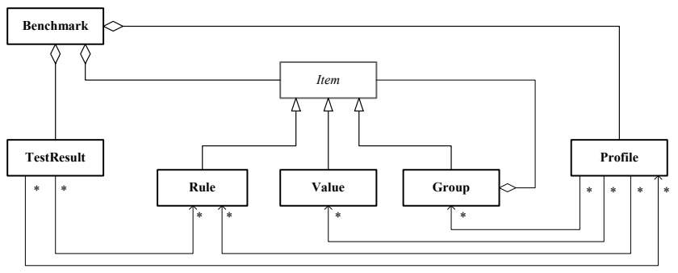
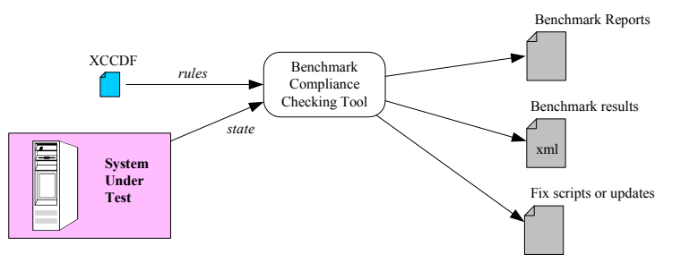

NIST IR 7188 日本語訳
英語タイトル : Specification for the Extensible Configuration Checklist Description Format (XCCDF)日本語タイトル : Extensible Configuration Checklist Description Format（XCCDF）の仕様
公開日 : 2005-01-01
原文URL : https://csrc.nist.gov/pubs/ir/7188/final
原本 PDF : https://doi.org/10.6028/NIST.IR.7188
訳文 : 有志による非公式の日本語訳（AI による翻訳とレビュー）。全 541 段落のうち 508 段落を翻訳済み（原文取得日 : 2026-10-31）
[要約] NIST IR 7188 は、Extensible Configuration Checklist Description Format（XCCDF）の仕様を示した報告書です。2002 年サイバーセキュリティ研究開発法が NIST に、セキュリティリスクを最小化する設定やオプション選択を示すチェックリストの策定を課していることを背景に、NIST と NSA が民間企業の代表者と協力して XCCDF 仕様を策定しました。仕様は、セキュリティチェックリストや構成ガイダンスなどを表現するためのデータモデルと XML 形式を規定し、効果的なセキュリティチェックリストの利用、標準化、共有を促進することを目的としています。この仕様はベンダー中立で柔軟であり、主な想定読者は、政府および産業界のセキュリティアナリストと、産業界のセキュリティ管理製品の開発者です。
NISTIR 7188
NISTIR 7188
Specification for the Extensible Configuration Checklist Description Format (XCCDF)
Extensible Configuration Checklist Description Format（XCCDF）の仕様
Neal Ziring, Author, National Security Agency
Neal Ziring、著者、National Security Agency
John Wack, NIST Editor
John Wack、NIST 編者
NISTIR 7188
NISTIR 7188
Specification for the Extensible Configuration Checklist Description Format (XCCDF)
Extensible Configuration Checklist Description Format（XCCDF）の仕様
Neal Ziring, NSA Author Information Assurance Directorate National Security Agency Fort Meade, MD 20755-6704
Neal Ziring、NSA 著者、Information Assurance Directorate、National Security Agency、Fort Meade, MD 20755-6704
John Wack, NIST Editor Computer Security Division Information Technology Laboratory National Institute of Standards and Technology Gaithersburg, MD 20988-8930
John Wack、NIST 編者、Computer Security Division、Information Technology Laboratory、National Institute of Standards and Technology、Gaithersburg, MD 20988-8930
January 2005
2005 年 1 月
U.S. DEPARTMENT OF COMMERCE
米国商務省
Donald L. Evans, Secretary
Donald L. Evans 長官
TECHNOLOGY ADMINISTRATION
技術管理局
Phillip J. Bond, Under Secretary of Commerce for Technology
Phillip J. Bond、商務次官（技術担当）
NATIONAL INSTITUTE OF STANDARDS AND TECHNOLOGY
米国国立標準技術研究所
Hratch G. Semerjian, Acting Director
Hratch G. Semerjian、所長代行
Abstract
概要
This document specifies the data model and XML representation for the Extensible Configuration Checklist Description Format (XCCDF). An XCCDF document is a structured collection of security configuration rules for some set of target systems. The XCCDF specification is designed to support information interchange, document generation, organizational and situational tailoring, automated compliance testing, and compliance scoring. The specification also defines a data model and format for storing results of benchmark compliance testing. The intent of XCCDF is to provide a uniform foundation for expression of security checklists, benchmarks, and other configuration guidance, and thereby foster more widespread application of good security practices.
本文書は、Extensible Configuration Checklist Description Format（XCCDF）のデータモデルと XML 表現を規定します。XCCDF 文書は、あるターゲットシステム群に対するセキュリティ構成ルールを構造化して集めたものです。XCCDF 仕様は、情報交換、文書生成、組織や状況に応じたテーラリング、自動化されたコンプライアンステスト、およびコンプライアンスのスコアリングを支援するように設計されています。この仕様は、ベンチマークのコンプライアンステストの結果を格納するためのデータモデルと形式も定義します。XCCDF の意図は、セキュリティチェックリスト、ベンチマーク、その他の構成ガイダンスを表現するための統一的な基盤を提供し、それによって優れたセキュリティ実践のより広範な適用を促すことです。
Purpose and Scope
目的と適用範囲
The Cyber Security Research and Development Act of 2002 tasks the National Institute of Standards and Technology (NIST) to “develop, and revise as necessary, a checklist setting forth settings and option selections that minimize the security risks associated with each computer hardware or software system that is, or is likely to become widely used within the Federal Government.” Such checklists, when combined with well-developed guidance, leveraged with high-quality security expertise, vendor product knowledge, operational experience, and accompanied with tools, can markedly reduce the vulnerability exposure of an organization.
2002 年サイバーセキュリティ研究開発法（Cyber Security Research and Development Act of 2002）は、米国国立標準技術研究所（NIST）に対し、「連邦政府内で広く使用されている、または広く使用される可能性が高い各コンピュータハードウェアまたはソフトウェアシステムに関連するセキュリティリスクを最小化する設定およびオプションの選択を示すチェックリストを策定し、必要に応じて改訂する」ことを課しています。このようなチェックリストは、十分に整備されたガイダンスと組み合わせ、高品質なセキュリティ専門知識、ベンダー製品に関する知識、運用経験を活用し、ツールを併用することで、組織が脆弱性にさらされる度合いを大幅に低減できます。
To promote the use, standardization, and sharing of effective security checklists, NIST and NSA have collaborated with representatives of private industry to developed the XCCDF specification. The specification is vendor-neutral, flexible, and suited for a wide variety of checklist applications.
効果的なセキュリティチェックリストの利用、標準化、共有を促進するため、NIST と NSA は民間企業の代表者と協力して XCCDF 仕様を策定しました。この仕様はベンダー中立で柔軟性があり、幅広いチェックリスト用途に適しています。
Audience
想定読者
The primary audience of the XCCDF specification is government and industry security analysts, and industry security management product developers. NIST and NSA welcome feedback from these groups in improving the XCCDF specification.
XCCDF 仕様の主な想定読者は、政府および産業界のセキュリティアナリストと、産業界のセキュリティ管理製品の開発者です。NIST と NSA は、これらの方々から XCCDF 仕様の改善に向けたフィードバックを歓迎します。
Table of Contents
目次
Acknowledgements
謝辞
The editor would like to acknowledge the following individuals who contributed to the initial definition of XCCDF and its initial development: David Proulx, Mike Michinikov, Andrew Buttner, Todd Wittbold, Adam Compton, George Jones, Chris Calabrese, John Banghart, Murugiah Souppaya, John Wack, Trent Pitsenbarger, and Robert Stafford. David Waltermire of the Center for Internet Security was instrumental in supporting the development of XCCDF; he contributed many important concepts and constructs, performed a great deal of proofreading on this specification document, and provided critical input based on implementation experience. Ryan Wilson of Georgia Institute of Technology also made substantial contributions.
編者は、XCCDF の当初の定義と開発に貢献した次の方々に謝意を表します。David Proulx、Mike Michinikov、Andrew Buttner、Todd Wittbold、Adam Compton、George Jones、Chris Calabrese、John Banghart、Murugiah Souppaya、John Wack、Trent Pitsenbarger、Robert Stafford。Center for Internet Security の David Waltermire は、XCCDF の開発を支える上で重要な役割を果たしました。多くの重要な概念と構成要素を提供し、本仕様書の校正を大いに行い、実装経験に基づく重要な意見を寄せてくれました。Georgia Institute of Technology の Ryan Wilson も大きな貢献をしました。
Trademark Information
商標情報
Cisco and IOS are registered trademarks of Cisco Systems, Inc. in the USA and other countries. Windows is a registered trademark of Microsoft Corporation in the USA and other countries. Solaris is a registered trademark of Sun Microsystems, Inc. OVAL is a trademark of The MITRE Corporation.
Cisco および IOS は、Cisco Systems, Inc. の米国およびその他の国における登録商標です。Windows は、Microsoft Corporation の米国およびその他の国における登録商標です。Solaris は、Sun Microsystems, Inc. の登録商標です。OVAL は、The MITRE Corporation の商標です。
Warnings
警告
SOFTWARE IS PROVIDED "AS IS" AND ANY EXPRESS OR IMPLIED WARRANTIES, INCLUDING, BUT NOT LIMITED TO, THE IMPLIED WARRANTIES OF MERCHANTABILITY AND FITNESS FOR A PARTICULAR PURPOSE ARE EXPRESSLY DISCLAIMED. IN NO EVENT SHALL THE CONTRIBUTORS BE LIABLE FOR ANY DIRECT, INDIRECT, INCIDENTAL, SPECIAL, EXEMPLARY, OR CONSEQUENTIAL DAMAGES (INCLUDING, BUT NOT LIMITED TO, PROCUREMENT OF SUBSTITUTE GOODS OR SERVICES; LOSS OF USE, DATA, OR PROFITS; OR BUSINESS INTERRUPTION) HOWEVER CAUSED AND ON ANY THEORY OF LIABILITY, WHETHER IN CONTRACT, STRICT LIABILITY, OR TORT (INCLUDING NEGLIGENCE OR OTHERWISE) ARISING IN ANY WAY OUT OF THE USE OF THIS SOFTWARE, EVEN IF ADVISED OF THE POSSIBILITY OF SUCH DAMAGE.
本ソフトウェアは「現状のまま」提供され、商品性および特定目的への適合性の黙示の保証を含む一切の明示または黙示の保証を明示的に否認します。いかなる場合も、貢献者は、契約、厳格責任または不法行為（過失その他を含む）に基づくかを問わず、本ソフトウェアの使用に何らかの形で起因する直接的、間接的、付随的、特別、例示的または結果的な損害（代替の物品またはサービスの調達、使用、データまたは利益の損失、事業の中断を含みますが、これらに限定されません）について、その損害の可能性を知らされていた場合であっても、責任を負いません。
1. Introduction
1. はじめに
The security of an IT system may be measured in a variety of ways, but one way that has worked well in practice is conformance of the system configuration to a security benchmark. A typical benchmark includes criteria and rules for hardening a system against the most common forms of compromise and exploitation, and for reducing the exposed ‘attack surface’ of a system. Many different companies, government agencies, and community groups create and disseminate security benchmarks. While these various organizations often cooperate on the definition of the rules embodied in these consensus benchmarks, the underlying specification, test, and report formats used for these endeavors have been specialized and unique.
IT システムのセキュリティは様々な方法で測定できますが、実際にうまく機能してきた方法の一つが、システム構成がセキュリティベンチマークに適合しているかどうかを見ることです。典型的なベンチマークには、最も一般的な形の危殆化や悪用に対してシステムを堅牢化し、システムの露出した「攻撃対象領域」を減らすための基準とルールが含まれます。多くの異なる企業、政府機関、コミュニティグループが、セキュリティベンチマークを作成し、配布しています。これらの組織は、合意に基づくベンチマークに盛り込まれるルールの定義で協力することが多いものの、その取り組みで用いられる基盤となる仕様、テスト、レポートの形式は、特化したものであり、それぞれ固有でした。
Configuring a system into conformance with a benchmark or other security specification is a highly technical task. To aid system administrators, commercial and community developers have created automated tools that can score a system’s conformance and recommend corrective measures. Many of these tools are data-driven: they accept a benchmark specification in some program-readable form, and use it to perform the checks and tests necessary to measure conformance and generate reports. However, with rare exceptions, none of these tools employ the same data formats, thus requiring duplication of effort and precluding interoperability.
システムをベンチマークやその他のセキュリティ仕様に適合するよう構成することは、高度に技術的な作業です。システム管理者を支援するため、商用およびコミュニティの開発者は、システムの適合度をスコア化し、是正措置を推奨する自動化ツールを作成してきました。これらのツールの多くはデータ駆動型で、ベンチマーク仕様をプログラムが読める形式で受け取り、それを使って適合度の測定とレポート生成に必要なチェックとテストを行います。しかし、まれな例外を除き、これらのツールが同じデータ形式を採用していないため、作業が重複し、相互運用性も妨げられています。
This note describes a data model and processing discipline for supporting secure configuration and assessment. The requirements and goals are explained in detail below, but may be summarized briefly as document generation, expression of policy-aware configuration rules, support for complex and compound rules, support for compliance scoring, and support for customization and tailoring. The model and its XML representation are intended to be platform-independent and portable, to foster broad adoption and sharing of rules. The processing discipline of the format requires, for some uses, a service layer that can collect and store system information and perform simple policy-neutral tests against the system information. These conditions are described in detail below. The XML representation is expressed as an XML Schema in Appendix A.
この覚書は、セキュアな構成と評価を支援するためのデータモデルと処理規律を説明します。要件と目標は以下で詳しく説明しますが、簡潔にまとめると、文書生成、ポリシーを意識した構成ルールの表現、複雑なルールや複合ルールのサポート、コンプライアンススコアリングのサポート、カスタマイズとテーラリングのサポートです。このモデルとその XML 表現は、プラットフォームに依存せず可搬性があるものとし、ルールの幅広い採用と共有を促すことを意図しています。この形式の処理規律は、用途によっては、システム情報を収集して保存し、そのシステム情報に対してポリシーに中立な単純なテストを実行できるサービス層を必要とします。これらの条件は以下で詳しく説明します。XML 表現は、付録 A の XML スキーマとして表現されています。
This document has been prepared for use by Federal agencies. It may be used by nongovernmental organizations on a voluntary basis and is not subject to copyright, though attribution is desired.
本文書は連邦機関が使用するために作成されました。非政府組織は任意で使用してもよく、著作権の対象ではありませんが、出典を明記することが望まれます。
1.1. Background
1.1. 背景
Today, groups promoting good security practices and system owners wishing to adopt them face an overload in the size and complexity of their tasks. As systems get larger, automated tools become a necessity for uniform application of security rules and visibility into system status. These conditions have created a need for mechanisms that:
現在、優れたセキュリティ実践を推進するグループと、それを採用したいシステム所有者は、作業の規模と複雑さに圧倒されています。システムが大規模になるにつれて、セキュリティルールを均一に適用し、システムの状況を把握するために、自動化ツールが必要になります。こうした状況により、次のような仕組みが必要とされています。
•permit faster, more cooperative, and more automated definition of security rules, procedures, guidance documents, alerts, advisories, and remediation measures,
•セキュリティルール、手順、ガイダンス文書、アラート、アドバイザリ、修復措置の定義を、より迅速に、より協力的に、より自動化して行えるようにする
•permit fast, uniform, manageable administration of security checks and audits,
•セキュリティチェックと監査の、迅速で均一かつ管理可能な運用を可能にする
•permit composition of security rules and tests from different community groups and vendors,
•さまざまなコミュニティグループやベンダーのセキュリティルールとテストを組み合わせて構成できるようにする
•permit scoring and reporting of security status, both over distributed systems and over the same systems across their operational lifetimes,
•分散したシステム全体についても、同じシステムの運用期間全体にわたっても、セキュリティ状況のスコアリングと報告を可能にする
•foster development of interoperable community and commercial tools for creating and employing security benchmarks.
•セキュリティベンチマークを作成し利用するための、相互運用可能なコミュニティ製および商用のツールの開発を促す
Today, such mechanisms exist only in some isolated niche areas (e.g. MS Windowstm patch validation) and they support only narrow slices of security benchmark compliance functionality. This note proposes a data model and format specification for an extensible, interoperable benchmark ‘language’.
現在、このような仕組みは一部の孤立したニッチ分野（例: MS Windowstm のパッチ検証）にしか存在せず、セキュリティベンチマークのコンプライアンス機能のうち限られた一部しか支援していません。本覚書は、拡張可能で相互運用可能なベンチマーク「言語」のためのデータモデルと形式仕様を提案します。
1.2. Vision for Use
1.2. 利用の構想
XCCDF is designed to enable easier, more uniform creation of security benchmarks, and allow benchmarks to be used with a variety of commercial and open tools. The motivation for this is improvement of security for IT systems, including the Internet, by better application of known security practices and configuration settings.
XCCDF は、セキュリティベンチマークをより簡単かつ均一に作成できるようにし、ベンチマークをさまざまな商用ツールやオープンなツールで使えるようにすることを目的に設計されています。その動機は、既知のセキュリティ実践と構成設定をよりよく適用することで、インターネットを含む IT システムのセキュリティを向上させることにあります。
The scenarios below illustrate some uses of security benchmarks and tools that XCCDF will foster.
以下のシナリオは、XCCDF が促進するセキュリティベンチマークとツールの利用例を示しています。
•Scenario 1 – An academic group produces a benchmark for secure configuration of a particular server operating system version. A government organization issues a set of rules extending the academic benchmark to meet more stringent user authorization criteria imposed by statute. A medical enterprise downloads both the academic benchmark and the government extension, tailors the combination to fit their internal security policy, and applies an enterprise-wide audit using a commercial security audit tool. Reports output by the tool include remediative measures which the medical enterprise IT staff use to bring their systems into full internal policy compliance.
•シナリオ 1 – 学術グループが、特定のバージョンのサーバー OS をセキュアに構成するためのベンチマークを作成します。政府機関が、法令で課されたより厳格なユーザー認可基準を満たすために、その学術ベンチマークを拡張するルール群を発行します。ある医療企業が、学術ベンチマークと政府の拡張の両方をダウンロードし、その組み合わせを自社の内部セキュリティポリシーに合うようにテーラリングし、商用のセキュリティ監査ツールを使って全社的な監査を実施します。ツールが出力するレポートには修復措置が含まれており、医療企業の IT 担当者はそれを使って、システムを内部ポリシーに完全に準拠させます。
•Scenario 2 – A federally-funded lab issues a security advisory about a new Internet worm. In addition to a prose description of the worm’s attack vector, they include a set of short benchmarks in a standard format that assess vulnerability to the worm for various operating system platforms. Organizations all over the world pick up the advisory, and use installed tools that support the standard format to check their status and fix vulnerable systems.
•シナリオ 2 – 連邦政府の資金を受けた研究所が、新しいインターネットワームに関するセキュリティアドバイザリを発行します。このアドバイザリには、ワームの攻撃ベクトルの文章による説明に加えて、さまざまな OS プラットフォームがそのワームに対して脆弱かどうかを評価する、標準形式の短いベンチマーク群が含まれています。世界中の組織がこのアドバイザリを入手し、その標準形式に対応したインストール済みのツールを使って、自らの状況を確認し、脆弱なシステムを修正します。
•Scenario 3 – An industry consortium wants to produce a security checklist for a popular commercial server. The core security settings are the same for all OS platforms on which the server runs, but a few settings are OS-specific. The consortium can craft one checklist in a standard format for the core settings, and then write several OS-specific ones that incorporate the core settings by reference. Users download the core checklist and the OS-specific checklists that apply to their installations, and run a checking tool to score their compliance with the checklist.
•シナリオ 3 – 業界コンソーシアムが、広く使われている商用サーバーのセキュリティチェックリストを作成しようとしています。中核となるセキュリティ設定は、そのサーバーが動作するすべての OS プラットフォームで同じですが、いくつかの設定は OS 固有です。コンソーシアムは、中核となる設定のための標準形式のチェックリストを 1 つ作成し、続いて、中核の設定を参照によって取り込む OS 固有のチェックリストを複数作成できます。ユーザーは、中核のチェックリストと、自分の環境に該当する OS 固有のチェックリストをダウンロードし、チェックツールを実行して、チェックリストへのコンプライアンスをスコア化します。
2. Requirements
2. 要件
The general objective for XCCDF is to allow security analysts and IT experts to create effective and inter-operable benchmarks, and to support use of benchmarks with a wide variety of tools. Figure 1 shows some purposes for which a benchmark might be used.
XCCDF の全般的な目的は、セキュリティアナリストと IT の専門家が、効果的で相互運用可能なベンチマークを作成できるようにし、幅広いツールでのベンチマークの利用を支援することです。図 1 に、ベンチマークの利用目的をいくつか示します。
![Diagram of uses of XCCDF documents, with numbered steps in black circles. 1: "Security Experts and Domain Experts" create a document "XML" in "XCCDF benchmark format". 2: "Tailoring Tools", used by the "System Administrator or Auditor", read and modify the XCCDF document (arrows loop between the document and the tool). From the XML document a line branches to four tools, each also receiving an "XCCDF" document: 3: "Document Generator", which with "Formatting information" produces "pdf" "Publication Documents"; 4 and 5: "Transform Engine", which with "xsl" "Stylesheets" produces "html" "Web pages" and "xml" for "Other Tools"; 6 and 7: "Compliance Benchmarking Tool", which takes "System tests" and the state of the "System Under Test" (pictured as a server in a pink box) and produces "Benchmark Reports", "xccdf" "Benchmark results" (passed to "Other Reporting Tools") and "Fix scripts or updates" (with a grey arrow back to the system under test); 8: "Security Status Monitor or Vulnerability Tester", which also reads the system under test and produces "Non-compliance or vulnerability alerts".](assets/ir-7188/p0009-drawing-01.png)
XCCDF 文書の用途の図で、黒い丸の番号が手順を示しています。1: 「Security Experts and Domain Experts」（セキュリティ専門家と分野の専門家）が「XCCDF benchmark format」（XCCDF ベンチマーク形式）の文書「XML」を作成します。2: 「System Administrator or Auditor」（システム管理者または監査者）が使う「Tailoring Tools」（調整ツール）が XCCDF 文書を読み、修正します（文書とツールの間を矢印が循環しています）。XML 文書から線が 4 つのツールへ分かれ、それぞれに「XCCDF」文書が渡されます。3: 「Document Generator」（文書生成器）は「Formatting information」（書式情報）を使い、「pdf」の「Publication Documents」（出版文書）を作ります。4・5: 「Transform Engine」（変換エンジン）は「xsl」の「Stylesheets」（スタイルシート）を使い、「html」の「Web pages」（ウェブページ）と、「Other Tools」（ほかのツール）へ渡す「xml」を作ります。6・7: 「Compliance Benchmarking Tool」（準拠ベンチマークツール）は「System tests」（システムテスト）と「System Under Test」（試験対象システム、桃色の枠の中のサーバーの絵）の状態を受け取り、「Benchmark Reports」（ベンチマーク報告）、「xccdf」の「Benchmark results」（ベンチマーク結果、「Other Reporting Tools」（ほかの報告ツール）へ渡す）、「Fix scripts or updates」（修正スクリプトまたは更新、灰色の矢印で試験対象システムへ戻る）を出力します。8: 「Security Status Monitor or Vulnerability Tester」（セキュリティ状態監視または脆弱性テスター）も試験対象システムを読み、「Non-compliance or vulnerability alerts」（不準拠または脆弱性の警告）を出します。
Figure 1 – Use Cases for XCCDF Documents
図 1 – XCCDF 文書のユースケース
The list below describes some requirements for each of the uses.
以下に、それぞれの用途に対する要件をいくつか説明します。
1.Security and domain experts create a benchmark, which is an organized collection of rules about a particular kind of system or platform. To support this use, XCCDF must be an open, standardized format, amenable to generation and editing with a variety of tools. It must be expressive enough to represent complex conditions and relationships about the systems to be benchmarked, and it must also be able to incorporate descriptive material and remediative measures. (XCCDF benchmarks may include specification of the hardware and/or software platforms to which they apply. The specification should be concrete and granular enough for compliance checking tools to detect whether a rule is suited for a target platform.)
1.セキュリティおよびドメインの専門家は、特定の種類のシステムやプラットフォームに関するルールを整理して集めたもの、すなわちベンチマークを作成します。この用途を支援するため、XCCDF は、さまざまなツールで生成・編集しやすい、オープンで標準化された形式でなければなりません。ベンチマークの対象となるシステムに関する複雑な条件や関係を表現できるだけの表現力を備え、説明資料や修復措置も取り込まなければなりません。（XCCDF ベンチマークには、適用対象となるハードウェアまたはソフトウェアのプラットフォームの指定を含めてもよいです。その指定は、コンプライアンスチェックツールがルールをターゲットプラットフォームに適しているかどうか検出できる程度に、具体的で粒度の細かいものにすべきです。）
2.Auditors and system administrators may employ tailoring tools to customize a benchmark for their local environment or policies. An XCCDF document must include the structure and interrogative text needed to guide the user in tailoring a benchmark, and it must be able to hold or incorporate the user’s tailoring responses.
2.監査人やシステム管理者は、テーラリングツールを使って、ベンチマークを自分たちのローカル環境やポリシーに合わせてカスタマイズしてもよいです。XCCDF 文書は、ユーザーがベンチマークをテーラリングする際の案内となる構造と問いかけのテキストを含まなければなりません。また、ユーザーによるテーラリングの回答を保持または取り込めなければなりません。
3.In addition to supporting tailoring and security audits, an XCCDF document should be structured to foster generation of hardcopy benchmark guides.
3.テーラリングとセキュリティ監査の支援に加えて、XCCDF 文書は、ベンチマークガイドの紙媒体での生成を促す構造にすべきです。
4.The structure of a XCCDF document should support transformation into HTML, for posting the benchmark as a web page.
4.XCCDF 文書の構造は、ベンチマークを Web ページとして掲載するために、HTML への変換をサポートすべきです。
5.An XCCDF document should be transformable into (other) XML formats, to promote portability and interoperability.
5.XCCDF 文書は、移植性と相互運用性を促進するために、（他の）XML 形式に変換できるべきです。
6.The primary use for an XCCDF benchmark is to drive automated security benchmarking tools. Such tools should accept one or more XCCDF documents, and supporting system test definitions, and check whether their rules are satisfied by some particular target system. The XCCDF document should support generation of a compliance report, including a weighted compliance score.
6.XCCDF ベンチマークの主な用途は、自動化されたセキュリティベンチマークツールを駆動することです。そのようなツールは、1 つ以上の XCCDF 文書と、システムテスト定義を受け入れ、特定のターゲットシステムがそれらのルールを満たしているかどうかをチェックすべきです。XCCDF 文書は、重み付けされたコンプライアンススコアを含むコンプライアンスレポートの生成を支援すべきです。
7.In addition to a benchmark report, some benchmarking tools may be capable of generating scripts or procedures for helping to bring a system into compliance. XCCDF must be able to hold or encapsulate the remediation scripts or texts.
7.ベンチマークレポートに加えて、一部のベンチマークツールは、システムをコンプライアンスに適合させる助けとなるスクリプトや手順を生成できる場合があります。XCCDF は、修復スクリプトや修復のテキストを保持またはカプセル化できなければなりません。
8.XCCDF documents might also be used in vulnerability scanners, to test whether a target system is vulnerable to a particular kind of attack. For this purpose, the XCCDF document would play the role of a vulnerability alert, but with the ability to both describe the problem and drive automated verification of its presence.
8.XCCDF 文書は、ターゲットシステムが特定の種類の攻撃に対して脆弱かどうかをテストするために、脆弱性スキャナでも使われる場合があります。この目的では、XCCDF 文書は脆弱性アラートの役割を果たしますが、問題を記述することと、その存在の自動的な検証を駆動することの両方ができます。
In addition to these use cases, an XCCDF document should be amenable to embedding inside other documents, and to having data expressed in other formats embedded inside of it. Also, as its name implies, XCCDF must be extensible – it must be possible for new functionality and features to be added to XCCDF-capable tools and data for those new features stored in XCCDF without breaking other tools.
これらのユースケースに加えて、XCCDF 文書は、他の文書の中に埋め込めること、また他の形式で表現されたデータを自身の中に埋め込めることを考慮した作りにすべきです。また、その名が示すとおり、XCCDF は拡張可能でなければなりません。XCCDF に対応したツールに新しい機能や特徴を追加でき、それらの新機能のデータを、他のツールを壊すことなく XCCDF の中に格納できなければなりません。
2.1. Structure and Tailoring Requirements
2.1. 構造とテーラリングの要件
To support tailoring by users, and generation of documents for users, XCCDF must allow authors to impose organization on a benchmark. Benchmark authors will need to arrange rules in order, and collect them into groups.
ユーザーによるテーラリングと、ユーザー向けの文書の生成を支援するため、XCCDF は、作成者がベンチマークに構成を持たせられるようにしなければなりません。ベンチマークの作成者は、ルールを順序付けし、グループにまとめる必要があります。
For benchmark structure, a benchmark author must be able to designate the order in which rules or groups are to be processed. As the simplest case, processing order can be simply the order in which the rules appear in the XCCDF document.
ベンチマークの構造については、ベンチマークの作成者が、ルールやグループを処理する順序を指定できなければなりません。最も単純な場合、処理の順序は、XCCDF 文書の中でルールが現れる順序とするだけでよいです。
For tailoring, values, rules and groups will need descriptive and interrogative text to help a user make tailoring decisions. Two basic kinds of tailoring will be needed:
テーラリングについては、値、ルール、グループに、ユーザーがテーラリングを判断するのを助ける説明と問いかけのテキストが必要になります。基本的なテーラリングには次の 2 種類があります。
•Selectability – a tailoring action might select or deselect a rule or group of rules for inclusion or exclusion from the benchmark. For example, at a site where no FTP service is used, an auditor might choose to deselect all rules about secure configuration of the FTP server.
•選択可能性 – テーラリング操作では、ルールまたはルール群を、ベンチマークに含めるか除外するかを選択または選択解除する場合があります。たとえば、FTP サービスを使っていないサイトでは、監査人は、FTP サーバーのセキュアな構成に関するルールをすべて選択解除することを選ぶ場合があります。
•Substitution – a tailoring action might substitute a locally-significant value for a general value in a rule. For example, at a site where all logs are sent to a designated logging host, the address of that log server might be substituted into a rule about audit configuration.
•置換 – テーラリング操作では、ルールの中の一般的な値を、そのローカルで意味を持つ値に置換する場合があります。たとえば、すべてのログを指定のログ記録ホストに送っているサイトでは、監査構成に関するルールの中に、そのログサーバーのアドレスを置換する場合があります。
Once benchmarks can be tailored, the possibility arises that some rules within the same benchmark might conflict or be mutually exclusive. In other words, the author of a benchmark must be able to identify particular tailoring choices as incompatible, so that tailoring tools can take appropriate actions.
ベンチマークをテーラリングできるようになると、同じベンチマークの中のあるルール同士が衝突したり、相互に排他的になったりする可能性が生じます。言い換えると、ベンチマークの作成者は、特定のテーラリングの選択を両立しないものとして識別できなければならず、それによってテーラリングツールが適切な措置を取れるようにしなければなりません。
In addition to being able to specify rules, XCCDF must support structures that fosters use and re-use of rules. To this end, XCCDF must provide a means for related rules to be grouped together, and for sets of rules and groups which should be applied in concert to be designated, named, and applied easily. Two realizations of this notion are benchmark levels, as provided in benchmarks distributed by the Center for Internet Security, and checklist baselines, as described in the NIST security checklist program [11].
ルールを指定できることに加えて、XCCDF は、ルールの利用と再利用を促す構造をサポートしなければなりません。そのため XCCDF は、関連するルールをまとめてグループ化する手段と、協調して適用すべきルールとグループの集合を指定し、名前を付け、容易に適用できる手段を提供しなければなりません。この考え方の具体化として、Center for Internet Security が配布するベンチマークに備わるベンチマークレベルと、NIST セキュリティチェックリストプログラム [11] で説明されているチェックリストベースラインの 2 つがあります。
For benchmark processing, there are two basic processing modes: rule checking, and document generation. It must be possible for a benchmark author to designate the modes under which a rule may be processed.
ベンチマークの処理には、ルールチェックと文書生成の 2 つの基本的な処理モードがあります。ベンチマークの作成者は、ルールを処理できるモードを指定できなければなりません。
2.2. Inheritance and Inclusion Requirements
2.2. 継承と包含の要件
To support building up benchmarks from parts, XCCDF must support mechanisms for authors to extend (inherit from) existing rules and rule groups, in addition to expressing rules and groups in their entirety. Also, it must be possible for one benchmark to include all or part of another. There are a couple of benchmarking use cases where inheritance and inclusion will be needed.
ベンチマークを部品から組み上げることを支援するため、XCCDF は、ルールやルールグループを全体として表現することに加えて、作成者が既存のルールやルールグループを拡張（継承）する仕組みをサポートしなければなりません。また、あるベンチマークが別のベンチマークの全体または一部を包含できなければなりません。継承と包含が必要となるベンチマークの用途がいくつかあります。
•An organization might choose to define a foundational benchmark for a family of platforms (e.g. Unixtm-like operating systems) and then extend them for specific members of the family (e.g. Solaristm) or for specific roles (e.g. mail server).
•組織は、プラットフォームのファミリー（たとえば Unixtm 系 OS）の基盤となるベンチマークを定義し、それをファミリーの特定のメンバー（たとえば Solaristm）や特定の役割（たとえばメールサーバー）向けに拡張することを選ぶ場合があります。
•An analyst might choose to make an extended version of a benchmark, by adding some new rules and adjusting some others.
•アナリストは、いくつかの新しいルールを追加し、他のいくつかを調整することで、ベンチマークの拡張版を作ることを選ぶ場合があります。
•If the sets of rules that constitute a benchmark come from several sources, it will be useful to be able to aggregate them using an inclusion mechanism.
•ベンチマークを構成するルールの集合が複数の出典に由来する場合、包含の仕組みを使ってそれらを集約できると便利です。
•Within a benchmark, it might be desirable to share some of the descriptive material among several rules. With extension, this can be accomplished by creating a base rule, and then extending it with several different rule checks.
•ベンチマークの中で、説明資料の一部を複数のルールで共有したい場合があります。拡張を使えば、基底となるルールを作り、それをいくつかの異なるルールチェックで拡張することで実現できます。
•For updating a benchmark, it will be convenient to be able to incorporate changes or additions using extension.
•ベンチマークを更新する際には、拡張を使って変更や追加を取り込めると便利です。
•To allow broader site-specific or enterprise-specific customization, it should be possible for a user to override or amend any portion of a benchmark rule.
•サイト固有またはエンタープライズ固有の、より幅広いカスタマイズを可能にするため、ユーザーがベンチマークルールのどの部分でも上書きまたは修正できるようにすべきです。
The XCCDF specification does not include any mechanism for inclusion; instead, implementations of XCCDF tools should support the XML Inclusion (XInclude) facility standardized by the W3C [9].
XCCDF 仕様には、包含の仕組みは含まれていません。その代わりに、XCCDF ツールの実装は、W3C が標準化した XML Inclusion（XInclude）機能 [9] をサポートすべきです。
2.3. Document and Report Formatting Requirements
2.3. 文書とレポートの書式の要件
Several of the main use cases for XCCDF benchmarks involve generation of reports or other documents for users to read. Authors will need mechanisms for formatting text, including images, and referencing other information resources. These mechanisms must be separable from the text itself, so that they can be filtered out by applications that do not support them. (XCCDF 1.0 currently satisfies these formatting requirements mainly by allowing inclusion of XHTML markup tags [3].)
XCCDF ベンチマークの主なユースケースのいくつかは、ユーザーが読むレポートやその他の文書の生成を伴います。作成者には、テキストを整形し、画像を含め、他の情報資源を参照するための仕組みが必要になります。これらの仕組みは、対応していないアプリケーションが除外できるように、テキストそのものから分離できなければなりません。（XCCDF 1.0 は現在、主に XHTML のマークアップタグ [3] の包含を認めることで、これらの書式の要件を満たしています。）
For document formatting, a benchmark should be able to include arbitrary document text that does not contribute directly to the benchmarking process: introduction, rationale, warnings, and references are just some of the uses for extra text.
文書の書式については、ベンチマークは、ベンチマーク作業に直接寄与しない任意の文書テキストを含められるようにすべきです。導入、根拠、警告、参考文献は、追加のテキストの用途のごく一部にすぎません。
2.4. Rule Checking Requirements
2.4. ルールチェックの要件
The primary use for XCCDF will be performing security and operational checks on systems. Therefore, XCCDF must have access to very fine-grained and expressive mechanisms for checking the state of a system against rule criteria. The community seems to have reached an informal consensus that the model for this is to treat the state or configuration of a system as a collection of facts, and to treat expression of conditions and criteria as an operation or combination of operations against the collection. The operations used have varied with different existing applications; some rule checking systems use a database query operation model, while others use a pattern-matching model. At the least, any rule checking mechanism used for XCCDF must satisfy the following criteria:
XCCDF の主な用途は、システムに対してセキュリティおよび運用上のチェックを実行することです。したがって XCCDF は、ルールの基準に照らしてシステムの状態をチェックするための、きわめて粒度が細かく表現力のある仕組みを利用できなければなりません。そのためのモデルとして、システムの状態や構成を事実の集合として扱い、条件や基準の表現を、その集合に対する操作または操作の組み合わせとして扱うことについて、コミュニティの間で非公式な合意ができているようです。用いられる操作は既存のアプリケーションによって異なり、データベース問い合わせの操作モデルを使うルールチェックシステムもあれば、パターンマッチングのモデルを使うものもあります。XCCDF に使われるルールチェックの仕組みは、少なくとも次の基準を満たさなければなりません。
•It must be able to express both positive and negative criteria - A positive criterion means that if certain conditions are met, then the system satisfies the benchmark, while a negative criterion means if the conditions are met the system fails the benchmark. Experience has shown that both kinds are necessary when crafting security benchmarks.
•肯定的な基準と否定的な基準の両方を表現できなければなりません - 肯定的な基準とは、特定の条件を満たしていればシステムがベンチマークを満たすという意味であり、否定的な基準とは、条件を満たしていればシステムがベンチマークに不適合となるという意味です。経験上、セキュリティベンチマークを作成する際にはどちらの種類も必要です。
•It must be able to express boolean combinations of criteria - It is often impossible to express a high-level security property as a single quantitative or qualitative statement about a system’s state. Therefore, the ability to combine statements with ‘and’ and ‘or’ is critical.
•基準のブール式による組み合わせを表現できなければなりません - 上位レベルのセキュリティ特性を、システムの状態に関する単一の定量的または定性的な記述として表現することは、しばしば不可能です。したがって、記述を ‘and’ や ‘or’ で組み合わせられることが重要です。
•It must be able to incorporate tailoring values set by the user - As described above, substitution is important for benchmark tailoring. Any XCCDF checking mechanism must support substitution of tailored values into its criteria or statements as well as tailoring of the selected set of rules.
•ユーザーが設定したテーラリング値を取り込めなければなりません - 前述のとおり、置換はベンチマークのテーラリングにとって重要です。XCCDF のチェックの仕組みはいずれも、選択されたルール集合のテーラリングに加えて、テーラリングされた値を基準や記述に置換することをサポートしなければなりません。
It is not clear that a single rule specification scheme can be defined that will satisfy all uses of XCCDF. Therefore, the XCCDF definition must allow for use of different rule checking systems, and a means for identifying the checking system used in a each rule. It is important that the rule checking system be defined separately from XCCDF itself, so that they can evolve separately and be used independently when necessary. This further implies the need to cleanly define the interface between XCCDF and the rule checking system, in terms of information passed from each to the other.
XCCDF のすべての用途を満たす単一のルール指定方式を定義できるかどうかは、明らかではありません。したがって XCCDF の定義は、異なるルールチェックシステムの使用と、各ルールで使われるチェックシステムを識別する手段を認めなければなりません。ルールチェックシステムは、XCCDF と別々に進化でき、必要に応じて独立して使用できるように、XCCDF 自体とは別に定義することが重要です。これはさらに、XCCDF とルールチェックシステムの間で相互に渡される情報の観点から、両者のインタフェースを明確に定義する必要があることを意味します。
2.5. Metadata and Security Requirements
2.5. メタデータとセキュリティの要件
Security benchmarks are fairly common, and some government and volunteer organizations have disclosed plans to create repositories of benchmarks. To facilitate discovery and retrieval of benchmarks in repositories and on the open Internet, XCCDF must support inclusion of metadata about a benchmark. Some of the metadata that must be supported includes: benchmark title, name of benchmark author(s), organization providing the benchmark, version number, release date, update URL, and a description.
セキュリティベンチマークはかなり一般的になっており、政府機関やボランティア組織の中には、ベンチマークのリポジトリを作成する計画を公表しているところもあります。リポジトリや公開インターネット上でのベンチマークの発見と取得を容易にするため、XCCDF は、ベンチマークに関するメタデータを含められることをサポートしなければなりません。サポートしなければならないメタデータには、ベンチマークのタイトル、ベンチマーク作成者の名前、ベンチマークを提供する組織、バージョン番号、公開日、更新用 URL、説明などがあります。
A number of metadata standards already exist, it is preferable that XCCDF simply incorporate one of them rather than defining its own metadata model.
メタデータの標準はすでに数多く存在するため、XCCDF は、独自のメタデータモデルを定義するよりも、単にそのうちの 1 つを取り込むことが望ましいです。
Application of a security benchmark is a very sensitive action in the management of an IT system. Therefore, some users may need to verify the integrity and provenance of a benchmark before using it. Fortunately, mature standards for digital signatures already exist that are suitable for asserting the authorship and protecting the integrity of benchmarks. XCCDF must provide a means to hold such signatures, and a uniform method for applying and validating them.
セキュリティベンチマークの適用は、IT システムの管理において非常に慎重を要する操作です。したがって、ユーザーによっては、使用する前にベンチマークの完全性と来歴を検証する必要がある場合があります。幸い、ベンチマークの著者性を証明し、その完全性を保護するのに適した、成熟したデジタル署名の標準がすでに存在します。XCCDF は、そのような署名を保持する手段と、署名を適用し検証するための統一的な方法を提供しなければなりません。
3. Data Model
3. データモデル
The fundamental data model for XCCDF consists of four main object data types:
XCCDF の基本的なデータモデルは、4 つの主なオブジェクトのデータ型で構成されます。
1.Benchmark – An XCCDF document holds exactly one Benchmark object. A Benchmark holds descriptive text, and acts as a container for items and other objects.
1.Benchmark – XCCDF 文書は、Benchmark オブジェクトをちょうど 1 つ保持します。Benchmark は説明テキストを保持し、Item やその他のオブジェクトのコンテナとして機能します。
2.Item – An Item is a named constituent of a benchmark; it has properties for descriptive text, and can be referenced by an id. There are several derived classes of Items.
2.Item – Item は Benchmark の名前付きの構成要素であり、説明テキストのためのプロパティを持ち、id によって参照できます。Item には、いくつかの派生クラスがあります。
•Group – This kind of Item can hold other Items. If a Group is unselected, then all of the items it contains are unselected. A Group may be selected or unselected.
•Group – この種類の Item は、他の Item を保持できます。Group が選択解除されると、それに含まれるすべての Item が選択解除されます。Group は、選択または選択解除できます。
•Rule – This kind of Item holds a rule checking definition, a scoring weight, and may also hold remediation text. A Rule may be selected or unselected.
•Rule – この種類の Item は、ルールチェックの定義と採点の重みを保持し、修復のテキストも保持する場合があります。Rule は、選択または選択解除できます。
•Value – This kind of Item is a named data value that can be substituted into other Item’s property values. It can also have an associated data type and operator that expresses how the value should be used and how it can be tailored.
•Value – この種類の Item は、他の Item のプロパティ値に置換できる、名前の付いたデータ値です。この値をどのように使用すべきか、またどのようにテーラリングできるかを表現する、関連付けられたデータ型と演算子を持つこともできます。
3.Profile – A profile is a collection of attributed references to Rule, Group, and Value objects. It supports the requirement to allow definition of named levels or baselines in a benchmark (see Section 2.1).
3.Profile – Profile は、Rule、Group、Value の各オブジェクトへの属性付き参照の集合です。これは、ベンチマーク内で名前付きのレベルやベースラインを定義できるようにするという要件（第 2.1 節を参照）を支援します。
4.TestResult – A test result object holds the results of performing a compliance test against a single target device or system.
4.TestResult – TestResult オブジェクトは、単一のターゲットデバイスまたはシステムに対してコンプライアンステストを実行した結果を保持します。
Figure 2, below, shows the data model relationships as a UML diagram.
以下の図 2 は、データモデルの関係を UML 図で示しています。

XCCDF のデータモデルの UML クラス図です。「Benchmark」が「TestResult」、抽象クラス「Item」（斜体）、「Profile」を集約しています（Benchmark 側に白抜きのひし形）。「Rule」「Value」「Group」は Item のサブクラスです（白抜きの三角の矢印）。「Group」は Item を集約しています（Group 側に白抜きのひし形）。多重度「*」の向きのある関連が、TestResult から Rule と Profile へ、Profile から Rule、Value、Group へあります。
Figure 2 –XCCDF High-Level Data Model
図 2 – XCCDF の高レベルデータモデル
As shown in Figure 2, one Benchmark can hold many Items, but each Item belongs to exactly one Benchmark. Similarly, a Group can hold many Items, but an Item may belong to only one Group. Thus, the Items in a benchmark form a tree, where the root node is the Benchmark, interior nodes are Groups, and the leaves are Values and Rules.
図 2 に示すように、1 つの Benchmark は多数の Item を保持できますが、各 Item はちょうど 1 つの Benchmark に属します。同様に、Group は多数の Item を保持できますが、Item が属せる Group は 1 つだけです。したがって、ベンチマーク内の Item は木構造を成し、根のノードが Benchmark、内部のノードが Group、葉が Value と Rule になります。
A Profile object references Rule, Value, and Group objects. A TestResult object references Rule objects, and may also reference a Profile object.
Profile オブジェクトは、Rule、Value、Group の各オブジェクトを参照します。TestResult オブジェクトは、Rule オブジェクトを参照し、Profile オブジェクトも参照する場合があります。
The definition of a Value, Rule, or Group can extend another Value, Rule, or Group. The extending item inherits property values from the extended item. This extension mechanism is separate and independent of grouping.
Value、Rule、Group の定義は、別の Value、Rule、Group を拡張できます。拡張する側の Item は、拡張される側の Item からプロパティ値を継承します。この拡張の仕組みは、グループ化とは別個であり、独立しています。
Group and Rule items can be marked by a benchmark author as selected or unselected. A Group or Rule that is not selected does not undergo processing. The author may also stipulate, for a Group, Rule, or Value, whether the end user is permitted to tailor it.
Group と Rule の Item は、Benchmark の作成者によって、選択または選択解除としてマークできます。選択されていない Group や Rule は、処理の対象になりません。作成者は、Group、Rule、Value について、エンドユーザーがそれをテーラリングしてもよいかどうかを定めることもできます。
Rule items may have a scoring weight associated with them, which can be used by a benchmark checking tool to compute a target system’s overall compliance score. Rule items may also hold remediation information.
Rule の Item には、スコアリングの重みを関連付けることができ、Benchmark をチェックするツールは、それを使ってターゲットシステムの全体的なコンプライアンススコアを計算できます。Rule の Item は、修復情報も保持する場合があります。
Value items include information about current, default, and permissible values for the Value. Each of these properties of a Value can have an associated selector id, which is used when customizing the Value as part of a Profile. For example, a Value might be used to hold a Benchmark’s lower limit for password length on some operating system. In a Profile for that operating system to be used in a closed lab, the default value might be 5, but in a Profile for that operating system to be used on the Internet, the default value might be 10.
Value の Item には、その Value の現在値、既定値、許容値に関する情報が含まれます。Value のこれらの各プロパティには、関連付けられたセレクター id を持たせることができ、これは Profile の一部として Value をカスタマイズする際に使われます。たとえば、ある OS における Benchmark のパスワード長の下限を保持するために Value を使う場合があります。閉じたラボで使われるその OS の Profile では、既定値が 5 であり、インターネット上で使われるその OS の Profile では、既定値が 10 であるといったことがありえます。
3.1. Benchmark Structure
3.1. ベンチマークの構造
Typically, a Benchmark would hold one or more Groups, and each group would hold some Rules, Values, and additional child Groups. Figure 3 illustrates this relationship.
通常、Benchmark は 1 つ以上の Group を保持し、各 Group は、いくつかの Rule、Value、および追加の子 Group を保持します。図 3 は、この関係を示しています。

灰色の背景に「Benchmark」（ベンチマーク）と記された入れ子の箱の図です。上の段に「Value (a)」「Value (b)」「Value (c)」（値）があります。次に「Group (d)」（グループ）があり、その中に「Group (e)」（中に「Rule (f)」「Rule (g)」（規則））と「Rule (h)」「Rule (i)」があります。次の「Group (j)」には「Value (k)」「Rule (l)」「Rule (m)」があります。下の段は「Profile (n)」「Profile (o)」（プロファイル）です。
Figure 3 – Typical Structure of a Benchmark
図 3 – Benchmark の典型的な構造
Groups allow a benchmark author to collect related rules and values into a common structure and provide descriptive text and references about them. Further, groups allow benchmark users to select and deselect related rules together, helping to ensure commonality among users of the same benchmark. Lastly, groups affect benchmark compliance scoring. As explained in Section 3.3, an XCCDF compliance score is calculated for each group, based on the rules and sub-groups in it. The overall XCCDF score for the benchmark is computed only from the scores on the immediate Group and Rule children of the Benchmark object. In the tiny benchmark shown in Figure 3, the benchmark score would be computed from the scores of Group (d) and Group (j). The score for Group (j) would be computed from Rule (l) and Rule (m).
Group を使うと、ベンチマークの作成者は、関連する Rule と Value を共通の構造にまとめ、それらに関する説明テキストと参照を提供できます。さらに、Group によって、ベンチマークの利用者は関連する Rule をまとめて選択または選択解除でき、同じベンチマークの利用者間で共通性を確保しやすくなります。最後に、Group はベンチマークのコンプライアンススコアリングに影響します。第 3.3 節で説明するように、XCCDF のコンプライアンススコアは、Group ごとに、その中の Rule とサブグループに基づいて計算されます。ベンチマーク全体の XCCDF スコアは、Benchmark オブジェクトの直下の子である Group と Rule のスコアだけから計算されます。図 3 に示す小さなベンチマークでは、ベンチマークのスコアは Group (d) と Group (j) のスコアから計算されます。Group (j) のスコアは、Rule (l) と Rule (m) から計算されます。
Inheritance
継承
The possible inheritance relations between Item object instances are constrained by the tree structure of the benchmark, but are otherwise independent of it. In other words, all extension relationships must be resolved before the benchmark can be used for compliance testing. An Item may only extend another Item of the same type that is ‘visible’ from its scope. An Item X is visible from another Item Y if and only if it meets one of the following conditions: (1) X and Y are siblings, (2) X is a sibling of some enclosing group of Y, or (3) X is visible to the scope of the direct children of any group extended by any enclosing group of Y.
Item オブジェクトのインスタンス間で成り立ちうる継承関係は、ベンチマークの木構造によって制約されますが、それ以外の点では木構造から独立しています。言い換えると、ベンチマークをコンプライアンステストに使えるようになる前に、すべての拡張関係が解決されていなければなりません。Item は、自身のスコープから「見える」同じ型の別の Item だけを拡張できます。Item X が別の Item Y から見えるのは、次の条件のいずれかを満たす場合に限ります。（1）X と Y が兄弟である、（2）X が Y を囲む何らかの Group の兄弟である、（3）X が、Y を囲むいずれかの Group によって拡張される Group の、直接の子のスコープから見えます。
For example, in the tiny benchmark structure shown in Figure 3, it would be legal for Rule (g) to extend Rule (f), and legal for Rule (f) to extend Rule (h). It would not be legal for Rule (i) to extend Rule (m), because (m) is not visible from the scope of (i). It would not be legal for Rule (l) to extend Group (g), because they are not of the same type.
たとえば、図 3 に示す小さなベンチマークの構造では、Rule (g) が Rule (f) を拡張することは正当であり、Rule (f) が Rule (h) を拡張することも正当です。Rule (i) が Rule (m) を拡張することは、(m) が (i) のスコープから見えないため、正当ではありません。Rule (l) が Group (g) を拡張することは、両者が同じ型ではないため、正当ではありません。
The ability for a Rule or Benchmark to be extended by another is a convenience for benchmark authors.
Rule や Benchmark を別のものが拡張できることは、ベンチマークの作成者にとっての利便性です。
3.2. Object Detailed Contents
3.2. オブジェクトの内容の詳細
The tables below show the properties that make up each data type in the XCCDF data model. Note that the properties that comprise a Benchmark or Item are an ordered sequence of property values, and the order in which they appear determines the order in which they are processed.
次の表は、XCCDF データモデルの各データ型を構成するプロパティを示しています。Benchmark や Item を構成するプロパティは、プロパティ値の順序付きの並びであり、それが現れる順序によって処理される順序が決まることに注意してください。
Properties with a data type of “text” are string data that can include embedded formatting directives and hypertext links. Properties of type “string” may not include formatting.
データ型が “text” のプロパティは、埋め込みの書式指示とハイパーテキストリンクを含められる文字列データです。型が “string” のプロパティには、書式を含めてはなりません。
Benchmark
Benchmark
| Property | Type | Count | Description |
|---|---|---|---|
| id | identifier | 1 | benchmark identifier, mandatory |
| title | text | 0-n | title of the benchmark document |
| description | text | 0-n | text that describes the benchmark |
| version | string | 1 | version number of the benchmark |
| status | string+date | 1 | status of the benchmark (see below) and date at which it attained that status, mandatory. |
| notice | string+id | 0-n | legal notices or copyright statements about this benchmark; each notice has a string value and a unique identifier. |
| front-matter | text | 0-n | text for the front of the benchmark document |
| rear-matter | text | 0-n | text for the back of the benchmark document |
| reference | special | 0-n | A bibliographic reference for the benchmark document: metadata or a simple string, plus an optional URL. |
| platform-definitions | special | 0-1 | A list of component definitions and platform definitions, each with an id. |
| platform | id | 0-n | target platform(s) for this benchmark; this property may appear multiple times. The id refers to a platform definition. |
| resolved | boolean | 0-1 | True if benchmark has already undergone the resolution process (see Section 3.3) |
| values | Value | 0-n | Tailoring values that support rules and descriptions in the benchmark |
| groups | Group | 0-n | Groups that comprise the benchmark, each group may contain additional values, groups, and rules. |
| rules | Rule | 0-n | Rules that comprise the benchmark |
| profiles | Profile | 0-n | Profiles that reference and customize sets of items in the Benchmark; optional |
| test-results | TestResult | 0-n | Benchmark test result records (one per test); optional |
| metadata | special | 0-n | Discovery metadata for the benchmark (e.g. compliant with Dublin Core Metadata Initiative XML guidelines) |
| signature | special | 0-1 | Digital signatures asserting authorship and allowing verification of the integrity of the benchmark, optional |
| プロパティ | 型 | Count | 説明 |
|---|---|---|---|
| id | identifier | 1 | ベンチマークの識別子（必須） |
| title | text | 0-n | ベンチマーク文書のタイトル |
| description | text | 0-n | ベンチマークを説明するテキスト |
| version | string | 1 | ベンチマークのバージョン番号 |
| status | string+date | 1 | ベンチマークのステータス（下記参照）と、そのステータスに達した日付（必須） |
| notice | string+id | 0-n | このベンチマークに関する法的通知または著作権表示。各 notice は文字列値と一意の識別子を持ちます |
| front-matter | text | 0-n | ベンチマーク文書の前付けのテキスト |
| rear-matter | text | 0-n | ベンチマーク文書の後付けのテキスト |
| reference | special | 0-n | ベンチマーク文書の文献参照。メタデータまたは単純な文字列と、任意の URL |
| platform-definitions | special | 0-1 | コンポーネント定義とプラットフォーム定義の一覧。それぞれに id を持ちます |
| platform | id | 0-n | このベンチマークの対象プラットフォーム。このプロパティは複数回現れてもよいです。id はプラットフォーム定義を指します |
| resolved | boolean | 0-1 | ベンチマークが解決処理（第 3.3 節を参照）をすでに経ている場合は true |
| values | Value | 0-n | ベンチマーク内のルールと説明を支える、テーラリング用の値 |
| groups | Group | 0-n | ベンチマークを構成する Group。各 Group は、追加の Value、Group、Rule を含んでもよいです |
| rules | Rule | 0-n | ベンチマークを構成する Rule |
| profiles | Profile | 0-n | Benchmark 内の Item の集合を参照しカスタマイズする Profile（任意） |
| test-results | TestResult | 0-n | ベンチマークのテスト結果の記録（テストごとに 1 つ）（任意） |
| metadata | special | 0-n | ベンチマークの発見用メタデータ（たとえば Dublin Core Metadata Initiative の XML ガイドラインに準拠したもの） |
| signature | special | 0-1 | 作成者を主張し、ベンチマークの完全性の検証を可能にするデジタル署名（任意） |
Conceptually, a Benchmark contains Group, Rule, and Value objects, and it may also contain Profile and TestResult objects. For ease of reading and simplicity of scoping, all Value objects must precede all Groups and Rules, which must precede all Profiles, which must precede all TestResults. These objects may be directly embedded in the Benchmark, or incorporated via W3C standard XML Inclusion [9].
概念的には、Benchmark は Group、Rule、Value の各オブジェクトを含み、Profile と TestResult の各オブジェクトも含む場合があります。読みやすさとスコープの単純さのため、すべての Value オブジェクトはすべての Group と Rule より前に置かなければならず、それらはすべての Profile より前に、さらにそれらはすべての TestResult より前に置かなければなりません。これらのオブジェクトは、Benchmark に直接埋め込んでも、W3C 標準の XML Inclusion [9] を介して取り込んでもよいです。
The platform-definitions property is a essentially a list of platforms, each with a unique id. Benchmark, Group, Rule, and Profile objects may have platform properties that identify the hardware and/or software products to which they apply. The Benchmark platform-definitions and platform properties are optional. Benchmark authors should use them to identify the systems or products to which their benchmarks apply. For more information about platform specification, consult [12].
platform-definitions プロパティは、本質的にはプラットフォームの一覧であり、各プラットフォームが一意の id を持ちます。Benchmark、Group、Rule、Profile の各オブジェクトは、適用対象のハードウェアまたはソフトウェア製品を識別する platform プロパティを持つことができます。Benchmark の platform-definitions と platform の各プロパティは任意です。ベンチマークの作成者は、これらを使って、ベンチマークの適用対象となるシステムや製品を識別すべきです。プラットフォームの指定についての詳細は、[12] を参照してください。
The status field consists of a status string and a date. Permissible string values are “accepted”, “draft”, “interim”, “incomplete”, and “deprecated”. Benchmark authors should mark their benchmarks with a status to indicate a level of maturity or concensus.
status フィールドは、ステータス文字列と日付で構成されます。許容される文字列値は “accepted”、“draft”、“interim”、“incomplete”、“deprecated” です。ベンチマークの作成者は、成熟度や合意の水準を示すために、自分のベンチマークにステータスを付けるべきです。
Benchmark metadata allows authorship, publisher, support, and other information to be embedding a benchmark. Metadata should comply with existing commercial or government metadata specifications, to allow benchmarks to be discovered and indexed. The XCCDF data model allows multiple metadata properties for a Benchmark; each property should provide metadata compliant with a different specification. The primary metadata format, which should appear in all published benchmarks, is the simple Dublin Core Elements specification, as documented in [13].
Benchmark のメタデータにより、作成者、発行者、サポートなどの情報をベンチマークに埋め込めます。ベンチマークを発見し索引付けできるように、メタデータは既存の商用または政府のメタデータ仕様に準拠すべきです。XCCDF のデータモデルでは、Benchmark に複数の metadata プロパティを持たせることができ、各プロパティは異なる仕様に準拠したメタデータを提供すべきです。公開されるすべてのベンチマークに現れるべき主要なメタデータ形式は、[13] に記載されている、単純な Dublin Core Elements 仕様です。
Note that a digital signature, if any, applies only to the benchmark in which it appears, but after inclusion processing (note: it may be impractical to use inclusion and signatures together). Any digital signature format employed for XCCDF benchmarks must be capable of identifying the signer, storing all information needed to verify the signature (usually, a certificate or certificate chain), and detecting any change to the content of the benchmark. XCCDF tools should support the W3C XML-Signature standard [8]; the XCCDF schema (Appendix A) allows only these kinds of signatures.
デジタル署名がある場合、それは、署名が現れるベンチマークにのみ適用されますが、包含の処理の後で適用されることに注意してください（注: 包含と署名を併用することは現実的でない場合があります）。XCCDF ベンチマークに使われるデジタル署名の形式は、署名者を識別でき、署名の検証に必要なすべての情報（通常は証明書または証明書チェーン）を格納でき、ベンチマークの内容の変更を検出できなければなりません。XCCDF ツールは、W3C の XML-Signature 標準 [8] をサポートすべきです。XCCDF スキーマ（付録 A）は、この種類の署名だけを認めています。
Legal notice text is handled specially, as discussed in Section 3.3.
法的通知のテキストは、第 3.3 節で説明するように、特別に扱われます。
Item (abstract)
Item（抽象）
| Property | Type | Count | Description |
|---|---|---|---|
| id | identifier | 1 | unique object identifier, mandatory |
| title | text | 0-n | title of the Item (for human readers) |
| description | text | 0-n | text that describes the Item |
| warning | text | 0-n | a cautionary note or caveat about the Item |
| status | string+date | 0-1 | status of the item and date at which it attained that status (optional) |
| question | string | 0-n | interrogative text to present to the user during tailoring (optional) |
| cluster-id | identifier | 0-1 | an identifier to be used from benchmark profiles to refer to multiple Groups and Rules, optional |
| hidden | boolean | 0-1 | whether this Item should be excluded from any generated documents (default: false) |
| prohibitChanges | boolean | 0-1 | whether tools should prohibit changes to this item during tailoring (default: false) |
| abstract | boolean | 0-1 | if true, then this Item is abstract and exists only to be extended (default: false) |
| reference | special | 0-n | a reference to a document or resource where the user can learn more about the subject of this Item: content is Dublin Core metadata or a simple string, plus an optional URL |
| プロパティ | 型 | Count | 説明 |
|---|---|---|---|
| id | identifier | 1 | 一意のオブジェクト識別子（必須） |
| title | text | 0-n | Item のタイトル（人間の読者向け） |
| description | text | 0-n | Item を説明するテキスト |
| warning | text | 0-n | Item に関する注意書きまたは但し書き |
| status | string+date | 0-1 | Item のステータスと、そのステータスに達した日付（任意） |
| question | string | 0-n | テーラリングの際にユーザーに提示する質問テキスト（任意） |
| cluster-id | identifier | 0-1 | ベンチマークの Profile から複数の Group と Rule を参照するために使う識別子（任意） |
| hidden | boolean | 0-1 | この Item を、生成されるすべての文書から除外するかどうか（既定値: false） |
| prohibitChanges | boolean | 0-1 | テーラリングの際に、ツールがこの Item の変更を禁止すべきかどうか（既定値: false） |
| abstract | boolean | 0-1 | true の場合、この Item は抽象であり、拡張されるためだけに存在します（既定値: false） |
| reference | special | 0-n | ユーザーがこの Item の主題についてさらに学べる文書または資源への参照。内容は Dublin Core のメタデータまたは単純な文字列と、任意の URL |
There are several Item properties that give the benchmark author control over how items may be tailored and presented in documents. First, the hidden property simply prevents an Item from appearing in generated documents. For example, an author might set the hidden property on incomplete items in a draft benchmark. The prohibitChanges property advises tailoring tools that the benchmark author does not wish to allow end users to change anything about the Item. Lastly, a value of true for the abstract property denotes an item intended only for other items to extend. In many all cases, abstract items should also be hidden.
Item には、ベンチマークの作成者が、Item のテーラリングの方法と文書での表示の方法を制御できるようにするプロパティがいくつかあります。第一に、hidden プロパティは、単に Item が生成される文書に現れないようにします。たとえば、作成者は、ドラフトのベンチマークの未完成の Item に hidden プロパティを設定する場合があります。prohibitChanges プロパティは、ベンチマークの作成者がエンドユーザーに Item の変更を一切許可したくないことを、テーラリングツールに助言します。最後に、abstract プロパティの値が true の場合は、他の Item に拡張されることだけを目的とした Item を示します。多くの場合、抽象の Item は hidden にもすべきです。
The cluster-id property is optional, but it provides a means to identify related Value, Group and Rule items throughout the Benchmark. Cluster-id values do not need to be unique: all the Items with the same cluster-id value belong to the same cluster. A selector in a Profile can refer to a cluster, thus making it easier for authors to create and maintain profiles in a complex benchmark.
cluster-id プロパティは任意ですが、Benchmark 全体にわたって関連する Value、Group、Rule の Item を識別する手段を提供します。Cluster-id の値は一意である必要はありません。同じ cluster-id の値を持つすべての Item は、同じクラスターに属します。Profile のセレクターはクラスターを参照できるため、作成者は、複雑なベンチマークの Profile を作成し保守しやすくなります。
Group :: Item
Group :: Item
| Property | Type | Count | Description |
|---|---|---|---|
| requires | identifier | 0-n | the id of another Group or Rule in the benchmark that must be selected for this Group to be applied and scored properly |
| conflicts | identifier | 0-n | the id of another Group or Rule in the benchmark that must be unselected for this Group to be applied and scored properly |
| selected | boolean | 1 | whether this Group is currently selected for processing, default is true. This property may be overridden by a Profile. |
| rationale | text | 0-n | descriptive text giving rationale or motivations for abiding by this Group |
| platform | identifier | 0-n | A platform to which this Group applies, a reference to a platform-definition (see [12]) |
| cluster-id | identifier | 0-1 | an identifier to be used from benchmark profiles to refer to multiple Groups and Rules, optional |
| extends | identifier | 0-1 | id of a Group on which to base this Group, optional |
| weight | float | 0-1 | the relative scoring weight of this Group, for computing a compliance score |
| values | Value | 0-n | Values that belong to this Group, optional |
| groups | Group | 0-n | Sub-groups under this Group, optional |
| rules | Rule | 0-n | Rules that belong to this Group, optional |
| プロパティ | 型 | Count | 説明 |
|---|---|---|---|
| requires | identifier | 0-n | この Group が適切に適用されスコア化されるために、選択されていなければならない、ベンチマーク内の別の Group または Rule の id |
| conflicts | identifier | 0-n | この Group が適切に適用されスコア化されるために、選択解除されていなければならない、ベンチマーク内の別の Group または Rule の id |
| selected | boolean | 1 | この Group が現在、処理のために選択されているかどうか。既定値は true です。このプロパティは Profile によって上書きできます |
| rationale | text | 0-n | この Group に従う根拠や動機を示す説明テキスト |
| platform | identifier | 0-n | この Group が適用されるプラットフォーム。platform-definition への参照（[12] を参照） |
| cluster-id | identifier | 0-1 | ベンチマークの Profile から複数の Group と Rule を参照するために使う識別子（任意） |
| extends | identifier | 0-1 | この Group の基になる Group の id（任意） |
| weight | float | 0-1 | コンプライアンススコアを計算するための、この Group の相対的なスコアリングの重み |
| values | Value | 0-n | この Group に属する Value（任意） |
| groups | Group | 0-n | この Group の下にあるサブグループ（任意） |
| rules | Rule | 0-n | この Group に属する Rule（任意） |
A Group can be based on (extend) another Group. This means that the extending Group includes all the Items of the extended Group, plus any defined inside the extending Group. Other properties behave differently, depending on their allowed count. For any property that is allowed to appear more than once, the extending Group gets the sequence of property values from the extended group, plus any of its own values for that property. For any property that is allowed to appear at most once, the extending Group gets its own value for property if one appears, otherwise it gets the extended Group’s value of that property. Items that belong to an extended group are treated specially: the id property of any Item copied as part of an extended group must be replaced with a new, uniquely generated id. A Group for which the abstract property is true exists only to be extended by other Groups, it should never appear in a generated document and none of the Rules defined in it should be checked in a compliance test. Abstract Groups are removed during resolution (see Section 3.3).
Group は、別の Group に基づく（拡張する）ことができます。これは、拡張する Group が、拡張される Group のすべての Item に加えて、拡張する Group の内部で定義された Item を含むことを意味します。その他のプロパティは、許容される個数に応じて、動作が異なります。複数回現れることが許されるプロパティについては、拡張する Group は、拡張される Group からプロパティ値の並びを取得し、それに加えてそのプロパティについて自身が持つ値も取得します。最大 1 回しか現れることが許されないプロパティについては、拡張する Group は、そのプロパティの値が自身にあればそれを取得し、なければ拡張される Group のそのプロパティの値を取得します。拡張される Group に属する Item は特別に扱われます。拡張される Group の一部としてコピーされる Item の id プロパティは、新たに一意に生成された id で置き換えなければなりません。abstract プロパティが true の Group は、他の Group に拡張されるためだけに存在し、生成される文書には現れるべきではなく、その中で定義された Rule はコンプライアンステストでチェックすべきではありません。抽象の Group は、解決の際に削除されます（第 3.3 節を参照）。
The platform property of a Group indicates that the Group contains platform-specific items that apply to a some set of (usually related) platforms. First, if a Group does not possess any platform properties, then it applies to the same set of platforms as its enclosing Group or the Benchmark. Second, for tools that perform compliance checking on a platform, any Group whose set of platform property values do not include the platform on which the compliance check is being performed should be treated as if their selected property were set to false. Third, any platform property value that appears on an Group should be a member of the set of platform property values of the enclosing Benchmark. Last, if no platform properties appear anywhere on a Group or its enclosing Group or Benchmark, then the Group applies to all platforms.
Group の platform プロパティは、その Group が、（通常は関連する）プラットフォームの集合に適用される、プラットフォーム固有の Item を含むことを示します。第一に、Group が platform プロパティを持たない場合、その Group は、それを囲む Group または Benchmark と同じプラットフォームの集合に適用されます。第二に、プラットフォーム上でコンプライアンスチェックを行うツールについては、platform プロパティの値の集合に、コンプライアンスチェックが実行されているプラットフォームが含まれない Group は、selected プロパティが false に設定されているものとして扱われるべきです。第三に、Group に現れる platform プロパティの値は、それを囲む Benchmark の platform プロパティの値の集合の要素であるべきです。最後に、Group にも、それを囲む Group や Benchmark にも platform プロパティがどこにも現れない場合、その Group はすべてのプラットフォームに適用されます。
The weight property denotes the importance of a Group relative to its sibling in the same Group or its siblings in the Benchmark (for a Rule that is a child of the Benchmark). Scoring is computed independently for each collection of sibling Groups and Rules, then normalized as part of the overall scoring process. For more information about scoring, see Section 3.3.
weight プロパティは、同じ Group 内の兄弟、または Benchmark 内の兄弟（Benchmark の子である Rule の場合）に対する、Group の重要度を示します。スコアリングは、兄弟の Group と Rule の集合ごとに独立して計算され、その後、全体のスコアリングの処理の一部として正規化されます。スコアリングの詳細は、第 3.3 節を参照してください。
The requires and conflicts properties provide a means for benchmark authors to express dependency among Rules and Groups. Their exact meaning depends on what sort of processing the benchmark is undergoing, but in general the following approach should be applied: if a Rule or Group is about to be processed, and any of the Rules or Groups identified in a requires property have a selected property value of false or any of the Items identified in a conflicts property have a selected property value of true, then processing for the item should be skipped and its selected property should be set to false.
requires プロパティと conflicts プロパティは、Benchmark の作成者が Rule と Group の間の依存関係を表現する手段を提供します。その正確な意味は、Benchmark がどのような処理を受けているかによって異なりますが、一般には次の方法を適用すべきです。Rule または Group が処理されようとしているときに、requires プロパティで指定された Rule または Group のいずれかの selected プロパティの値が false である場合、または conflicts プロパティで指定された Item のいずれかの selected プロパティの値が true である場合、その Item の処理はスキップされ、その selected プロパティは false に設定されるべきです。
Rule :: Item
Rule :: Item
| Property | Type | Count | Description |
|---|---|---|---|
| selected | boolean | 1 | whether this Rule is currently selected to be part of the benchmark; an unselected rule is not get checked and does not contribute to the score computation. Default is true. A Rule may also be selected or unselected by a Profile |
| extends | id | 0-1 | id of a Rule on which to base this Rule (the id must match the id property of another Rule object) |
| platform | identifier | 0-n | A platform to which this Rule applies, a reference to a platform-definition (see [12]) |
| requires | identifier | 0-n | the id of another Group or Rule in the benchmark that should be selected for this Rule to be applied and scored properly |
| conflicts | identifier | 0-n | the id of another Group or Rule in the benchmark that should be unselected for this Rule to applied and scored properly |
| check | special | 0-n | The definition of, or a reference to, the target system check needed to test compliance with this Rule. A check consists of three parts: the checking system specification on which it is based, a list of Value objects to export, and the content of the check itself. If a Rule has several check properties, each must employ a different checking system. |
| rationale | text | 0-n | descriptive text giving rationale or motivations for complying with this Rule |
| fixtext | text | 0-n | text that describes how to fix the problem of non-compliance with this rule |
| fix | string+id | 0-n | command string, script, or other system modification statement that, if executed on the target system, can bring it into full, or at least better, compliance with this Rule. The id is an optional reference to a benchmark platform-definition. |
| weight | float | 0-1 | the relative scoring weight of this Rule, for computing a compliance score |
| プロパティ | 型 | Count | 説明 |
|---|---|---|---|
| selected | boolean | 1 | この Rule が現在、ベンチマークの一部として選択されているかどうか。選択解除された Rule はチェックされず、スコアの計算にも寄与しません。既定値は true です。Rule は Profile によっても選択または選択解除できます |
| extends | id | 0-1 | この Rule の基になる Rule の id（その id は、別の Rule オブジェクトの id プロパティと一致していなければなりません） |
| platform | identifier | 0-n | この Rule が適用されるプラットフォーム。platform-definition への参照（[12] を参照） |
| requires | identifier | 0-n | この Rule が適切に適用されスコア化されるために、選択されているべき、ベンチマーク内の別の Group または Rule の id |
| conflicts | identifier | 0-n | この Rule が適切に適用されスコア化されるために、選択解除されているべき、ベンチマーク内の別の Group または Rule の id |
| check | special | 0-n | この Rule へのコンプライアンスをテストするために必要な、ターゲットシステムのチェックの定義、またはそれへの参照。チェックは 3 つの部分で構成されます。基になるチェックシステムの仕様、エクスポートする Value オブジェクトの一覧、チェック自体の内容です。Rule に複数の check プロパティがある場合、それぞれが異なるチェックシステムを使わなければなりません。 |
| rationale | text | 0-n | この Rule に従う根拠や動機を示す説明テキスト |
| fixtext | text | 0-n | この Rule への非準拠の問題を修正する方法を説明するテキスト |
| fix | string+id | 0-n | ターゲットシステム上で実行すると、システムをこの Rule に完全に、または少なくともより適合した状態にできる、コマンド文字列、スクリプト、またはその他のシステム変更の記述。id は、ベンチマークの platform-definition への任意の参照です。 |
| weight | float | 0-1 | コンプライアンススコアを計算するための、この Rule の相対的なスコアリングの重み |
A Rule can be based on (extend) another Rule. This means that the extending Rule inherits all the properties of the extended or base Rule, some of which it might override with new values. For any property that is allowed to appear more than once, the extending Rule gets the sequence of property values from the extended group, plus any of its own values for that property. For any property that is allowed to appear at most once, the extending Rule gets its own value for the property if one appears, otherwise it gets the extended Rule’s value of that property. A Rule for which the abstract property is true should not be included in any generated document, nor should it be checked in any compliance test. Abstract rules are removed during resolution (see Section 3.3).
Rule は、別の Rule に基づく（拡張する）ことができます。これは、拡張する Rule が、拡張される Rule（基底の Rule）のすべてのプロパティを継承し、その一部を新しい値で上書きする場合があることを意味します。複数回現れることが許されるプロパティについては、拡張する Rule は、拡張される Rule からプロパティ値の並びを取得し、それに加えてそのプロパティについて自身が持つ値も取得します。最大 1 回しか現れることが許されないプロパティについては、拡張する Rule は、自身の値があればそれを取得し、なければ拡張される Rule のそのプロパティの値を取得します。abstract プロパティが true の Rule は、生成される文書に含めるべきではなく、コンプライアンステストでチェックすべきでもありません。抽象の Rule は、解決の際に削除されます（第 3.3 節を参照）。
The weight property denotes the importance of a rule relative to its sibling in the same Group or its siblings in the Benchmark (for a Rule that is a child of the Benchmark). For more information about scoring, see Section 3.3.
weight プロパティは、同じ Group 内の兄弟、または Benchmark 内の兄弟（Benchmark の子である Rule の場合）に対する、Rule の重要度を示します。スコアリングの詳細は、第 3.3 節を参照してください。
The platform properties of a Rule indicate the platforms to which the Rule applies. First, if a Rule does not possess any platform properties, then it applies to the same set of platforms as its enclosing Group or Benchmark. Second, for tools that perform compliance checking on a platform, any Rule whose set of platform property values do not include the platform on which the compliance check is being performed should be treated as if their selected property were set to false. Third, any platform property value that appears on a Rule should be a member of the set of platform property values of the enclosing Benchmark. Last, if no platform properties appear anywhere on a Rule or its enclosing Group or Benchmark, then the Rule applies to all platforms.
Rule の platform プロパティは、その Rule が適用されるプラットフォームを示します。第一に、Rule が platform プロパティを持たない場合、その Rule は、それを囲む Group または Benchmark と同じプラットフォームの集合に適用されます。第二に、プラットフォーム上でコンプライアンスチェックを行うツールについては、platform プロパティの値の集合に、コンプライアンスチェックが実行されているプラットフォームが含まれない Rule は、selected プロパティが false に設定されているものとして扱われるべきです。第三に、Rule に現れる platform プロパティの値は、それを囲む Benchmark の platform プロパティの値の集合の要素であるべきです。最後に、Rule にも、それを囲む Group や Benchmark にも platform プロパティがどこにも現れない場合、その Rule はすべてのプラットフォームに適用されます。
The check property consists of the URI that designates the checking system, a set of export declarations, and the check content. The checking system URI tells a compliance checking tool what processing engine it must use to interpret or execute the check. The nominal default or expected checking system is MITRE’s OVALtm system (designated by http://oval.mitre.org/), but the XCCDF data model allows for alternative or additional checking systems. XCCDF also supports conveyance of tailoring values from the XCCDF processing environment down to the checking system, that is the purpose of the export declarations. Each export declaration maps an XCCDF Value object id to an external name or id for use by the checking system. The check content is an expression or document in the language of the checking system; it may appear inside the XCCDF document (an enveloped check) or it may appear as a reference (a detached check).
check プロパティは、チェックシステムを指定する URI、エクスポート宣言の集合、およびチェックの内容で構成されます。チェックシステムの URI は、コンプライアンスチェックツールに、チェックを解釈または実行するためにどの処理エンジンを使わなければならないかを伝えます。名目上の既定の、または想定されるチェックシステムは MITRE の OVALtm システム（http://oval.mitre.org/ で指定されます）ですが、XCCDF のデータモデルでは、代替または追加のチェックシステムを使えます。XCCDF は、XCCDF の処理環境からチェックシステムへのテーラリング値の受け渡しもサポートしており、これがエクスポート宣言の目的です。各エクスポート宣言は、XCCDF の Value オブジェクトの id を、チェックシステムが使う外部の名前または id に対応付けます。チェックの内容は、チェックシステムの言語による式または文書であり、XCCDF 文書の内部に現れる場合（enveloped check）も、参照として現れる場合（detached check）もあります。
The properties fixtext and fix exist to allow a benchmark author to specify a way to remediate non-compliance with a Rule. The fixtext property describes the fix that needs to be made; in some cases this may be all that is possible to do in the benchmark (e.g. if the fix requires manipulation of a GUI, or installation of additional software). The fix property provides a direct means of changing the system configuration to accomplish the necessary change (e.g. a sequence of command-line commands, or a set of lines in a system scripting language like shell, or in a system configuration language like Windows INF format). In case different fix scripts are required for different platforms, the fix property may reference a platform-definition, from the platform-definitions property of the Benchmark.
fixtext プロパティと fix プロパティは、ベンチマークの作成者が、Rule への非準拠を修復する方法を指定できるようにするために存在します。fixtext プロパティは、行う必要のある修正を説明します。場合によっては（たとえば、修正に GUI の操作や追加のソフトウェアのインストールが必要な場合）、これがベンチマークで可能なすべてとなることがあります。fix プロパティは、必要な変更を実現するために、システム構成を直接変更する手段（たとえば、コマンドラインのコマンドの並び、シェルのようなシステムスクリプト言語や Windows INF 形式のようなシステム構成言語による一連の行）を提供します。異なるプラットフォームに異なる修正スクリプトが必要な場合、fix プロパティは、Benchmark の platform-definitions プロパティにある platform-definition を参照してもよいです。
Value :: Item
Value :: Item
| Property | Type | Count | Description |
|---|---|---|---|
| value | string | 1-n | the current value of this Value |
| default | string | 0-n | default value of this Value object (optional) |
| choices | list | 0-n | a list of legal or suggested values for this Value object, to be used during tailoring and document generation (optional) |
| type | identifier | 0-1 | the data type of the value: string, number, or boolean (default: string) |
| operator | string | 0-1 | the operator to be used for comparing this Value to some part of the test system’s configuration (see list below). |
| match | regular expr. | 0-n | a regular expression, which the value must match to be legal, optional (for more information, see [7]) |
| lower-bound | number | 0-n | minimum legal value for this Value (applies only if type is ‘number’) |
| upper-bound | number | 0-n | maximum legal value for this Value (applies only if type is ‘number’) |
| extends | identifier | 0-1 | id of a Value on which to base this Value (optional) |
| プロパティ | 型 | Count | 説明 |
|---|---|---|---|
| value | string | 1-n | この Value の現在の値 |
| default | string | 0-n | この Value オブジェクトの既定値（任意） |
| choices | list | 0-n | テーラリングと文書生成の際に使う、この Value オブジェクトの有効な値または推奨される値の一覧（任意） |
| type | identifier | 0-1 | 値のデータ型。string、number、boolean のいずれか（既定値: string） |
| operator | string | 0-1 | この Value を、テスト対象システムの構成のある部分と比較するために使う演算子（下記の一覧を参照） |
| match | regular expr. | 0-n | 有効となるために値が一致しなければならない正規表現（任意）（詳細は [7] を参照） |
| lower-bound | number | 0-n | この Value の有効な最小値（type が ‘number’ の場合にのみ適用） |
| upper-bound | number | 0-n | この Value の有効な最大値（type が ‘number’ の場合にのみ適用） |
| extends | identifier | 0-1 | この Value の基になる Value の id（任意） |
A Value is content that can be substituted into properties of other items, including the interior of structured check specifications and fix scripts. A tool may choose any convenient form to store a Value’s value property, but the data type conveys how the value should be treated during benchmark compliance testing. The data type property may also be used to give additional guidance to the user or to validate the user’s input. For example, if a Value object’s type property was ‘number’, then a tool might choose to reject user tailoring input that was not composed of digits.
Value は、構造化されたチェック仕様や修正スクリプトの内部を含め、他の Item のプロパティに置換できる内容です。ツールは、Value の value プロパティを格納するために都合のよい任意の形式を選んでもよいですが、データ型は、ベンチマークのコンプライアンステストの際にその値をどのように扱うべきかを伝えます。データ型のプロパティは、ユーザーに追加のガイダンスを与えたり、ユーザーの入力を検証したりするために使うこともできます。たとえば、Value オブジェクトの type プロパティが ‘number’ であれば、ツールは、数字で構成されていないユーザーのテーラリング入力を拒否することを選ぶ場合があります。
A Value object may extend another Value object. In such cases, the extending object receives all the properties of the extended object, and may override them where needed. A Value object with the abstract property true should never be included in any generated document, and may not be exported to any compliance checking engine.
Value オブジェクトは、別の Value オブジェクトを拡張できます。その場合、拡張するオブジェクトは、拡張されるオブジェクトのすべてのプロパティを受け取り、必要に応じてそれらを上書きしてもよいです。abstract プロパティが true の Value オブジェクトは、生成される文書に含めるべきではなく、コンプライアンスチェックエンジンにエクスポートしてはなりません。
When defining a Value object, the benchmark author may specify the operator to be used for checking compliance with the value. For example, one part of an OS benchmark might be checking that the configuration included a minimum password length; the Value object that holds the tailorable minimum could have type ‘number’ and operator ‘greater than’. Exactly how Values are used in rules may depend on the capabilities of the checking system. Tailoring tools and document generation tools may ignore the operator property, therefore benchmark authors should included sufficient information in the description and question properties to make the role of the Value clear. The table below describes the operators permitted for each Value type.
Value オブジェクトを定義する際、ベンチマークの作成者は、その値へのコンプライアンスをチェックするために使う演算子を指定できます。たとえば、OS のベンチマークの一部では、構成に最小のパスワード長が含まれていることをチェックする場合があります。テーラリング可能な最小値を保持する Value オブジェクトは、type を ‘number’、operator を ‘greater than’ とすることができます。Value が Rule の中でどのように使われるかは、厳密にはチェックシステムの機能に依存する場合があります。テーラリングツールや文書生成ツールは operator プロパティを無視してもよいため、ベンチマークの作成者は、Value の役割が明確になるよう、description プロパティと question プロパティに十分な情報を含めるべきです。次の表は、Value の型ごとに許容される演算子を示します。
| Type | Available Operators | Remarks |
|---|---|---|
| number | equals, not equal, less than, greater than, less than or equal, greater than or equal | Default operator: equals |
| boolean | equals, not equal | Default operator: equals |
| string | equals, not equal, pattern match (pattern match means regular expression match; should comply with [7]) | Default operator: equals |
| 型 | 使用できる演算子 | 備考 |
|---|---|---|
| number | equals, not equal, less than, greater than, less than or equal, greater than or equal | 既定の演算子: equals |
| boolean | equals, not equal | 既定の演算子: equals |
| string | equals, not equal, pattern match（pattern match は正規表現との一致を意味し、[7] に準拠すべきです） | 既定の演算子: equals |
If a Value’s prohibitChanges property is set to true, then it means that the Value’s value may not be changed by the user. This might be used by benchmark authors in defining values that are integral to compliance, such as a timeout value, or it might be used by enterprise security officers in constraining a benchmark to more tightly reflect organizational or site security policies. (In the latter case, a security officer could use the extension facility to make an untailorable version of a Value object, without rewriting it.) A Value object can have a ‘hidden’ property; if the hidden property is true, then the Value should not appear in a generated document, but its value may still be used.
Value の prohibitChanges プロパティが true に設定されている場合、その Value の値をユーザーが変更してはならないことを意味します。これは、ベンチマークの作成者が、タイムアウト値のように、コンプライアンスに不可欠な値を定義する際に使う場合や、エンタープライズのセキュリティ責任者が、組織やサイトのセキュリティポリシーをより厳密に反映するようにベンチマークを制約する際に使う場合があります。（後者の場合、セキュリティ責任者は、拡張機能を使って、Value オブジェクトを書き直さずに、テーラリングできないバージョンを作成できます。）Value オブジェクトは ‘hidden’ プロパティを持てます。hidden プロパティが true の場合、その Value は生成される文書に現れるべきではありませんが、その値は引き続き使われる場合があります。
A Value object includes several properties that constrain or limit the values that the Value may be given: value, default, match, choices, upper-bound, and lower-bound. Benchmark authors can use these Value properties to assist users in tailoring the Benchmark. These properties may appear more than once in a Value, and may be marked with a selector tag id. At most one of instance of each may omit its selector tag. For more information about selector tags, see the description of the Profile object below.
Value オブジェクトには、Value に与えられる値を制約または制限するプロパティがいくつかあります。value、default、match、choices、upper-bound、lower-bound です。ベンチマークの作成者は、これらの Value のプロパティを使って、ユーザーがベンチマークをテーラリングするのを支援できます。これらのプロパティは、Value 内に複数回現れることがあり、セレクタータグの id を付けられます。それぞれについて、セレクタータグを省略できるのは最大 1 つのインスタンスだけです。セレクタータグの詳細は、下記の Profile オブジェクトの説明を参照してください。
The default property holds a default value for the value property; tailoring tools may wish to present the default value to end users as a suggestion.
default プロパティは、value プロパティの既定値を保持します。テーラリングツールは、エンドユーザーに既定値を提案として提示してもよいです。
The match property provides a regular expression pattern that a tool may apply, during tailoring, to validate user input. The match property applies only when the Value type is ‘string’ or ‘number’. For example, if the Value type was ‘string’, but the value was meant to be a Cisco IOStm router interface name, then the Value match property might be set to “[A-Za-z]+ *[0-9]+(/[0-9.]+)*”. This would allow a tailoring tool to reject an invalid user input like “f8xq+” but accept a legal one like “Ethernet1/3”.
match プロパティは、ツールがテーラリングの際にユーザーの入力を検証するために適用できる、正規表現のパターンを提供します。match プロパティは、Value の type が ‘string’ または ‘number’ の場合にのみ適用されます。たとえば、Value の type が ‘string’ で、その値が Cisco IOStm ルーターのインタフェース名であることを意図している場合、Value の match プロパティを “[A-Za-z]+ *[0-9]+(/[0-9.]+)*” に設定する場合があります。これにより、テーラリングツールは、“f8xq+” のような無効なユーザー入力を拒否し、“Ethernet1/3” のような有効な入力を受け入れることができます。
The choices property holds a list of one or more particular values for the Value object; the choices property also bears a boolean flag, mustMatch, which indicates that the enumerated choices are the only legal ones (mustMatch=true) or that they are merely suggestions (mustMatch=false). The choices property should be used when there are a moderate number of known values that are most appropriate. For example, if the Value were the authentication mode for a server, the choices might be “password” and “pki”.
choices プロパティは、Value オブジェクトの 1 つ以上の特定の値の一覧を保持します。choices プロパティには、列挙された選択肢が唯一の有効な値である（mustMatch=true）か、単なる提案にすぎない（mustMatch=false）かを示す、ブールのフラグ mustMatch も付きます。choices プロパティは、最も適切な既知の値が適度な数ある場合に使うべきです。たとえば、Value がサーバーの認証モードであれば、選択肢は “password” と “pki” になります。
The upper-bound and lower-bound properties constrain the choices for Value items with a type property of ‘number’. For any other type, they are meaningless. The bounds they indicate are always inclusive. For example, if the lower-bound property for a Value is given as “3”, then 3 is a legal value.
upper-bound プロパティと lower-bound プロパティは、type プロパティが ‘number’ の Value の Item について、選択肢を制約します。それ以外の型では意味を持ちません。これらが示す境界は、常に境界値を含みます。たとえば、Value の lower-bound プロパティが “3” と指定されている場合、3 は有効な値です。
Profile
Profile
| Property | Type | Count | Description |
|---|---|---|---|
| id | identifier | 1 | unique identifier for this Profile |
| title | string | 1-n | title of the Item, for human readers |
| description | text | 0-n | text that describes the Profile, optional |
| extends | identifier | 0-1 | id of a Profile on which to base this Profile, optional |
| status | string+date | 0-1 | status of the Profile and date at which it attained that status, optional. |
| prohibitChanges | boolean | 0-1 | whether tools should prohibit changes to this Profile (default: false) |
| platform | id | 0-n | a target platform for this Profile; this may appear many times if the Profile applies to several platforms. The platform id is a reference to one listed in the Benchmark platform-definitions property. |
| reference | string+URL | 0-n | a reference to a document or resource where the user can learn more about the subject of this Profile: a string and optional URL |
| selectors | special | 0-n | references to Groups, Rules, and Values (the reference may be the unique id of an Item, or a cluster id) |
| プロパティ | 型 | Count | 説明 |
|---|---|---|---|
| id | identifier | 1 | この Profile の一意の識別子 |
| title | string | 1-n | 人間の読者向けの、Item のタイトル |
| description | text | 0-n | Profile を説明するテキスト（任意） |
| extends | identifier | 0-1 | この Profile の基になる Profile の id（任意） |
| status | string+date | 0-1 | Profile のステータスと、そのステータスに達した日付（任意） |
| prohibitChanges | boolean | 0-1 | ツールがこの Profile の変更を禁止すべきかどうか（既定値: false） |
| platform | id | 0-n | この Profile の対象プラットフォーム。Profile が複数のプラットフォームに適用される場合は、何度も現れてもよいです。platform の id は、Benchmark の platform-definitions プロパティに列挙されたものへの参照です |
| reference | string+URL | 0-n | ユーザーがこの Profile の主題についてさらに学べる文書または資源への参照。文字列と任意の URL |
| selectors | special | 0-n | Group、Rule、Value への参照（参照は、Item の一意の id でも、クラスターの id でもよいです） |
A Profile object is a named tailoring of a Benchmark. While a Benchmark can be tailored in place, by setting properties of various objects, only Profiles allow one Benchmark document to hold several independent tailorings. Each Profile contains a list of selectors which express a particular customization or tailoring of the Benchmark. There are three kinds of selectors:
Profile オブジェクトは、Benchmark に名前を付けたテーラリングです。Benchmark は、さまざまなオブジェクトのプロパティを設定することで、その場でテーラリングできますが、1 つの Benchmark 文書に複数の独立したテーラリングを保持できるのは Profile だけです。各 Profile は、Benchmark の特定のカスタマイズまたはテーラリングを表現するセレクターの一覧を含みます。セレクターには 3 種類あります。
•select - a Rule/Group selector This selector designates a Rule, Group, or cluster of Rules and Groups. It overrides the selected property on the designated items. It provides a means for including or excluding rules from the Profile.
•select – Rule/Group のセレクター。このセレクターは、Rule、Group、または Rule と Group のクラスターを指定します。指定された Item の selected プロパティを上書きします。Profile にルールを含める、または除外する手段を提供します。
•set-value – a Value selector This selector overrides the value property of a Value object, without changing any of its other properties. It provides a means for directly specifying the value of a variable to be used in compliance checking or other benchmark processing. This selector may also be applied to the Value items in a cluster, in which case it overrides the value properties of all of them.
•set-value – Value のセレクター。このセレクターは、Value オブジェクトの他のプロパティを変更せずに、value プロパティを上書きします。コンプライアンスチェックやその他のベンチマークの処理で使う変数の値を、直接指定する手段を提供します。このセレクターは、クラスター内の Value の Item に適用することもでき、その場合は、それらすべての value プロパティを上書きします。
•refine-value – a Value selector This selector designates the Value constraints to be applied during tailoring, for a Value object or the Value members of a cluster. It provides a means for benchmark authors to impose different constraints on tailoring for different profiles.
•refine-value – Value のセレクター。このセレクターは、Value オブジェクトまたはクラスターの Value メンバーについて、テーラリングの際に適用する Value の制約を指定します。ベンチマークの作成者が、Profile ごとにテーラリングに異なる制約を課す手段を提供します。
A Profile can extend another Profile in the same Benchmark. The set of platform, reference, and selector properties of the extended Profile are prepended to the list of properties of the extending Profile. Inheritance of title, description, and reference properties are handled in the same way as for Item objects.
Profile は、同じ Benchmark 内の別の Profile を拡張できます。拡張される Profile の platform、reference、セレクターのプロパティの集合は、拡張する Profile のプロパティの一覧の先頭に付加されます。title、description、reference の各プロパティの継承は、Item オブジェクトの場合と同じ方法で扱われます。
TestResult
TestResult
| Property | Type | Count | Description |
|---|---|---|---|
| id | identifier | 1 | identifier for this TestResults object |
| benchmark | URI | 0-1 | reference to Benchmark, if this TestResults object is in a file by itself; optional otherwise |
| title | string | 0-n | title of the test, for human readers |
| remark | string | 0-n | remark the test, possibly by the the person administering the test, optional |
| start-time | timestamp | 0-1 | Time when test began, optional |
| end-time | timestamp | 1 | Time when test was completed and the results recorded, mandatory |
| test-system | string | 0-1 | name of the test tool or program, optional |
| target | string | 1 | name of the target system whose test results are recorded in this object, mandatory |
| target-address | string | 0-n | network address of the target |
| profile | identifier | 0-1 | the identifier of the Benchmark profile used for the test, if any |
| set-value | string+id | 0-n | specific settings for Value objects used during the test, one for each Value |
| rule-results | special | 1-n | Outcomes of individual Rule tests, one per rule instance. |
| score | float | 1 | overall weighted score for this benchmark test, mandatory |
| プロパティ | 型 | Count | 説明 |
|---|---|---|---|
| id | identifier | 1 | この TestResults オブジェクトの識別子 |
| benchmark | URI | 0-1 | この TestResults オブジェクトが単独のファイルにある場合の、Benchmark への参照。それ以外の場合は任意 |
| title | string | 0-n | 人間の読者向けの、テストのタイトル |
| remark | string | 0-n | テストに対する所見。テストを実施した人による場合もあります（任意） |
| start-time | timestamp | 0-1 | テストを開始した時刻（任意） |
| end-time | timestamp | 1 | テストが完了し、結果が記録された時刻（必須） |
| test-system | string | 0-1 | テストツールまたはプログラムの名前（任意） |
| target | string | 1 | このオブジェクトにテスト結果が記録されるターゲットシステムの名前（必須） |
| target-address | string | 0-n | ターゲットのネットワークアドレス |
| profile | identifier | 0-1 | テストに使った Benchmark の Profile の識別子（ある場合） |
| set-value | string+id | 0-n | テストの際に使った Value オブジェクトの具体的な設定。Value ごとに 1 つ |
| rule-results | special | 1-n | 個々の Rule のテストの結果。ルールのインスタンスごとに 1 つ |
| score | float | 1 | このベンチマークのテストの、全体の重み付けスコア（必須） |
A TestResult object represents the results of a single application of the Benchmark to a single target platform. The properties of a TestResult object include test time, the identity of the system undergoing the test, and Benchmark information. If the test was conducted using a specific Profile of the Benchmark, then a reference to the Profile may be included. Also, a set-value property can be included, giving the identifier and value for the Value that was used in the test.
TestResult オブジェクトは、Benchmark を 1 つのターゲットプラットフォームに 1 回適用した結果を表します。TestResult オブジェクトのプロパティには、テストの時刻、テストを受けたシステムの識別情報、Benchmark の情報が含まれます。テストが Benchmark の特定の Profile を使って行われた場合は、その Profile への参照を含めてもよいです。また、テストで使われた Value の識別子と値を示す set-value プロパティを含めることもできます。
The body of a TestResult object is a collection of rule-result records, each giving the result of a single instance of a rule application against the target. A rule-result record contains the properties listed below. For more information about benchmark application and scoring, see page 25.
TestResult オブジェクトの本体は、rule-result の記録の集合であり、各記録は、ターゲットに対する 1 つのルールの適用のインスタンスの結果を示します。rule-result の記録には、下に示すプロパティが含まれます。ベンチマークの適用とスコアリングの詳細は、25 ページを参照してください。
| Property | Type | Count | Description |
|---|---|---|---|
| rule-idref | identifier | 1 | identifier of a benchmark Rule |
| time | timestamp | 0-1 | time when application of this instance of this rule was completed, optional |
| result | string | 1 | result of this test: one of “pass”, “fail”, “error”, or “unknown”. |
| instance | string | 0-n | the name of the target system component or components to which this result applies (in the case of multiply instantiated rules), optional |
| message | string+code | 0-1 | a diagnostic message from the checking engine, with optional severity (this would normally appear only for results of “fail” or “error” results) |
| fix | string | 0-1 | fix script for this platform, if available (this should appear only “fail” results) |
| check | special | 0-1 | encapsulated or referenced results to detailed testing output from the checking engine (if any) |
| プロパティ | 型 | Count | 説明 |
|---|---|---|---|
| rule-idref | identifier | 1 | ベンチマークの Rule の識別子 |
| time | timestamp | 0-1 | このルールのこのインスタンスの適用が完了した時刻（任意） |
| result | string | 1 | このテストの結果。“pass”、“fail”、“error”、“unknown” のいずれか |
| instance | string | 0-n | この結果が適用されるターゲットシステムのコンポーネントの名前（ルールが複数回インスタンス化される場合）（任意） |
| message | string+code | 0-1 | チェックエンジンからの診断メッセージ。重大度は任意（通常は “fail” または “error” の結果にのみ現れます） |
| fix | string | 0-1 | このプラットフォーム向けの修正スクリプト（ある場合）（“fail” の結果にのみ現れるべきです） |
| check | special | 0-1 | チェックエンジンからの詳細なテスト出力への、カプセル化された、または参照される結果（ある場合） |
The result of a single test may be one of the following:
1 回のテストの結果は、次のいずれかになります。
•pass – the target system or system component satisfied all the conditions of the Rule; a pass result contributes to the weighted score and maximum possible score.
•pass – ターゲットシステムまたはシステムコンポーネントが、Rule のすべての条件を満たしました。pass の結果は、重み付けスコアと、可能な最大スコアに寄与します。
•fail – the target system or system component did not satisfy all the conditions of the Rule; a fail result contributes to the maximum possible score.
•fail – ターゲットシステムまたはシステムコンポーネントが、Rule のすべての条件を満たしませんでした。fail の結果は、可能な最大スコアに寄与します。
•error – the checking engine encountered a system error and could not complete the test, therefore the status of the target’s compliance with the Rule is unknown. (This could happen, for example, if a benchmark testing tool were run with insufficient privileges.)
•error – チェックエンジンがシステムエラーに遭遇し、テストを完了できなかったため、Rule に対するターゲットのコンプライアンスの状態は不明です。（たとえば、ベンチマークのテストツールが十分な権限なしに実行された場合に起こりえます。）
•unknown – the testing tool encountered some problem and the result is unknown. (For example, a result of ‘unknown’ might be given if the benchmark testing tool were unable to interpret the output of the checking engine.)
•unknown – テストツールが何らかの問題に遭遇し、結果が不明です。（たとえば、ベンチマークのテストツールがチェックエンジンの出力を解釈できなかった場合に、‘unknown’ の結果が与えられる場合があります。）
The instance property specifies the name of a target subsystem or component that passed or failed a Rule. This is important for Rules that apply to components of which a target might have several. For example, a Rule might specify a particular setting that needs to be applied on every interface of a firewall; for benchmark compliance results, a firewall target with three interfaces would have three rule-result elements with the same rule id, each with an independent value for the result property. For more discussion of multiply instantiated rules, see page 27.
instance プロパティは、Rule に合格または不合格となったターゲットのサブシステムまたはコンポーネントの名前を指定します。これは、ターゲットが複数持つ可能性のあるコンポーネントに適用される Rule では重要です。たとえば、Rule が、ファイアウォールのすべてのインタフェースに適用する必要のある特定の設定を指定する場合があります。ベンチマークのコンプライアンス結果では、3 つのインタフェースを持つファイアウォールのターゲットには、同じルールの id を持つ rule-result 要素が 3 つあり、それぞれが result プロパティに独立した値を持ちます。複数回インスタンス化されるルールの詳しい議論は、27 ページを参照してください。
The check-results property consists of the URI that designates the checking system, and detailed output data from the checking engine. The detailed output data can take the form of encapsulated XML or text data, or it can be a reference to an external URI. (Note: this is analogous to the form for referring to checking engine input defined for Rule objects.)
check-results プロパティは、チェックシステムを指定する URI と、チェックエンジンからの詳細な出力データで構成されます。詳細な出力データは、カプセル化された XML またはテキストデータの形をとることも、外部の URI への参照とすることもできます。（注: これは、Rule オブジェクトについて定義された、チェックエンジンの入力を参照する形式に対応するものです。）
XCCDF is not intended to be a database format for detailed results; the TestResult object offers a way to store the results of individual tests in modest detail, with the ability to reference lower-level testing data.
XCCDF は、詳細な結果のデータベース形式であることを意図していません。TestResult オブジェクトは、個々のテストの結果を適度な詳細さで格納し、より低レベルのテストデータを参照できる方法を提供します。
3.3. Processing Models
3.3. 処理モデル
The XCCDF specification is design to support automated benchmark processing by a variety of tools. There are four basic kinds of processing that a tool might apply to a XCCDF document:
XCCDF 仕様は、さまざまなツールによる自動化されたベンチマーク処理を支援するように設計されています。ツールが XCCDF 文書に適用する基本的な処理には、4 種類あります。
1.Tailoring – This kind of processing involves loading an XCCDF documents, allowing a user to set the value property of Value items and the selected property of all Items, and then generation of a tailored XCCDF output document.
1.Tailoring（テーラリング） – この種類の処理は、XCCDF 文書を読み込み、ユーザーが Value の Item の value プロパティと、すべての Item の selected プロパティを設定できるようにし、その後、テーラリング済みの XCCDF 出力文書を生成することを含みます。
2.Document Generation – This kind of processing involves loading an XCCDF document and generating non-XCCDF output, usually in a form suitable for printing or human perusal.
2.Document Generation（文書生成） – この種類の処理は、XCCDF 文書を読み込み、XCCDF 以外の出力を生成することを含みます。通常は、印刷や人間による通読に適した形式です。
3.Transformation – This is the most open-ended of the processing types: it involves transforming an XCCDF document into a document in some other representation. Typically, a transformation process will involve some kind of stylesheet or specification that directs the transformation (e.g. an XSLT stylesheet). This kind of processing can be used in a variety of contexts, including document generation.
3.Transformation（変換） – これは処理の種類の中で最も自由度の高いものです。XCCDF 文書を、他の何らかの表現の文書に変換することを含みます。通常、変換の処理には、変換を指示する何らかのスタイルシートや仕様（たとえば XSLT スタイルシート）が関わります。この種類の処理は、文書生成を含むさまざまな場面で使えます。
4.Compliance Checking – This is the primary form of processing for XCCDF documents. It involves loading an XCCDF document, checking target systems or data representing them, and generating one or more compliance reports in non-XCCDF format. One of the reports would usually include a compliance score, and another might be a fix script. Some tools might also generate other outputs or store compliance information in some kind of database.
4.Compliance Checking（コンプライアンスチェック） – これは XCCDF 文書の主要な処理形態です。XCCDF 文書を読み込み、ターゲットシステム、またはそれを表すデータをチェックし、XCCDF 以外の形式で 1 つ以上のコンプライアンスレポートを生成することを含みます。レポートの 1 つには通常コンプライアンススコアが含まれ、別の 1 つは修正スクリプトとなる場合があります。ツールによっては、他の出力を生成したり、コンプライアンス情報を何らかのデータベースに格納したりするものもあります。
5.Test Report Generation – This form of processing can be done only to an XCCDF document that includes one or more TestResult objects. It involves loading the document, traversing the list of TestResult objects, and generating non-XCCDF output about selected ones.
5.Test Report Generation（テストレポート生成） – この形態の処理は、1 つ以上の TestResult オブジェクトを含む XCCDF 文書に対してのみ行えます。文書を読み込み、TestResult オブジェクトの一覧をたどり、選択したものについて XCCDF 以外の出力を生成することを含みます。
Tailoring, document generation, and compliance checking all share a similar processing model consisting of two steps: loading and traversal. The processing sequence required for loading are described in the subsection below. Note that loading must be complete before traversal begins. When loading is complete, a Benchmark is said to be resolved.
テーラリング、文書生成、コンプライアンスチェックはいずれも、読み込みとトラバースの 2 つのステップからなる、似た処理モデルを共有します。読み込みに必要な処理手順は、下の小節で説明します。読み込みは、トラバースが始まる前に完了していなければならないことに注意してください。読み込みが完了した時点で、Benchmark は解決済みであるといいます。
Loading Processing Sequence
読み込みの処理順序
Before any loading begins, a tool should initialize an empty set of legal notices and an empty dictionary of object ids.
読み込みが始まる前に、ツールは、空の法的通知の集合と、空のオブジェクト id の辞書を初期化すべきです。
| Sub-Step | Description |
|---|---|
| Loading.Import | Import the XCCDF document into the program and build an initial internal representation of the Benchmark object, Groups, Rules, and other objects. If the file cannot be read or parsed, then Loading fails. (At this time, any inclusion processing specified with XInclude elements should be performed. The resulting XML information set, after inclusion, should be validated against the XCCDF schema given in Appendix A.) Go to the next step: Loading.Noticing. |
| Loading.Noticing | For each notice property of the Benchmark object, add the notice to the tool’s set of legal notices. If a notice with an identical id value is already a member of the set, then replace it. If the benchmark’s resolved property is set, then Loading succeeds, otherwise go to the next step: Loading.Resolve.Items. |
| Loading.Resolve.Items | For each Item in the Benchmark that has an extends property, resolve it by using the following steps: (1) if the Item is Group, resolve all the enclosed Items, (2) resolve the extended Item, (3) prepend the property sequence from the extended Item to the extending Item, (4) if the Item is a Group, assign values for the id properties of Items copied from the extended Group, (5) remove duplicate properties, and (6) remove the extends property. If any Item’s extends property identifier does not match the identifier of a visible Item of the same type, then Loading fails. If the directed graph formed by the extends properties includes a loop, then Loading fails. Otherwise, go to Loading |
| Loading.Resolve.Abstract | For each Item in the Benchmark for which the abstract property is true, remove the Item. |
| Loading.Resolve.Profiles | For each Profile in the Benchmark that has an extends property, resolve the set of properties in the extending Profile by applying the following steps: (1) resolve the extended Profile, (2) prepend the property sequence from the extended Profile to that of the extending Profile, (3) remove duplicate properties. If any Profile’s extends property identifier does not match the identifier of another Profile in the Benchmark, then Loading fails. If the directed graph formed by the extends properties of Profiles includes a loop, then Loading fails. Otherwise, set the benchmark resolved property; Loading succeeds. |
| サブステップ | 説明 |
|---|---|
| Loading.Import | XCCDF 文書をプログラムに取り込み、Benchmark オブジェクト、Group、Rule、その他のオブジェクトの最初の内部表現を構築します。ファイルを読み込めない、または構文解析できない場合、Loading は失敗します。（この時点で、XInclude 要素で指定された包含の処理を実行すべきです。包含後に得られた XML 情報セットは、付録 A に示す XCCDF スキーマに照らして検証すべきです。）次のステップ Loading.Noticing に進みます。 |
| Loading.Noticing | Benchmark オブジェクトの各 notice プロパティについて、その notice をツールの法的通知の集合に追加します。同一の id の値を持つ notice がすでに集合の要素である場合は、それを置き換えます。ベンチマークの resolved プロパティが設定されている場合、Loading は成功します。そうでなければ、次のステップ Loading.Resolve.Items に進みます。 |
| Loading.Resolve.Items | Benchmark 内の extends プロパティを持つ各 Item について、次の手順で解決します。（1）Item が Group の場合は、囲まれたすべての Item を解決します。（2）拡張される Item を解決します。（3）拡張される Item のプロパティの並びを、拡張する Item の先頭に付加します。（4）Item が Group の場合は、拡張される Group からコピーされた Item の id プロパティに値を割り当てます。（5）重複するプロパティを削除します。（6）extends プロパティを削除します。いずれかの Item の extends プロパティの識別子が、同じ型の見える Item の識別子と一致しない場合、Loading は失敗します。extends プロパティによって形成される有向グラフにループが含まれる場合、Loading は失敗します。そうでなければ、Loading |
| Loading.Resolve.Abstract | Benchmark 内の abstract プロパティが true の各 Item について、その Item を削除します。 |
| Loading.Resolve.Profiles | Benchmark 内の extends プロパティを持つ各 Profile について、次の手順を適用して、拡張する Profile のプロパティの集合を解決します。（1）拡張される Profile を解決します。（2）拡張される Profile のプロパティの並びを、拡張する Profile の先頭に付加します。（3）重複するプロパティを削除します。いずれかの Profile の extends プロパティの識別子が、Benchmark 内の別の Profile の識別子と一致しない場合、Loading は失敗します。Profile の extends プロパティによって形成される有向グラフにループが含まれる場合、Loading は失敗します。そうでなければ、ベンチマークの resolved プロパティを設定し、Loading は成功します。 |
If the Loading step succeeds for a XCCDF document, then the internal data model should be complete, and every Item should contain all of its own content. A XCCDF file for that has no extends properties is called a resolved document. Only resolved XCCDF documents should be subjected to Transformation processing.
XCCDF 文書の Loading のステップが成功した場合、内部のデータモデルは完全になっているはずであり、すべての Item が自身の内容をすべて含んでいるはずです。extends プロパティを持たない XCCDF ファイルは、解決済み文書と呼ばれます。変換の処理の対象とすべきなのは、解決済みの XCCDF 文書だけです。
XML Inclusion processing must happen before any validation or processing. Typically, it will be performed by the XML parser.
XML の包含の処理は、検証や処理の前に行わなければなりません。通常、これは XML パーサーによって行われます。
Every resolved document must satisfy the condition that every id attribute is unique. Therefore, it is very important that the Loading.Resolution step generate a fresh unique id for any Group, Rule, or Value object that gets created through extension of its enclosing Group. One way to do this would be do generate and assign a random unique id during sub-step (4) of Loading.Resolve.Items. Also note that it is necessary to assign an extends property to the newly created Items, based on the id or extends property of the Item that was copied (if the Item being copied has an extends property, then the new Item gets the same value for the extends property, otherwise, the new Item gets the id value of the Item being copies as its extends property).
解決済みの文書はすべて、すべての id 属性が一意であるという条件を満たさなければなりません。したがって、囲む Group の拡張によって作成される Group、Rule、Value オブジェクトについて、Loading.Resolution のステップで新しい一意の id を生成することが非常に重要です。その方法の一つは、Loading.Resolve.Items のサブステップ（4）でランダムな一意の id を生成して割り当てることです。また、コピーされた Item の id または extends プロパティに基づいて、新しく作成された Item に extends プロパティを割り当てる必要があることにも注意してください（コピー元の Item が extends プロパティを持つ場合、新しい Item はその extends プロパティと同じ値を取得し、そうでなければ、新しい Item はコピー元の Item の id の値を extends プロパティとして取得します）。
The second step of processing is Traversal. The concept behind Traversal is basically a pre-order, depth-first walk through all the Items that make up a Benchmark. However, Traversal works slightly differently for each of the three kinds of processing, as described further below.
処理の第 2 のステップは Traversal（トラバース）です。Traversal の考え方は、基本的に、Benchmark を構成するすべての Item を、先行順の深さ優先でたどることです。ただし、以下でさらに説明するように、Traversal は、3 種類の処理ごとに少しずつ異なる動作をします。
Benchmark Processing Algorithm
Benchmark の処理アルゴリズム
The id of a Profile may be specified as input for Benchmark processing.
Profile の id は、Benchmark の処理への入力として指定してもよいです。
| Sub-Step | Description |
|---|---|
| Benchmark.Front | Process the properties of the Benchmark object. |
| Benchmark.Profile | If a Profile id was specified, then apply the settings in the Profile to the Items of the Benchmark. |
| Benchmark.Content | For each Item in the Benchmark object’s items property, initiate Item.Process. |
| Benchmark.Back | Perform any additional processing of the Benchmark object properties. |
| サブステップ | 説明 |
|---|---|
| Benchmark.Front | Benchmark オブジェクトのプロパティを処理します。 |
| Benchmark.Profile | Profile の id が指定された場合、Profile の設定を Benchmark の Item に適用します。 |
| Benchmark.Content | Benchmark オブジェクトの items プロパティの各 Item について、Item.Process を開始します。 |
| Benchmark.Back | Benchmark オブジェクトのプロパティについて、追加の処理を実行します。 |
The sub-steps Front and Back will be different for each kind of processing, and each tool may perform specialized handling of Benchmark properties. For document generation, Profiles may be processed separately as part of Benchmark.Back, to generate part of the output document.
Front と Back のサブステップは、処理の種類ごとに異なり、各ツールは、Benchmark のプロパティについて特化した処理を行ってもよいです。文書生成では、出力文書の一部を生成するために、Profile を Benchmark.Back の一環として個別に処理してもよいです。
Item Processing Algorithm
Item の処理アルゴリズム
| Sub-Step | Description |
|---|---|
| Item.Process | Check the contents of the requires and conflicts properties, and if any required Items are unselected or any conflicting Items are selected, then set the selected and allowChanges properties to false. |
| Item.Select | If any of the following conditions holds, cease processing of this Item. 1. If the processing type is Tailoring, and the optional property and selected property are both false. 2. If the processing type is Document Generation, and the hidden property is true. 3. If the processing type is Compliance Checking, and the selected property is false. 4. If the processing type is Compliance Checking, and the current platform (if known by the tool) is not a member of the set of platforms for this Item. |
| Group.Front | If the Item is a Group, then process the properties of the Group. |
| Group.Content | If the Item is a Group, then for each Item in the Group’s items property, initiate Item.Process. |
| Rule.Content | If the Item is a Rule, then process the properties of the Rule. |
| Value.Content | If the Item is a Value, then process the properties of the Value. |
| サブステップ | 説明 |
|---|---|
| Item.Process | requires プロパティと conflicts プロパティの内容をチェックし、必要な Item が選択解除されている、または競合する Item が選択されている場合は、selected プロパティと allowChanges プロパティを false に設定します。 |
| Item.Select | 次の条件のいずれかが成り立つ場合、この Item の処理を中止します。 1. 処理の種類がテーラリングで、optional プロパティと selected プロパティがどちらも false です。 2. 処理の種類が文書生成で、hidden プロパティが true です。 3. 処理の種類がコンプライアンスチェックで、selected プロパティが false です。 4. 処理の種類がコンプライアンスチェックで、現在のプラットフォーム（ツールが把握している場合）が、この Item のプラットフォームの集合の要素ではありません。 |
| Group.Front | Item が Group の場合、Group のプロパティを処理します。 |
| Group.Content | Item が Group の場合、Group の items プロパティの各 Item について、Item.Process を開始します。 |
| Rule.Content | Item が Rule の場合、Rule のプロパティを処理します。 |
| Value.Content | Item が Value の場合、Value のプロパティを処理します。 |
Processing the properties of an Item is the core of Benchmark processing. The list below describes some of the processing in more detail.
Item のプロパティの処理は、Benchmark の処理の中核です。次の一覧は、その処理の一部をさらに詳しく説明します。
•For Tailoring, the key to processing is to query the user and incorporate their response into the data. For a Group or Rule, the user should be given a yes/no choice if the optional property is true. For a Value item, the user should be given a chance to supply a string value, possibly validated using the type property. The output of a tailoring tool will usually be another XCCDF file.
•テーラリング（Tailoring）では、処理の要点は、ユーザーに問い合わせ、ユーザーの回答をデータに取り込むことです。Group または Rule については、optional プロパティが true の場合、ユーザーに yes/no の選択肢を与えるべきです。Value の Item については、ユーザーが文字列の値を指定する機会を与えるべきで、type プロパティを使って検証する場合もあります。テーラリングツールの出力は、通常、別の XCCDF ファイルです。
•For Document Generation, the key to processing is to generate an output stream that can be formatted as a readable or printable document. The exact formatting discipline will depend on the tool and the target output format. In general, the selected and optional properties are not germaine to Document Generation. The platform properties may be used during Document Generation for generation of platform-specific versions of a document.
•文書生成（Document Generation）では、処理の要点は、読みやすい文書または印刷可能な文書として書式設定できる出力ストリームを生成することです。具体的な書式設定の方法は、ツールと対象の出力形式によって異なります。一般に、selected プロパティと optional プロパティは文書生成には関係しません。platform プロパティは、文書生成の際に、プラットフォーム固有のバージョンの文書を生成するために使ってもよいです。
•For Compliance Checking, the key to processing is applying the Rule checks to the target system. Tools will vary in how they do this, and in how they generate output reports. It is also possible that some Rule checks will need to be applied to multiple contexts or features of the target system, generating multiple pass or fail results for a single Rule object.
•コンプライアンスチェック（Compliance Checking）では、処理の要点は、Rule のチェックをターゲットシステムに適用することです。ツールによって、その方法や出力レポートの生成方法は異なります。また、一部の Rule のチェックは、ターゲットシステムの複数のコンテキストや機能に適用する必要があり、1 つの Rule オブジェクトについて複数の pass または fail の結果が生成される場合もあります。
Note that it is possible (though inadvisable) for a benchmark author to set up circular dependencies or conflicts using the requires and conflicts properties. To prevent ambiguity, tools must process the items of the benchmark in order, and must not change the selected property of any single item more than once during a processing session.
ベンチマークの作成者が、requires プロパティと conflicts プロパティを使って循環した依存関係や競合を設定することは可能ですが、勧められません。曖昧さを防ぐため、ツールはベンチマークの Item を順番に処理しなければならず、1 回の処理セッションの間に、いずれの Item の selected プロパティも 2 回以上変更してはなりません。
Substitution Processing
置換の処理
XCCDF supports the notion of named parameters, Value objects, that can be set by a user during the tailoring process, and then substituted into content specified elsewhere in the benchmark. As described in the next section, a substitution is always indicated by a reference to a particular Value object.
XCCDF は、ユーザーがテーラリングの際に設定し、その後ベンチマークの別の場所で指定された内容に挿入される、名前付きパラメーターである Value オブジェクトの考え方をサポートします。次の節で説明するように、置換は常に特定の Value オブジェクトへの参照によって示されます。
During Tailoring and Document Generation, a tool should substitute the title property of the Value object for the reference in any text shown to the user or included in the document. At the tool author’s discretion, the title may be followed by the Value object’s value property, in parentheses, if the value is not empty. Any appearance of the instance element in the content of a fix element should be replaced by a locale-appropriate string to represent a target system instance name.
テーラリングと文書生成の間、ツールは、ユーザーに示すテキストや文書に含まれるテキストの中の参照を、Value オブジェクトの title プロパティに置換すべきです。ツールの作成者の判断で、title の後に、Value オブジェクトの value プロパティの値が空でなければ括弧に入れて続けてもよいです。fix 要素の内容に現れる instance 要素は、ターゲットシステムのインスタンス名を表す、ロケールに適した文字列に置き換えるべきです。
During Compliance Checking, Value objects designated for export to the checking system are passed to it. In general, the interface between the XCCDF checking tool and the underlying checking system or engine must support passing the following properties of the Value: value, type, and operator.
コンプライアンスチェックの間、チェックシステムへのエクスポートが指定された Value オブジェクトは、チェックシステムに渡されます。一般に、XCCDF のチェックツールと、基盤となるチェックシステムまたはチェックエンジンとの間のインタフェースは、Value の次のプロパティを渡せなければなりません。value、type、operator です。
During creation of TestResult objects on conclusion of Compliance Checking, any fix elements present in applied Rules, and matching the platform to which the compliance test was applied, should be subjected to substitution and the resulting string used as the value of the fix element for the rule-result element. Each sub element should be replaced by the value of the referenced Value object actually used during the test. Each instance element should be replaced by the value of the rule-result instance element.
コンプライアンスチェックの終了時に TestResult オブジェクトを作成する際、適用された Rule に含まれ、かつコンプライアンステストが適用されたプラットフォームに一致する fix 要素は、置換の対象とすべきであり、結果の文字列は rule-result 要素の fix 要素の値として使われるべきです。各 sub 要素は、テスト中に実際に使われた、参照先の Value オブジェクトの値に置き換えるべきです。各 instance 要素は、rule-result の instance 要素の値に置き換えるべきです。
Rule Application and Compliance Scoring
Rule の適用とコンプライアンスのスコアリング
When a benchmark compliance checking tool performs a compliance run against a system, it accepts as inputs the state of the system and a Benchmark, and produces some outputs, as shown below.
ベンチマークのコンプライアンスチェックツールがシステムに対してコンプライアンスの実行を行う際、システムの状態と Benchmark を入力として受け取り、以下に示すようないくつかの出力を生成します。

作業の流れの図です。「XCCDF」文書が「rules」（規則）を、「System Under Test」（試験対象システム、桃色の枠の中のサーバーの絵）が「state」（状態）を「Benchmark Compliance Checking Tool」（ベンチマーク準拠検査ツール）に渡し、ツールは「Benchmark Reports」（ベンチマーク報告）、「xml」の「Benchmark results」（ベンチマーク結果）、「Fix scripts or updates」（修正スクリプトまたは更新）を出力します。
Figure 4 – Workflow for Checking Benchmark Compliance
図 4 – ベンチマークのコンプライアンスをチェックするためのワークフロー
•Benchmark Report – a human-readable report about compliance, including the compliance score, and a listing of which rules which passed and failed in the system. If a given rule applies to multiple parts or components of the system, then multiple pass/fail entries may appear on this list; multiply-instantiated rules are discussed in more detail below. The report may also include recommended steps for improving compliance. The format of the benchmark report is not specified here; but might be some form of formatted or rich text (e.g. HTML).
•Benchmark レポート – コンプライアンスに関する、人間が読めるレポート。コンプライアンススコアと、システム上でどのルールが pass し、どのルールが fail したかの一覧を含みます。あるルールがシステムの複数の部分や構成要素に適用される場合、この一覧には、複数の pass/fail のエントリーが現れてもよいです。複数回インスタンス化されるルールについては、以下でさらに詳しく説明します。レポートには、コンプライアンスを改善するための推奨手順も含めてもよいです。ベンチマークレポートの形式はここでは規定しませんが、何らかの書式付きテキストまたはリッチテキスト（たとえば HTML）の形になる場合があります。
•Benchmark results – a machine-readable file about compliance, meant for storage, long-term tracking, or incorporation into other reports (e.g. a site-wide compliance report). This file may be in XCCDF, using the TestResult object, or it may be in some tool-specific XML format.
•Benchmark の結果 – コンプライアンスに関する機械可読なファイル。保管、長期的な追跡、または他のレポート（たとえばサイト全体のコンプライアンスレポート）への組み込みを目的としています。このファイルは、TestResult オブジェクトを使った XCCDF の形式でも、ツール固有の XML 形式でもよいです。
•Fix scripts – machine-readable files, usually text, the application of which will remediate some or all of the non-compliance issues found by the tool. These scripts may be included in XCCDF TestResult objects.
•修正スクリプト – 機械可読なファイル（通常はテキスト）。これを適用すると、ツールが見つけた非準拠の問題の一部またはすべてが修復されます。これらのスクリプトは、XCCDF の TestResult オブジェクトに含めてもよいです。
Scoring and Results Model
スコアリングと結果のモデル
The output or result of a single benchmark compliance test consists of four parts:
1 回のベンチマークのコンプライアンステストの出力または結果は、4 つの部分で構成されます。
1.Rule result list – a vector V of result elements E, each is a 5-tuple E={r, p, I, t, f}, where:
1.Rule の結果の一覧 – 結果要素 E のベクトル V。各 E は 5 つ組 E={r, p, I, t, f} で、次のとおりです。
•r is the Rule id
•r は Rule の id です
•p is the test result, one of {pass, fail, error, unknown}. A test whose result p is ‘error’ or ‘unknown’ is treated as ‘fail’ for the purposes of scoring; tool developers may wish to alert the user to erroneous and unknown test results.
•p はテスト結果で、{pass, fail, error, unknown} のいずれかです。結果 p が ‘error’ または ‘unknown’ のテストは、スコアリングの上では ‘fail’ として扱われます。ツールの開発者は、誤りのあるテスト結果や不明なテスト結果についてユーザーに警告することを検討してもよいです。
•I is the instance name, identifying the system component, file, interface, or subsystem to which the Rule was applied. I must be null for tests that are not multiply instantiated (see below).
•I はインスタンス名で、Rule が適用されたシステムコンポーネント、ファイル、インタフェース、サブシステムを識別します。複数回インスタンス化されないテストでは、I は null でなければなりません（下記を参照）。
•t is the instant of time at which the result of the Rule application was decided.
•t は、Rule の適用の結果が決定された時刻です。
•f is the fix script, from the Rule’s fix property, that should bring the target system into compliance (or at least closer to compliance) with the rule. f may be null if the Rule did not possess an applicable fix property, and must be null when p is equal to pass.
•f は、Rule の fix プロパティに由来する、ターゲットシステムをその Rule に準拠させる（または少なくとも準拠に近づける）ための修正スクリプトです。Rule に該当する fix プロパティがなかった場合、f は null でもよく、p が pass に等しい場合は null でなければなりません。
2.Score – a real number S, normalized to the range 0 and 100 inclusive, reflecting the degree of compliance.
2.スコア – コンプライアンスの度合いを反映する、0 から 100 まで（両端を含む）の範囲に正規化された実数 S。
3.Identification – a vector of strings identify the Benchmark, Profile (if any), and target system to which the benchmark was applied.
3.識別情報 – Benchmark、Profile（ある場合）、およびベンチマークが適用されたターゲットシステムを識別する文字列から成るベクトル。
4.Timestamps – two timestamp recording the beginning and the end of the interval when the benchmark was applied and the results compiled.
4.タイムスタンプ – ベンチマークが適用され、結果がまとめられた期間の開始と終了を記録する 2 つのタイムスタンプ。
Each element of the pass/fail list V conveys the compliance of the system under test, or one component of it, with one rule of benchmark. Each rule has a weight, title, and other attributes as described above. Each element of V may include an instance name, which gives the name of a system component to which the pass or fail designation applies.
pass/fail の一覧 V の各要素は、テスト対象のシステムまたはその構成要素の 1 つが、ベンチマークの 1 つのルールに準拠しているかどうかを伝えます。各ルールは、前述のとおり、重み、タイトル、その他の属性を持ちます。V の各要素はインスタンス名を含む場合があり、その名前は pass または fail の指定が適用されるシステム構成要素を示します。
The XCCDF score is based on relative weights of sibling rules, as described in the next sub-section. Compliance checking tools must compute the XCCDF score, and may compute additional scoring values.
XCCDF スコアは、次の小節で説明するように、兄弟のルールの相対的な重みに基づきます。コンプライアンスチェックツールは、XCCDF スコアを計算しなければならず、追加のスコア値を計算してもよいです。
Computation of the XCCDF score proceeds independently for each collection of siblings in each Group, and then for the siblings within the Benchmark. This relative-to-siblings weighted scoring model is designed for flexibility and to foster independent authorship of collections of rules. Benchmark authors must keep the model in mind when assigning weights to Groups and Rules. For a very simple Benchmark consisting only of Rules and no Groups, weights may be omitted.
XCCDF スコアの計算は、各 Group 内の兄弟の集まりごとに独立して進められ、その後、Benchmark 内の兄弟について進められます。この、兄弟に対する相対的な加重スコアリングモデルは、柔軟性を確保し、ルールの集まりを独立して作成できるようにすることを目的として設計されています。ベンチマークの作成者は、Group と Rule に重みを割り当てる際に、このモデルを念頭に置かなければなりません。Rule だけで Group がない、非常に単純なベンチマークでは、重みを省略してもよいです。
The fix script should be built from the fix properties of the rules in elements of V where p is False. The exact manner in which a compliance tool builds the script is system dependent. In the simplest cases, the tool may simply perform Value substitution on each rule’s fix property and concatenate the results.
修正スクリプトは、V の要素のうち p が False であるものの Rule の fix プロパティから構築すべきです。コンプライアンスツールがスクリプトを構築する正確な方法は、システムに依存します。最も単純な場合、ツールは、各ルールの fix プロパティに Value の置換を行い、その結果を連結するだけでもよいです。
Score Computation Algorithm
スコア計算アルゴリズム
The objects of an XCCDF benchmark form the nodes of a tree. The score computation algorithm simply computes a normalized weighted sum at each node, omitting Rules and Groups that are not selected, and Groups that have no selected Rules under them. The algorithm at each selected node is:
XCCDF ベンチマークのオブジェクトは、木のノードを形成します。スコア計算アルゴリズムは、選択されていない Rule と Group、および選択された Rule を配下に持たない Group を除いて、各ノードで正規化された加重和を単純に計算します。選択された各ノードでのアルゴリズムは次のとおりです。
| Sub-Step | Description |
|---|---|
| Score.Rule | If the node is a Rule, then assign a count of 1, and if the test result is ‘pass’ assign the node a score of 100, otherwise assign a score of 0. |
| Score.Group.Init | If the node is a Group or the Benchmark, assign a count of 0, a score of 0, and an accumulator of 0. |
| Score.Group.Recurse | For each selected child of this Group or Benchmark do the following (1) compute the count and weighted score for the child using this algorithm, (2) if the child’s count value is not 0, then add the child’s weighted score to this node’s score, add 1 to this node’s count, and add the child’s weight value to the accumulator. |
| Score.Group.Normalize | Normalized this node’s score: compute score <= score/accumulator |
| Score.Weight | Assign this node a weighted score equal to the product of its weight and its score. |
| サブステップ | 説明 |
|---|---|
| Score.Rule | ノードが Rule の場合、カウントに 1 を割り当て、テスト結果が ‘pass’ であればノードのスコアを 100 に設定し、そうでなければ 0 に設定します。 |
| Score.Group.Init | ノードが Group または Benchmark の場合、カウントに 0、スコアに 0、累積値に 0 を割り当てます。 |
| Score.Group.Recurse | この Group または Benchmark の選択された各子について、次を行います。（1）このアルゴリズムを使って、その子のカウントと加重スコアを計算します。（2）その子のカウント値が 0 でなければ、その子の加重スコアをこのノードのスコアに加え、このノードのカウントに 1 を加え、その子の重み値を累積値に加えます。 |
| Score.Group.Normalize | このノードのスコアを正規化します。score <= score/accumulator を計算します。 |
| Score.Weight | ノードに、その重みとスコアの積に等しい加重スコアを割り当てます。 |
The final test score is the normalized score value on the root node of the tree, which is the Benchmark object.
最終的なテストスコアは、木のルートノード（Benchmark オブジェクト）の正規化されたスコア値です。
Multiply-Instantiated Rules
複数回インスタンス化されるルール
A security auditor applying a security benchmark to a system typically wants to know two things: how well does the system comply, and how can non-compliant items be reconciled (either fixed or determined not to be salient)?
セキュリティベンチマークをシステムに適用するセキュリティ監査人は、通常、次の 2 つのことを知りたいと考えます。システムはどの程度準拠しているか、また、準拠していない項目はどのように解消できるか（修正するか、重要ではないと判断するか）です。
Many benchmarks include rules that apply to system components. For example, a host OS benchmark would probably contain rules that apply to all users, and a router benchmark will contain rules that apply to all network interfaces. When the system holds many of such components, it is not adequate for a tool to inform the administrator or auditor that the rule failed, it should report exactly which components failed the rule.
多くのベンチマークには、システムの構成要素に適用されるルールが含まれます。たとえば、ホスト OS のベンチマークには、すべてのユーザーに適用されるルールが含まれるでしょうし、ルーターのベンチマークには、すべてのネットワークインタフェースに適用されるルールが含まれます。システムにそのような構成要素が多数ある場合、ツールが管理者や監査人にルールが fail したことを知らせるだけでは不十分であり、どの構成要素がそのルールに fail したかを正確に報告すべきです。
A processing engine that performs a benchmark compliance test may deliver zero or more pass/fail triples, as described above. In the most common case, each compliance test rule will yield one result element. In a case where the a rule was applied multiple times to multiple components of the system under test, a single rule could yield multiple result elements. If each of multiple relevant components passes the rule, the processing engine may deliver a single result element with an instance value I=null. For the purposes of scoring, a rule contributes to the positive score only if all instances of that rule have a test result of ‘pass’. (This is sometimes called “strict scoring”. If any component of the target system fails a rule, then the entire rule is said to fail.)
ベンチマークのコンプライアンステストを実行する処理エンジンは、前述のとおり、pass/fail の 3 つ組を 0 個以上返してもよいです。最も一般的な場合、各コンプライアンステストルールは 1 つの結果要素を生成します。テスト対象のシステムの複数の構成要素にルールが複数回適用された場合、1 つのルールから複数の結果要素が生成されることがあります。関連する複数の構成要素のそれぞれがルールに合格した場合、処理エンジンはインスタンス値 I=null の結果要素を 1 つだけ返してもよいです。スコアリングでは、ルールのすべてのインスタンスのテスト結果が ‘pass’ の場合に限り、そのルールは正のスコアに寄与します。（これは「厳格なスコアリング」と呼ばれることがあります。ターゲットシステムの構成要素のいずれかがルールに fail した場合、ルール全体が fail したとされます。）
4. XML Representation
4. XML 表現
This section defines a concrete representation of the XCCDF data model in XML, using both core XML syntax and XML Namespaces.
この節では、XML の中核となる構文と XML 名前空間の両方を使って、XCCDF データモデルの具体的な XML 表現を定義します。
4.1. XML Document General Considerations
4.1. XML 文書に関する一般的な考慮事項
The basic document format consists of a root “Benchmark” element, representing a Benchmark object. Its child elements are the contents of the benchmark object, as described in Section 3.2.
基本的な文書形式は、Benchmark オブジェクトを表すルートの “Benchmark” 要素で構成されます。その子要素は、第 3.2 節で説明した Benchmark オブジェクトの内容です。
All the XCCDF elements in the document will belong to the XCCDF namespace, including the root element. The namespace URI corresponding to this version of the specification is “http://checklists.nist.gov/xccdf/1.0”. The namespace of the root Benchmark element serves to identify the XCCDF version for a document. Applications that process XCCDF can use the namespace URI to decide whether they can process a given document. If a namespace prefix is used, the suggested prefix string is “cdf”.
文書内のすべての XCCDF 要素は、ルート要素を含めて XCCDF 名前空間に属します。本仕様のこのバージョンに対応する名前空間 URI は “http://checklists.nist.gov/xccdf/1.0” です。ルートの Benchmark 要素の名前空間は、文書の XCCDF のバージョンを識別する役割を果たします。XCCDF を処理するアプリケーションは、名前空間 URI を使って、与えられた文書を処理できるかどうかを判断できます。名前空間の接頭辞を使う場合、推奨される接頭辞の文字列は “cdf” です。
XCCDF attributes are not namespace qualified. All attributes are lowercase, except that the Benchmark may also have an “Id” attribute for compatibility with XML Digital Signatures and other standards.
XCCDF の属性は、名前空間で修飾されません。すべての属性は小文字ですが、Benchmark は、XML デジタル署名やその他の標準との互換性のために “Id” 属性を持つこともあります。
The example below illustrates the outermost structure of an XCCDF XML document.
次の例は、XCCDF の XML 文書の最も外側の構造を示しています。
Example 1 – Top-Level XCCDF XML
例 1 – 最上位の XCCDF XML
<?xml version=”1.0” ?>
<cdf:Benchmark id=”example1” xml:lang=”en”
xmlns:htm=”http://www.w3.org/1999/xhtml”
xmlns:cdf=”http://checklists.nist.gov/xccdf/1.0”
xmlns:cdfp=”http://www.cisecurity.org/xccdf/platform/0.2.3”/>
<cdf:status date=”2004-10-12”>draft</cdf:status>
<cdf:title>Example Benchmark File</cdf:title>
<cdf:description>
A <htm:b>Small</htm:b> Example
</cdf:description>
<cdf:version>0.2</cdf:version>
<cdf:reference href=”http://www.ietf.org/rfc/”>
Internet RFCs
</cdf:reference>
</cdf:Benchmark>Validation is strongly suggested but not required for tools that process XCCDF documents. The XML Schema attribute “schemaLocation” may be used to refer to the XCCDF Schema (see Appendix A).
XCCDF 文書を処理するツールにとって、検証は強く推奨されますが、必須ではありません。XML Schema の属性 “schemaLocation” を使って、XCCDF スキーマを参照してもよいです（付録 A を参照）。
Properties of XCCDF objects marked as type ‘text’ in Section 3.2 may contain embedded formatting, presentation, and hyperlink structure. XHTML Basic tags must be used to express formatting, presentation, and hyperlink structure for XCCDF XML document. In particular, the core modules noted in the XHMTL Basic Recommendation are permitted in XCCDF documents, plus the Image module and the Presentation module. How an XCCDF processing tool handles embedded XHTML content in XCCDF text properties is implementation-dependent, but at the least every tool must be able to process XCCDF files even when embedded XHTML elements are present. Tools that perform document generation processing should attempt to preserve the formatting semantics implied by the Text and List modules, support the link semantics implied by the Hypertext module, and incorporate the images referenced via the Image module.
第 3.2 節で型が ‘text’ とされている XCCDF オブジェクトのプロパティは、書式、表示、ハイパーリンクの構造を埋め込んで含む場合があります。XCCDF の XML 文書の書式、表示、ハイパーリンクの構造を表現するには、XHTML Basic のタグを使わなければなりません。特に、XHTML Basic 勧告に記載された中核モジュールに加えて、Image モジュールと Presentation モジュールが XCCDF 文書で許可されます。XCCDF 処理ツールが XCCDF の text プロパティに埋め込まれた XHTML コンテンツをどのように扱うかは実装に依存しますが、少なくとも、すべてのツールは XHTML 要素が埋め込まれている場合でも XCCDF ファイルを処理できなければなりません。文書生成処理を行うツールは、Text モジュールと List モジュールが暗示する書式の意味を維持するよう試み、Hypertext モジュールが暗示するリンクの意味をサポートし、Image モジュールを介して参照される画像を取り込むべきです。
4.2. XML Element Dictionary
4.2. XML 要素辞書
This subsection describes each of the elements and attributes of XCCDF XML. Each description includes the parent elements feasible for that element, as well as the child elements it might normally contain. Most elements are in the XCCDF namespace, which for version 1.0 is “http://checklists.nist.gov/xccdf/1.0”. For a more precise definition, consult Appendix A.
この小節では、XCCDF の XML の各要素と属性を説明します。各説明には、その要素に使える親要素と、通常含まれうる子要素が含まれます。ほとんどの要素は XCCDF 名前空間にあり、バージョン 1.0 では “http://checklists.nist.gov/xccdf/1.0” です。より正確な定義については、付録 A を参照してください。
Many of the elements listed below are described as containing formatted text (type ‘text’ in Section 3.2). These elements may contain Value substitutions, and formatting expressed as described in Section 4.3.
以下に挙げる要素の多くは、書式付きテキスト（第 3.2 節で型が ‘text’）を含むものとして説明されています。これらの要素は、Value の置換と、第 4.3 節で説明する形で表現された書式を含んでもよいです。
XML is case-sensitive. The XML syntax for XCCDF follows a common convention for representing object-oriented data models in XML: elements that correspond directly to object classes in the data model have names with initial caps. Mandatory attributes and elements are shown in bold. Child elements are listed in the order in which they must appear. Elements which are not part of the XCCDF namespace are shown in italics.
XML は大文字と小文字を区別します。XCCDF の XML 構文は、オブジェクト指向のデータモデルを XML で表現する際の一般的な慣習に従っています。データモデルのオブジェクトクラスに直接対応する要素は、頭文字を大文字にした名前を持ちます。必須の属性と要素は太字で示されます。子要素は、現れなければならない順に列挙されます。XCCDF 名前空間に属さない要素は、斜体で示されます。
<Benchmark>
<Benchmark>
This is the root element of the XCCDF document, it must appear exactly once. It encloses the entire benchmark, and contains both descriptive information and benchmark structural information. The id attribute must be a unique identifier.
これは XCCDF 文書のルート要素であり、ちょうど 1 回現れなければなりません。ベンチマーク全体を囲み、説明情報とベンチマークの構造情報の両方を含みます。id 属性は、一意の識別子でなければなりません。
| Content: | elements |
| Cardinality: | 1 |
| Parent Element: | none |
| Attributes: | id, resolved, Id (note: “Id” is needed only for digital signature security) |
| Child Elements: | status, title, description, notice, front-matter, rear-matter, reference, platform-definitions, platform, version, metadata, Profile, Value, Group, Rule, signature |
| 内容: | 要素 |
| 出現数: | 1 |
| 親要素: | なし |
| 属性: | id, resolved, Id（注: “Id” はデジタル署名のセキュリティのためにのみ必要です） |
| 子要素: | status, title, description, notice, front-matter, rear-matter, reference, platform-definitions, platform, version, metadata, Profile, Value, Group, Rule, signature |
Note that the order of Group and Rule child elements may matter for the appearance of a generated document. Therefore, Group and Rule children may be freely intermingled. All the other children must appear in the order shown, and multiple instances of a child element must be adjacent.
Group と Rule の子要素の順序は、生成される文書の見た目に影響することがあります。そのため、Group と Rule の子要素は自由に混在させてもよいです。他のすべての子要素は、示された順序で現れなければならず、同じ子要素の複数のインスタンスは隣り合っていなければなりません。
<Group>
<Group>
A Group element contains descriptive information about a portion of a benchmark, as well as Rules, Values, and other Groups. A Group must have a unique id attribute in order to be referenced from other XCCDF documents or extended by other Groups. The id attribute must be a unique identifier. The extends attribute, if present, must have a value equal to the id attribute of another Group. The cluster-id attribute is an id, it designates membership in a ‘cluster’ of Items, which are used for controlling Items via Profiles. The hidden and allowChanges attributes are of boolean type and default to false. The weight attribute is a positive real number.
Group 要素は、ベンチマークの一部分に関する説明情報と、Rule、Value、他の Group を含みます。Group は、他の XCCDF 文書から参照され、または他の Group によって拡張されるために、一意の id 属性を持たなければなりません。id 属性は、一意の識別子でなければなりません。extends 属性がある場合、その値は別の Group の id 属性と等しくなければなりません。cluster-id 属性は id であり、Profile を介して Item を制御するために使われる、Item の「クラスター」への所属を示します。hidden 属性と allowChanges 属性はブール型で、既定値は false です。weight 属性は正の実数です。
| Content: | elements |
| Cardinality: | 0-n |
| Parent Elements: | Benchmark, Group |
| Attributes: | id, cluster-id, extends, hidden, prohibitChanges, selected, weight |
| Child Elements: | status, title, description, warning, question, reference, rationale, platform, requires, conflicts, Value, Group, Rule |
| 内容: | 要素 |
| 出現数: | 0-n |
| 親要素: | Benchmark, Group |
| 属性: | id, cluster-id, extends, hidden, prohibitChanges, selected, weight |
| 子要素: | status, title, description, warning, question, reference, rationale, platform, requires, conflicts, Value, Group, Rule |
A Group must have an id attribute. All child elements are optional, but every group should have a title. Group and Rule children may be freely intermingled. All the other children must appear in the order shown, and multiple instances of a child element must be adjacent.
Group には id 属性がなければなりません。すべての子要素は任意ですが、すべての Group に title を持たせるべきです。Group と Rule の子要素は自由に混在させてもよいです。他のすべての子要素は、示された順序で現れなければならず、同じ子要素の複数のインスタンスは隣り合っていなければなりません。
The extends attribute allows a benchmark author to define a group as an extension of another group. The example XML fragment below shows an example of an extended and extending Group.
extends 属性により、ベンチマークの作成者は、ある Group を別の Group の拡張として定義できます。次の XML 断片は、拡張される Group と拡張する Group の例を示しています。
Example 2 – A Simple XCCDF Group
例 2 – 単純な XCCDF Group
<cdf:Group id=”basegrp” selected=”0” hidden=”1”>
<cdf:title>Example Base Group</cdf:title>
<cdf:reference>Consult the vendor documentation.</cdf:reference>
</cdf:Group>
<cdf:Group extends=”basegrp” id=”fileperm” selected=”1” hidden=0”>
<cdf:title>File Permissions</cdf:title>
<cdf:description>
Rules related to file access control and
user permissions.
</cdf:description>
<cdf:question>
Include checks for file access controls?
</cdf:question>
<cdf:reference href=”http://www.vendor.com/docs/perms.html”>
Administration manual, permissions settings reference
</cdf:reference>
. . .
</cdf:Group>An XCCDF Group may only extend a Group that is within its visible scope. The visible scope includes sibling elements, siblings of ancestor elements, and the visible scope of any Group that an ancestor Group extended.
XCCDF の Group は、自身の可視スコープ内にある Group だけを拡張できます。可視スコープには、兄弟要素、祖先要素の兄弟、および祖先の Group が拡張した Group の可視スコープが含まれます。
Note that circular dependencies of extension are not permitted.
拡張の循環依存は許可されないことに注意してください。
<Rule>
<Rule>
A Rule element defines a single item to be checked as part of benchmark, or an extendable base definition for such items. A Rule must have a unique id attribute in order to be referenced from other XCCDF documents or extended by other Rules.
Rule 要素は、ベンチマークの一部としてチェックされる単一の項目、またはそのような項目の拡張可能な基底となる定義を定義します。Rule は、他の XCCDF 文書から参照され、または他の Rule によって拡張されるために、一意の id 属性を持たなければなりません。
The id attribute must be a unique identifier. The extends attribute, if present, must have a value equal to the id attribute of another Rule. The weight attribute must be a positive real number. The other attributes are all boolean. Rules may not be nested.
id 属性は、一意の識別子でなければなりません。extends 属性がある場合、その値は別の Rule の id 属性と等しくなければなりません。weight 属性は、正の実数でなければなりません。その他の属性はすべてブール型です。Rule を入れ子にしてはなりません。
| Content: | elements |
| Cardinality: | 0-n |
| Parent Elements: | Benchmark, Group |
| Attributes: | id, cluster-id, extends, hidden, prohibitChanges, selected, weight |
| Child Elements: | status, title, description, warning, question, reference, rationale, platform, requires, conflicts, fixtext, fix, check |
| 内容: | 要素 |
| 出現数: | 0-n |
| 親要素: | Benchmark, Group |
| 属性: | id, cluster-id, extends, hidden, prohibitChanges, selected, weight |
| 子要素: | status, title, description, warning, question, reference, rationale, platform, requires, conflicts, fixtext, fix, check |
The check child of a Rule is the vital piece that specifies how to check compliance with a security practice or guideline, see the description of the check element below for more information. Example 3 shows a very simple Rule element.
Rule の check 子要素は、セキュリティ実践やガイドラインへのコンプライアンスをどのようにチェックするかを指定する、重要な部分です。詳細は、下記の check 要素の説明を参照してください。例 3 は、非常に単純な Rule 要素を示しています。
Example 3 – A Simple XCCDF Rule
例 3 – 単純な XCCDF Rule
<cdf:Rule id=”pwd-perm” selected=”1” weight=”6.5”>
<cdf:title>Password File Permission</cdf:title>
<cdf:description>Check the access control on the password
file. Normal users should not be able to write to it.
</cdf:description>
<cdf:requires idref=”passwd-exists”/>
<cdf:fixtext>
Set permissions on the passwd file to owner-write, world-read
</cdf:fixtext>
<cdf:fix>chmod 644 /etc/passwd</cdf:fix>
<cdf:check system=”http://www.mitre.org/XMLSchema/oval”>
<cdf:check-content-ref href=”ovaldefs.xml” name=”OVAL123”/>
</cdf:check>
</cdf:Rule>An XCCDF Rule may only extend a Rule that is within its visible scope. The visible scope includes sibling Rules, Rules that are siblings of ancestor Groups, and the visible scope of any Group that an ancestor Group extended.
XCCDF の Rule は、自身の可視スコープ内にある Rule だけを拡張できます。可視スコープには、兄弟の Rule、祖先の Group の兄弟である Rule、および祖先の Group が拡張した Group の可視スコープが含まれます。
Circular dependencies of extension are not permitted.
拡張の循環依存は許可されません。
<Value>
<Value>
A Value element represents a named parameter whose title or value may be substituted into other strings in the benchmark (depending on the form of processing to which the benchmark is being subjected), or it may represent a basis for the definition of such parameters via extension. A Value object must have a unique id attribute in order to referenced for substitution or extension or for inclusion into another benchmark.
Value 要素は、（ベンチマークが受けている処理の形態に応じて）その title または value をベンチマーク内の他の文字列に置換できる、名前付きのパラメーターを表します。あるいは、拡張によるそのようなパラメーターの定義の基礎を表すこともあります。Value オブジェクトは、置換や拡張のため、または別のベンチマークへの組み込みのために参照されるよう、一意の id 属性を持たなければなりません。
A Value object may appear as a child of the Benchmark, or as a child of a Group. Value objects may not be nested. The value and default child elements must appear first.
Value オブジェクトは、Benchmark の子としても、Group の子としても現れることができます。Value オブジェクトを入れ子にしてはなりません。value と default の子要素が最初に現れなければなりません。
| Content: | elements |
| Cardinality: | 0-n |
| Parent Elements: | Benchmark, Group |
| Attributes: | id, cluster-id, extends, hidden, prohibitChanges, operator, type, |
| Child Elements: | status, title, description, warning, question, reference, value, default, match, lower-bound, upper-bound, choices |
| The type attribute is optional, | but if it appears it must be one of ‘number’, ‘string’, or |
| ‘boolean’. A tool performing | tailoring processing may use this type name to perform |
| 内容: | 要素 |
| 出現数: | 0-n |
| 親要素: | Benchmark, Group |
| 属性: | id, cluster-id, extends, hidden, prohibitChanges, operator, type, |
| 子要素: | status, title, description, warning, question, reference, value, default, match, lower-bound, upper-bound, choices |
| type 属性は任意ですが、 | 現れる場合は、‘number’、‘string’、または |
| ‘boolean’ のいずれかでなければなりません。テーラリングの処理を行うツールは、 | この型名を使って、次を行ってもよいです: |
The type attribute is optional, but if it appears it must be one of ‘number’, ‘string’, or ‘boolean’. A tool performing tailoring processing may use this type name to perform user input validation. Example 4, below, shows a very simple Value element.
type 属性は任意ですが、現れる場合は、‘number’、‘string’、‘boolean’ のいずれかでなければなりません。テーラリングの処理を行うツールは、この型の名前を使って、ユーザー入力の検証を行ってもよいです。次の例 4 は、非常に単純な Value 要素を示しています。
Example 4 – Example of a Simple XCCDF Value
例 4 – 単純な XCCDF Value の例
<cdf:Value id=”web-server-port” type=”number” operator=”equals”>
<cdf:title>Web Server Port</cdf:title>
<cdf:description>TCP port on which the server listens
</cdf:description>
<cdf:value>12080</cdf:value>
<cdf:default>80</cdf:default>
<cdf:lower-bound>0</cdf:lower-bound>
<cdf:upper-bound>65535</cdf:upper-bound>
</cdf:Value>(Note that the match element applies only for validation during XCCDF tailoring, while the operator attribute applies only for rule checking. Do not get them confused.)
（match 要素は XCCDF のテーラリングの際の検証にのみ適用され、operator 属性はルールのチェックにのみ適用されることに注意してください。両者を混同しないでください。）
<Profile>
<Profile>
A Profile element encapsulates a tailoring of the Benchmark. It consists of an id, descriptive text properties, and zero or more selectors that refer to Group, Rule, and Value objects in the Benchmark. There are three selector elements: select, set-value, and refine-value.
Profile 要素は、Benchmark のテーラリングを内包します。id、説明テキストのプロパティ、および Benchmark 内の Group、Rule、Value の各オブジェクトを参照する 0 個以上のセレクターで構成されます。セレクター要素は、select、set-value、refine-value の 3 つです。
Profile elements may only appear as direct children of the Benchmark element. A Profile may be defined as extending another Profile, using the extends attribute.
Profile 要素は、Benchmark 要素の直接の子としてのみ現れることができます。Profile は、extends 属性を使って、別の Profile を拡張するものとして定義してもよいです。
| Content: | elements |
| Cardinality: | 0-n |
| Parent Elements: | Benchmark |
| Attributes: | id, extends, prohibitChanges |
| Child Elements: | status, title, description, reference, platform, select, set-value, refine-value |
| 内容: | 要素 |
| 出現数: | 0-n |
| 親要素: | Benchmark |
| 属性: | id, extends, prohibitChanges |
| 子要素: | status, title, description, reference, platform, select, set-value, refine-value |
Profiles are designed to support encapsulation of a set of tailorings. A Profile implicitly includes all the Groups and Rules in the Benchmark, and the select element children of the Profile affect which Groups and Rules are selected for processing when the Profile is in effect. The example below shows a very simple Profile.
Profile は、テーラリングの集合を内包することを支援するように設計されています。Profile は、Benchmark 内のすべての Group と Rule を暗黙的に含み、Profile の select 要素の子は、Profile が有効なときにどの Group と Rule が処理のために選択されるかに影響します。次の例は、非常に単純な Profile を示しています。
Example 5 – Example of a Simple XCCDF Profile
例 5 – 単純な XCCDF Profile の例
<cdf:Profile id=”strict” prohibitChanges=”1” extends=”lenient”>
<cdf:title>Strict Security Settings</cdf:title>
<cdf:description>
Strict lockdown rules and values, for hosts deployed to
high-risk environments.
</cdf:description>
<cdf:select idref=”password-len-rule” selected=”1”/>
<cdf:select idref=”audit-cluster” selected=”1”/>
<cdf:select idref=”telnet-disabled-rule” selected=”1”/>
<cdf:select idref=”telnet-settings-cluster” selected=”0”/>
<cdf:set-value idref=”password-len”>10</cdf:set-value>
<cdf:refine-value idref=”session-timeout” selector=”quick”/>
</cdf:Value><TestResult>
<TestResult>
The TestResult object encapsulates the result of applying a Benchmark to one target system. The TestResult element normally appears as the child of the Benchmark element, although it may also as the top-level element of a file.
TestResult オブジェクトは、1 つのターゲットシステムに Benchmark を適用した結果を内包します。TestResult 要素は、通常、Benchmark 要素の子として現れますが、ファイルの最上位の要素として現れることもあります。
| Content: | elements |
| Cardinality: | 0-n |
| Parent Elements: | Benchmark |
| Attributes: | id, start-time, end-time |
| Child Elements: | title, remark, profile, target, target-address, value, rule-result, score |
| 内容: | 要素 |
| 出現数: | 0-n |
| 親要素: | Benchmark |
| 属性: | id, start-time, end-time |
| 子要素: | title, remark, profile, target, target-address, value, rule-result, score |
The id attribute is a mandatory unique-id for a test result. The start-time and end-time attributes must have the format of a timestamp; the end-time attribute is mandatory, and gives the time that the application of the benchmark completed.
id 属性は、テスト結果の必須の一意な id です。start-time 属性と end-time 属性は、タイムスタンプの形式でなければなりません。end-time 属性は必須で、ベンチマークの適用が完了した時刻を示します。
The example below shows a TestResult object with a couple of rule-result children.
次の例は、いくつかの rule-result の子を持つ TestResult オブジェクトを示しています。
Example 6 – Example of XCCDF Benchmark Test Results
例 6 – XCCDF Benchmark のテスト結果の例
<cdf:TestResult id="ios-test-5"
xmlns:cdf="http://checklists.nist.gov/xccdf/1.0"
end-time="2004-09-25T13:45:02-04:00">
<cdf:benchmark href="ios-sample-12.4.xccdf.xml"/>
<cdf:title>Sample Results Block</cdf:title>
<cdf:remark>Test run by Bob on Sept 25</cdf:remark>
<cdf:target>lower.test.net</cdf:target>
<cdf:target-address>192.168.248.1</cdf:target-address>
<cdf:target-address>2001:8::1</cdf:target-address>
<cdf:set-value idref="exec-timeout-time">10</cdf:set-value>
<cdf:rule-result idref ="ios12-no-finger-service"
time="2004-09-25T13:45:00-04:00">
<cdf:result>pass</cdf:result>
</cdf:rule-result>
<cdf:rule-result idref ="req-exec-timeout"
time="2004-09-25T13:45:06-04:00">
<cdf:result>fail</cdf:result>
<cdf:instance>console</cdf:instance>
<cdf:fix>line console
exec-timeout 10 0
</cdf:fix>
</cdf:rule-result>
<cdf:score>67.5</cdf:score>
</cdf:TestResult><benchmark>
<benchmark>
This simple element may only appear as the child of a TestResult. It indicates the Benchmark for which the TestResult records results. It has one attribute, which gives the URI of the benchmark XCCDF document. It must be an empty element.
この単純な要素は、TestResult の子としてのみ現れることができます。TestResult が結果を記録する対象の Benchmark を示します。属性を 1 つ持ち、ベンチマークの XCCDF 文書の URI を示します。空要素でなければなりません。
| Content | none |
| Cardinality: | 0-1 |
| Parent Elements: | TestResult |
| Attributes: | href |
| Child Elements: | none |
| 内容 | なし |
| 出現数: | 0-1 |
| 親要素: | TestResult |
| 属性: | href |
| 子要素: | なし |
The benchmark element should be used only in a standalone TestResult file (an XCCDF document file whose root element is TestResult).
benchmark 要素は、単独の TestResult ファイル（ルート要素が TestResult である XCCDF 文書ファイル）でのみ使うべきです。
<check>
<check>
This element holds a specification for how to check compliance with a Rule. It may only appear as a child of a Rule element. The child elements of this element specify the Values to pass to a checking engine, and the logic for the checking engine to apply. The logic may be embedded directly as inline text or XML data, or may be a reference to an element of an external file indicated by a URI. If the compliance checking system uses XML namespaces, then the system attribute for the system should be its namespace. The default or nominal content for a check element is a compliance test expressed as an OVAL definition or a reference to an OVAL definition, with the system attribute set to the OVAL namespace. The check element is also used as part of a TestResult rule-result element, in that case it holds or refers to detailed output from the checking engine.
この要素は、Rule へのコンプライアンスをどのようにチェックするかの仕様を保持します。Rule 要素の子としてのみ現れることができます。この要素の子要素は、チェックエンジンに渡す値と、チェックエンジンが適用するロジックを指定します。ロジックは、インラインのテキストまたは XML データとして直接埋め込んでも、URI で示される外部ファイルの要素への参照としてもよいです。コンプライアンスチェックシステムが XML 名前空間を使う場合、そのシステムの system 属性は、その名前空間とすべきです。check 要素の既定の、または名目上の内容は、OVAL 定義として表現された、または OVAL 定義への参照として表現されたコンプライアンステストで、system 属性は OVAL 名前空間に設定されます。check 要素は、TestResult の rule-result 要素の一部としても使われ、その場合は、チェックエンジンからの詳細な出力を保持するか、それを参照します。
| Content: | mixed |
| Cardinality: | 0-n |
| Parent Elements: | Rule, rule-result |
| Attributes: | system |
| Child Elements: | check-export, check-content, check-content-ref |
| 内容: | 混合 |
| 出現数: | 0-n |
| 親要素: | Rule, rule-result |
| 属性: | system |
| 子要素: | check-export, check-content, check-content-ref |
Several check elements may appear as children of the same Rule element. Sibling check elements must have different values for their system attribute. A tool processing the benchmark for compliance checking must pick at most one check element to process for each Rule.
同じ Rule 要素の子として、複数の check 要素が現れてもよいです。兄弟の check 要素は、system 属性の値がそれぞれ異なっていなければなりません。コンプライアンスチェックのためにベンチマークを処理するツールは、各 Rule について、処理する check 要素を多くとも 1 つ選ばなければなりません。
The check element may contain zero or more check-export elements, and must contain either one check-content or one check-content-ref element. When a check element is a child of a TestResult object, check-export elements should not appear, and any present must be ignored.
check 要素は、0 個以上の check-export 要素を含んでもよく、check-content 要素または check-content-ref 要素のどちらか 1 つを含まなければなりません。check 要素が TestResult オブジェクトの子である場合、check-export 要素は現れるべきではなく、存在する場合は無視しなければなりません。
<check-export>
<check-export>
This element specifies a mapping from an XCCDF Value object to a checking system variable. The value-id attribute must match the id attribute of some Value object in the document.
この要素は、XCCDF の Value オブジェクトから、チェックシステムの変数への対応付けを指定します。value-id 属性は、文書内のいずれかの Value オブジェクトの id 属性と一致しなければなりません。
| Content: | none |
|---|---|
| Cardinality: | 0-n |
| Parent Elements: | check |
| Attributes: | value-id, export-name |
| Child Elements: | none |
| 内容: | なし |
|---|---|
| 出現数: | 0-n |
| 親要素: | check |
| 属性: | value-id, export-name |
| 子要素: | なし |
<check-content>
<check-content>
This element holds the actual code of a benchmark compliance check, in the language or system specified by the check element’s system attribute. Exactly one of check-content or check-content-ref must appear in each check element. The body of this element can be any XML, but cannot contain any XCCDF elements. XCCDF tools are not required to process this element; typically it will be passed to a checking system or engine.
この要素は、check 要素の system 属性で指定された言語またはシステムによる、ベンチマークのコンプライアンスチェックの実際のコードを保持します。各 check 要素には、check-content または check-content-ref のちょうど 1 つが現れなければなりません。この要素の本体は任意の XML でよいですが、XCCDF の要素を含んではなりません。XCCDF ツールは、この要素を処理する必要はなく、通常はチェックシステムまたはエンジンに渡されます。
| Content: | any non-XCCDF |
|---|---|
| Cardinality: | 0-1 |
| Parent Elements: | check |
| Attributes: | none |
| Child Elements: | special |
| 内容: | XCCDF 以外の任意の内容 |
|---|---|
| 出現数: | 0-1 |
| 親要素: | check |
| 属性: | なし |
| 子要素: | 特殊 |
<check-content-ref>
<check-content-ref>
This element points to a benchmark compliance check, in the language or system specified by the check element’s system attribute. Exactly one of check-content or check-content-ref must appear in each check element. The href attribute identifies the document, and the optional name attribute may be used to refer to a particular part, element, or component of the document.
この要素は、check 要素の system 属性で指定された言語またはシステムによる、ベンチマークのコンプライアンスチェックを指し示します。各 check 要素には、check-content または check-content-ref のちょうど 1 つが現れなければなりません。href 属性は文書を識別し、任意の name 属性は、その文書の特定の部分、要素、またはコンポーネントを参照するために使えます。
| Content: | none |
|---|---|
| Cardinality: | 0-1 |
| Parent Elements: | check |
| Attributes: | href, name |
| Child Elements: | none |
| 内容: | なし |
|---|---|
| 出現数: | 0-1 |
| 親要素: | check |
| 属性: | href, name |
| 子要素: | なし |
<choices>
<choices>
The choices element may be a child of a Value, and it enumerates one or more legal values for the Value. If the boolean mustMatch attribute is true, then the list represents all the legal values; if mustMatch is absent or false, then the list represents suggested values but other values might also be legal (subject to the parent Value’s upper-bound, lower-bound, or match attributes). The choices element may have a selector attribute that is used for tailoring via a Profile. The list given by this element is intended for use during tailoring and document generation, it has no role in benchmark compliance checking.
choices 要素は Value の子になることができ、その Value に有効な値を 1 つ以上列挙します。ブール型の mustMatch 属性が true の場合、リストはすべての有効な値を表します。mustMatch が存在しない、または false の場合、リストは推奨される値を表し、他の値も（親の Value の upper-bound、lower-bound、match の各属性に従って）有効である可能性があります。choices 要素は、Profile を介したテーラリングに使われる selector 属性を持つ場合があります。この要素が与えるリストは、テーラリングと文書生成の間に使われることを意図しており、ベンチマークのコンプライアンスチェックでは役割を持ちません。
| Content: | elements |
|---|---|
| Cardinality: | 0-1 |
| Parent Elements: | Value |
| Attributes: | mustMatch, selector |
| Child Elements: | choice |
| 内容: | 要素 |
|---|---|
| 出現数: | 0-1 |
| 親要素: | Value |
| 属性: | mustMatch, selector |
| 子要素: | choice |
<choice>
<choice>
This string element is used to hold a possible legal value for a Value object. It must appear as the child of a choices element, and has no attributes or child elements.
この文字列要素は、Value オブジェクトの有効な値の候補を保持するために使われます。choices 要素の子として現れなければならず、属性も子要素も持ちません。
| Content: | string |
|---|---|
| Cardinality: | 1-n |
| Parent Elements: | choices |
| Attributes: | none |
| Child Elements: | none |
| 内容: | 文字列 |
|---|---|
| 出現数: | 1-n |
| 親要素: | choices |
| 属性: | なし |
| 子要素: | なし |
<conflicts>
<conflicts>
The conflicts element may be a child of any Group or Rule, and it specifies the id property of another Group, Rule, or Value whose selection conflicts with this one. Each conflicts specifies a single conflicting Item using its idref attribute; if the semantics of the benchmark need multiple conflicts, then multiple conflicts elements may appear. A conflicts element must be empty.
conflicts 要素は、任意の Group または Rule の子になることができ、その選択がこの Group または Rule と競合する、別の Group、Rule、または Value の id プロパティを指定します。各 conflicts 要素は、idref 属性を使って、競合する単一の Item を指定します。ベンチマークの意味論が複数の競合を必要とする場合は、複数の conflicts 要素が現れてもよいです。conflicts 要素は、空でなければなりません。
| Content: | none |
|---|---|
| Cardinality: | 0-n |
| Parent Elements: | Group, Rule |
| Attributes: | idref |
| Child Elements: | none |
| 内容: | なし |
|---|---|
| 出現数: | 0-n |
| 親要素: | Group, Rule |
| 属性: | idref |
| 子要素: | なし |
<default>
<default>
This string element is used to hold the default or reset value of a Value object. It must appear as the child of a Value element, and has no child elements. This element may have a selector attribute, which may be used to designate different defaults for different benchmark Profiles.
この文字列要素は、Value オブジェクトの既定値またはリセット値を保持するために使われます。Value 要素の子として現れなければならず、子要素は持ちません。この要素は selector 属性を持つことができ、ベンチマークの Profile ごとに異なる既定値を指定するために使えます。
| Content: | string |
|---|---|
| Cardinality: | 0-n |
| Parent Elements: | Value |
| Attributes: | selector |
| Child Elements: | none |
| 内容: | 文字列 |
|---|---|
| 出現数: | 0-n |
| 親要素: | Value |
| 属性: | selector |
| 子要素: | なし |
<description>
<description>
This element provides the descriptive text for a Benchmark, Rule, Group, or Value. It has no attributes. Multiple description elements may appear with different values for their xml:lang attribute (see also next section).
この要素は、Benchmark、Rule、Group、または Value の説明テキストを提供します。属性は持ちません。xml:lang 属性の値が異なる複数の description 要素が現れてもよいです（次の節も参照してください）。
| Content: | mixed |
|---|---|
| Cardinality: | 0-n |
| Parent Elements: | Benchmark, Group, Rule, Value, Profile |
| Attributes: | xml:lang |
| Child Elements: | sub, xhtml elements |
| 内容: | 混合 |
|---|---|
| 出現数: | 0-n |
| 親要素: | Benchmark, Group, Rule, Value, Profile |
| 属性: | xml:lang |
| 子要素: | sub, xhtml elements |
<fix>
<fix>
This element may appear as the child of a Rule element, or a rule-result element. When it appears as a child of a Rule element, contains it string data for a command, script, or procedure that should bring the target into compliance with the Rule. It may not contain XHTML formatting. The fix element may contain XCCDF Value substitutions specified with the sub element, or instance name substitution specified with an instance element.
この要素は、Rule 要素または rule-result 要素の子として現れることができます。Rule 要素の子として現れる場合は、ターゲットを Rule に準拠させるはずの、コマンド、スクリプト、または手順の文字列データを含みます。XHTML の書式を含んではなりません。fix 要素は、sub 要素で指定される XCCDF の Value の置換、または instance 要素で指定されるインスタンス名の置換を含むことができます。
| Content | mixed |
|---|---|
| Cardinality: | 0-n |
| Parent Elements: | Rule |
| Attributes: | platform |
| Child Elements: | instance, sub |
| 内容 | 混合 |
|---|---|
| 出現数: | 0-n |
| 親要素: | Rule |
| 属性: | platform |
| 子要素: | instance, sub |
The plaform attribute defines which platform the fix is intended for, if its parent Rule applied to multiple platforms. The value of the platform attribute should be one of the platform strings defined for the benchmark. If the fix’s platform attribute is not given, then the fix applies to all platforms to which its enclosing Rule applies.
platform 属性は、親の Rule が複数のプラットフォームに適用される場合に、その fix がどのプラットフォームを対象としているかを定義します。platform 属性の値は、そのベンチマークに定義されたプラットフォーム文字列のいずれかであるべきです。fix の platform 属性が与えられていない場合、その fix は、それを囲む Rule が適用されるすべてのプラットフォームに適用されます。
This fix element may also appear as a child of a rule-result element in a TestResult. In this case, it may not have any attributes and its content must be a simple string. When a fix element is the child of rule-result, it is assumed to have been ‘instantiated’ by the testing tool, and any substitutions or platform selection already made.
この fix 要素は、TestResult の rule-result 要素の子として現れることもあります。この場合、属性を持ってはならず、その内容は単純な文字列でなければなりません。fix 要素が rule-result の子である場合、テストツールによって「インスタンス化」済みであり、置換やプラットフォームの選択はすでに行われているものとみなされます。
| Content | string |
|---|---|
| Cardinality: | 0-1 |
| Parent Elements: | rule-result |
| Attributes: | none |
| Child Elements: | none |
| 内容 | 文字列 |
|---|---|
| 出現数: | 0-1 |
| 親要素: | rule-result |
| 属性: | なし |
| 子要素: | なし |
<fixtext>
<fixtext>
This element, which may only appear as a child of a Rule element, provides text that explains how to bring a target system into compliance with the Rule. Multiple instances may appear in a Rule, with different xml:lang attribute values.
この要素は、Rule 要素の子としてのみ現れることができ、ターゲットシステムをその Rule に準拠させる方法を説明するテキストを提供します。Rule には、xml:lang 属性の値が異なる複数のインスタンスが現れてもよいです。
| Content: | mixed |
|---|---|
| Cardinality: | 0-n |
| Parent Elements: | Rule |
| Attributes: | xml:lang |
| Child Elements: | sub, xhtml elements |
| 内容: | 混合 |
|---|---|
| 出現数: | 0-n |
| 親要素: | Rule |
| 属性: | xml:lang |
| 子要素: | sub, xhtml elements |
<front-matter>
<front-matter>
This element contains textual content intended for use during Document Generation processing only; it is introductory matter that should appear at or near the beginning of the generated document. Multiple instances may appear with different xml:lang values.
この要素は、文書生成処理でのみ使うことを意図したテキスト内容を含みます。これは、生成される文書の冒頭または冒頭付近に現れるべき導入部分です。xml:lang の値が異なる複数のインスタンスが現れてもよいです。
| Content: | mixed |
|---|---|
| Cardinality: | 0-n |
| Parent Elements: | Benchmark |
| Attributes: | xml:lang |
| Child Elements: | sub, xhtml elements |
| 内容: | 混合 |
|---|---|
| 出現数: | 0-n |
| 親要素: | Benchmark |
| 属性: | xml:lang |
| 子要素: | sub, xhtml elements |
<instance>
<instance>
The instance element may appear in two situations. First, it may be appear as part of a TestResult, as a child of a rule-result element; in that situation it contains the name of a target component to which a Rule was applied, in the case of multiply-instantiated rules.
instance 要素は、2 つの状況で現れることがあります。1 つ目は、TestResult の一部として、rule-result 要素の子として現れる場合です。その状況では、ルールが複数回インスタンス化される場合に、Rule が適用されたターゲット構成要素の名前を含みます。
| Content: | string |
|---|---|
| Cardinality: | 0-n |
| Parent Elements: | rule-result |
| Attributes: | none |
| Child Elements: | none |
| 内容: | 文字列 |
|---|---|
| 出現数: | 0-n |
| 親要素: | rule-result |
| 属性: | なし |
| 子要素: | なし |
Second, the instance element may appear as part of a Rule, as a child of the fix element. In that situation it represents a place in the fix text where the name of a target component should be substituted, in the case of multiply-instantiated rules.
2 つ目は、instance 要素が Rule の一部として、fix 要素の子として現れる場合です。その状況では、複数回インスタンス化されるルールの場合に、ターゲットの構成要素の名前を置換すべき、修正のテキスト内の位置を表します。
| Content: | none |
|---|---|
| Cardinality: | 0-n |
| Parent Elements: | fix |
| Attributes: | none |
| Child Elements: | none |
| 内容: | なし |
|---|---|
| 出現数: | 0-n |
| 親要素: | fix |
| 属性: | なし |
| 子要素: | なし |
<lower-bound>
<lower-bound>
This element may appear zero or more times as a child of a Value element. It is used to constrain value input during tailoring, when the Value’s type is “number”. It contains a number; values supplied by the user for tailoring the benchmark must be no less than this number. This element may have a selector tag attribute, which identifies it for Value refinement by a Profile. If more than one lower-bound element appears as the child of a Value, at most one may omit the selector attribute.
この要素は、Value 要素の子として 0 回以上現れることがあります。Value の type が “number” の場合に、テーラリングの間の値の入力を制約するために使われます。数値を含み、ベンチマークのテーラリングのためにユーザーが与える値は、この数値以上でなければなりません。この要素は、Profile による Value の絞り込みのためにこれを識別する、selector タグ属性を持つことができます。Value の子として複数の lower-bound 要素が現れる場合、selector 属性を省略してよいのは多くとも 1 つです。
| Content: | number |
|---|---|
| Cardinality: | 0-n |
| Parent Elements: | Value |
| Attributes: | selector |
| Child Elements: | none |
| 内容: | 数値 |
|---|---|
| 出現数: | 0-n |
| 親要素: | Value |
| 属性: | selector |
| 子要素: | なし |
<match>
<match>
This element may appear zero or more times as a child of a Value element. It is used to constrain value input during tailoring. It contains a regular expression that a user’s input for the value must match. This element may have a selector tag attribute, which identifies it for Value refinement by a Profile. If more than one match element appears as the child of a Value, at most one may omit the selector attribute.
この要素は、Value 要素の子として 0 回以上現れることがあります。テーラリングの間の値の入力を制約するために使われます。値についてのユーザーの入力が一致しなければならない正規表現を含みます。この要素は、Profile による Value の絞り込みのためにこれを識別する、selector タグ属性を持つことができます。Value の子として複数の match 要素が現れる場合、selector 属性を省略してよいのは多くとも 1 つです。
| Content: | string |
|---|---|
| Cardinality: | 0-n |
| Parent Elements: | Value |
| Attributes: | selector |
| Child Elements: | none |
| 内容: | 文字列 |
|---|---|
| 出現数: | 0-n |
| 親要素: | Value |
| 属性: | selector |
| 子要素: | なし |
<message>
<message>
This element may appear one or more times as a child of a rule-result element inside a TestResult object. It holds a single informational or error message from the checking engine.
この要素は、TestResult オブジェクト内の rule-result 要素の子として 1 回以上現れることがあります。チェックエンジンからの、情報またはエラーのメッセージを 1 つ保持します。
| Content: | string |
|---|---|
| Cardinality: | 0-n |
| Parent Elements: | Benchmark |
| Attributes: | severity |
| Child Elements: | none |
| 内容: | 文字列 |
|---|---|
| 出現数: | 0-n |
| 親要素: | Benchmark |
| 属性: | severity |
| 子要素: | なし |
The severity attribute denotes the seriousness or conditions of the message. In XCCDF 1.0 there are three severity values: “error”, “warning”, and “info”. These elements do not affect scoring, they are present merely to convey diagnostic information from the checking engine. XCCDF tools that deal with TestResult data may choose to display these messages to the user.
severity 属性は、メッセージの重大さまたは状況を示します。XCCDF 1.0 には、メッセージの重大度の値が 3 つあります。“error”、“warning”、“info” です。これらの要素はスコアリングに影響せず、チェックエンジンからの診断情報を伝えるためだけに存在します。TestResult のデータを扱う XCCDF ツールは、これらのメッセージをユーザーに表示することを選んでもよいです。
<metadata>
<metadata>
The metadata element may appear one or more times as a child of the Benchmark element. It contains docment metadata expressed in XML. The default format for Benchmark document metadata is the Dublin Core Metadata Initiative (DCMI) Simple DC Element specification, as described in [10] and [13]. Tools, especially document generation tools, should be prepared to process Dublin Core metadata in this element.
metadata 要素は、Benchmark 要素の子として 1 回以上現れることがあります。XML で表現された文書のメタデータを含みます。Benchmark 文書のメタデータの既定の形式は、[10] と [13] に記載されている Dublin Core Metadata Initiative（DCMI）の Simple DC Element 仕様です。ツール、特に文書生成ツールは、この要素にある Dublin Core のメタデータを処理できるようにしておくべきです。
| Content: | element |
|---|---|
| Cardinality: | 0-n |
| Parent Elements: | Benchmark |
| Attributes: | none |
| Child Elements: | non-XCCDF (Dublin Core elements recommended) |
| 内容: | 要素 |
|---|---|
| 出現数: | 0-n |
| 親要素: | Benchmark |
| 属性: | なし |
| 子要素: | XCCDF 以外（Dublin Core 要素を推奨） |
Another suitable metadata format for XCCDF benchmarks is the XML description format mandated by NIST for its Security Configuration Checklist Program [11].
XCCDF ベンチマークに適したメタデータ形式としては、NIST がそのセキュリティ構成チェックリストプログラム [11] のために定めた XML の記述形式もあります。
Example 7 – Example of Benchmark Metadata Expressed with Dublin Core Elements
例 7 – Dublin Core 要素で表現した Benchmark のメタデータの例
<cdf:metadata xmlns:dc="http://purl.org/dc/elements/1.1/">
<dc:title>Security Benchmark for Ethernet Hubs</dc:title>
<dc:creator>James Smith</dc:creator>
<dc:publisher>Center for Internet Security</dc:publisher>
<dc:subject>network security for layer 2 devices</dc:subject>
</cdf:metadata><notice>
<notice>
This string element may only appear as the child of a Benchmark element, and supplies legal notice or copyright text about the benchmark document. It may not contain any child elements. The id attribute must be a unique identifier.
この文字列要素は、Benchmark 要素の子としてのみ現れることができ、ベンチマーク文書に関する法的通知または著作権のテキストを提供します。子要素を含んではなりません。id 属性は、一意の識別子でなければなりません。
| Content: | mixed |
|---|---|
| Cardinality: | 0-n |
| Parent Elements: | Benchmark |
| Attributes: | id |
| Child Elements: | xhtml elements |
| 内容: | 混合 |
|---|---|
| 出現数: | 0-n |
| 親要素: | Benchmark |
| 属性: | id |
| 子要素: | xhtml elements |
The notice element may contain XHTML markup to give it internal structure.
notice 要素は、内部構造を持たせるために XHTML のマークアップを含んでもよいです。
<platform>
<platform>
The platform element specifies a target platform for which the benchmark will work. The value of this element must be a string; it may not contain any child elements. Multiple platform elements may appear as children of a Benchmark, Group, or Rule, if the benchmark or item is suitable for multiple kinds of target systems.
platform 要素は、そのベンチマークが機能する対象プラットフォームを指定します。この要素の値は文字列でなければならず、子要素を含んではなりません。ベンチマークまたは Item が複数の種類のターゲットシステムに適している場合は、Benchmark、Group、または Rule の子として、複数の platform 要素が現れてもよいです。
| Content: | string |
|---|---|
| Cardinality: | 0-n |
| Parent Elements: | Benchmark, Group, Rule, Value |
| Attributes: | none |
| Child Elements: | none |
| 内容: | 文字列 |
|---|---|
| 出現数: | 0-n |
| 親要素: | Benchmark, Group, Rule, Value |
| 属性: | なし |
| 子要素: | なし |
The platform element is optional. It refers to a platform defined in a platform-definitions element of the Benchmark. The structure of a platform definition is specified in the XCCDF platform schema (see [12]).
platform 要素は任意です。Benchmark の platform-definitions 要素で定義されたプラットフォームを参照します。プラットフォーム定義の構造は、XCCDF のプラットフォームスキーマ（[12] を参照）で規定されています。
<platform-definitions>
<platform-definitions>
This element contains a set of platform component and platform definitions. It may appear at most once, as a child of the Benchmark element. The platform definitions listed under this element each have unique ids. Platform id are used in platform and fix elements to designate the system or product to which a portion of a Benchmark applies.
この要素は、プラットフォームコンポーネント定義とプラットフォーム定義の集合を含みます。Benchmark 要素の子として、多くとも 1 回現れることができます。この要素の下に列挙されるプラットフォーム定義は、それぞれ一意の id を持ちます。プラットフォームの id は、platform 要素と fix 要素で、Benchmark の一部が適用されるシステムまたは製品を指定するために使われます。
| Content: | elements |
|---|---|
| Cardinality: | 0-1 |
| Parent Elements: | Benchmark |
| Attributes: | none |
| Child Elements: | special |
| 内容: | 要素 |
|---|---|
| 出現数: | 0-1 |
| 親要素: | Benchmark |
| 属性: | なし |
| 子要素: | 特殊 |
The platform-definitions element is optional. It is defined in the XCCDF platform schema, and it belongs to the xccdf-platform namespace (see [12]).
platform-definitions 要素は任意です。XCCDF のプラットフォームスキーマで定義されており、xccdf-platform 名前空間に属します（[12] を参照）。
<profile>
<profile>
This element specifies the Benchmark Profile used in applying a benchmark; it can appear only as a child of a TestResult element.
この要素は、ベンチマークの適用に使われる Benchmark の Profile を指定します。TestResult 要素の子としてのみ現れることができます。
| Content: | none |
|---|---|
| Cardinality: | 0-1 |
| Parent Elements: | TestResult |
| Attributes: | idref |
| Child Elements: | none |
| 内容: | なし |
|---|---|
| 出現数: | 0-1 |
| 親要素: | TestResult |
| 属性: | idref |
| 子要素: | なし |
<question>
<question>
This element specifies an interrogatory string with which to prompt the user during tailoring. It may also be included into a generated document. Note that this element may not contain any XCCDF child elements nor may it contain XHTML formatting elements. Multiple instances may appear with different xml:lang attributes.
この要素は、テーラリングの間にユーザーに促す質問の文字列を指定します。生成される文書に含めることもできます。この要素は、XCCDF の子要素を含んではならず、XHTML の書式要素も含んではならないことに注意してください。xml:lang 属性の値が異なる複数のインスタンスが現れてもよいです。
| Content: | string |
|---|---|
| Cardinality: | 0-n |
| Parent Elements: | Group, Rule, Value |
| Attributes: | xml:lang |
| Child Elements: | none |
| 内容: | 文字列 |
|---|---|
| 出現数: | 0-n |
| 親要素: | Group, Rule, Value |
| 属性: | xml:lang |
| 子要素: | なし |
For Rule and Group objects, the question text should be simple binary (yes/no) question, because tailoring for Rules and Groups is for selection only. For Value objects, the question should reflect the designed data value needed for tailoring.
Rule と Group のオブジェクトでは、テーラリングは選択のみを目的とするため、question のテキストは単純な（はい／いいえ）の質問とすべきです。Value オブジェクトでは、question はテーラリングに必要な、設計されたデータ値を反映すべきです。
<rationale>
<rationale>
This element, which may appear as a child of a Group or Rule element, provides text that explains why that Group or Rule is important to the security of a target platform.
この要素は、Group または Rule 要素の子として現れることができ、その Group または Rule が、ターゲットプラットフォームのセキュリティにとってなぜ重要なのかを説明するテキストを提供します。
| Content: | mixed |
|---|---|
| Cardinality: | 0-n |
| Parent Elements: | Group, Rule |
| Attributes: | xml:lang |
| Child Elements: | sub, xhtml elements |
| 内容: | 混合 |
|---|---|
| 出現数: | 0-n |
| 親要素: | Group, Rule |
| 属性: | xml:lang |
| 子要素: | sub, xhtml elements |
<rear-matter>
<rear-matter>
This element contains textual content intended for use during Document Generation processing only; it is concluding material that should appear at or near the end of the generated document. Multiple instances may appear with different xml:lang attributes.
この要素は、文書生成の処理でのみ使うことを意図したテキストの内容を含みます。生成される文書の末尾または末尾付近に現れるべき、結びの部分です。xml:lang 属性の値が異なる複数のインスタンスが現れてもよいです。
| Content: | mixed |
|---|---|
| Cardinality: | 0-n |
| Parent Elements: | Benchmark |
| Attributes: | xml:lang |
| Child Elements: | sub, xhtml elements |
| 内容: | 混合 |
|---|---|
| 出現数: | 0-n |
| 親要素: | Benchmark |
| 属性: | xml:lang |
| 子要素: | sub, xhtml elements |
<reference>
<reference>
This element provides supplementary descriptive text for a Benchmark, Rule, Group, or Value. It may have a simple string value, or a value consisting of simple Dublin Core elements as described in [13]. It may also have an attribute, href, giving a URL for the referenced resource. Multiple reference elements may appear; a document generation processing tool may concatenate them, or put them into a reference list, and may choose to number them.
この要素は、Benchmark、Rule、Group、または Value の補足的な説明テキストを提供します。単純な文字列の値でも、[13] に記載されている単純な Dublin Core 要素で構成される値でもよいです。参照先の資源の URL を示す href 属性を持つこともできます。複数の reference 要素が現れてもよく、文書生成の処理ツールは、それらを連結しても、参照一覧にまとめても、番号を付けることを選んでもよいです。
| Content: | string or elements |
|---|---|
| Cardinality: | 0-n |
| Parent Elements: | Benchmark, Group, Rule, Value, Profile |
| Attributes: | xml:lang, href |
| Child Elements: | none or Dublin Core Elements |
| 内容: | 文字列または要素 |
|---|---|
| 出現数: | 0-n |
| 親要素: | Benchmark, Group, Rule, Value, Profile |
| 属性: | xml:lang, href |
| 子要素: | なしまたは Dublin Core Elements |
References should be given as Dublin Core descriptions, a bare string is allowed for simplicity. If a bare string appears, then it is taken to be the string content for a Dublin Core ‘title’ element. For more information, consult [10].
参考文献は Dublin Core の記述として与えるべきです。簡略化のため、むき出しの文字列も認められます。むき出しの文字列が現れた場合、それは Dublin Core の ‘title’ 要素の文字列内容とみなされます。詳細は [10] を参照してください。
<refine-value>
<refine-value>
This element specifies the selector tag to be applied when tailoring a Value during use of a particular Profile. It has two mandatory attributes: the id of a Value or item cluster, and the id of a Value selector tag.
この要素は、特定の Profile の使用中に Value をテーラリングする際に適用するセレクタータグを指定します。2 つの必須属性があります。Value またはアイテムクラスターの id と、Value のセレクタータグの id です。
| Content: | none |
|---|---|
| Cardinality: | 0-n |
| Parent Elements: | Profile |
| Attributes: | idref, selector |
| Child Elements: | none |
| 内容: | なし |
|---|---|
| 出現数: | 0-n |
| 親要素: | Profile |
| 属性: | idref, selector |
| 子要素: | なし |
The idref attribute must match the id attribute of a Value, or a cluster-id of one or more Items in the Benchmark. The idref attribute values of sibling refine-value element children of a Profile must be different.
idref 属性は、Value の id 属性、または Benchmark 内の 1 つ以上の Item の cluster-id と一致しなければなりません。Profile の兄弟の refine-value 要素の子の idref 属性の値は、それぞれ異なっていなければなりません。
Selector tags apply to the following child elements of Value: choices, default, value, match, lower-bound, and upper-bound. If the selector tag specified in a refine-value element in a Profile does not match any of the selectors specified on any of the Value children, then the child with no selector tag is used. The example below illustrates how selector tags and the refine-value element work.
セレクタータグは、Value の次の子要素に適用されます。choices、default、value、match、lower-bound、upper-bound です。Profile の refine-value 要素で指定されたセレクタータグが、Value の子のいずれに指定されたセレクターとも一致しない場合は、セレクタータグを持たない子が使われます。次の例は、セレクタータグと refine-value 要素の動作を示しています。
Example 8 – Example of Profile refine-value Selector Tags
例 8 – Profile の refine-value セレクタータグの例
<cdf:Value id="pw-length" type="number" operator="equals">
<cdf:title>Minimum password length policy</cdf:title>
<cdf:value>8</cdf:value>
<cdf:value selector="high">14</cdf:value>
<cdf:lower-bound>8</cdf:lower-bound>
<cdf:lower-bound selector="high">12</cdf:lower-bound>
</cdf:Value>
<cdf:Profile id="enterprise-internet">
<cdf:title>Enterprise internet server profile</cdf:title>
<cdf:refine-value idref="pw-length" selector="high"/>
</cdf:Profile>
<cdf:Profile id="home">
<cdf:title>Home host profile</cdf:title>
</cdf:Profile><remark>
<remark>
The remark element may appear only as the child of a TestResult element; it contains a textual remark about the test.
remark 要素は、TestResult 要素の子としてのみ現れることができ、テストに関する文章による所見を含みます。
| Content: | string |
|---|---|
| Cardinality: | 0-n |
| Parent Elements: | TestResult |
| Attributes: | xml:lang |
| Child Elements: | none |
| 内容: | 文字列 |
|---|---|
| 出現数: | 0-n |
| 親要素: | TestResult |
| 属性: | xml:lang |
| 子要素: | なし |
The remark content may not contain any XHTML tags, it must be a plain string.
remark の内容には XHTML タグを含んではならず、プレーンな文字列でなければなりません。
<requires>
<requires>
The requires element may be a child of any Group or Rule, and it specifies the id property of another Group, Rule, or Value which must be selected in order for this one to be selected. In a sense, the requires element is the opposite of the conflicts element. Each requires element specifies a single required Item by its id, using the idref attribute; if the semantics of the benchmark need multiple required items, then multiple requires elements may appear. A requires element must be empty.
requires 要素は、任意の Group または Rule の子になることができ、この要素を含む Group または Rule が選択されるためには、別の Group、Rule、または Value の id プロパティで指定された項目が選択されていなければならないことを指定します。ある意味で、requires 要素は conflicts 要素の反対です。各 requires 要素は、idref 属性を使って、必要とされる単一の Item を id で指定します。ベンチマークの意味論上、複数の必須項目が必要な場合は、複数の requires 要素が現れてもよいです。requires 要素は空でなければなりません。
| Content: | none |
|---|---|
| Cardinality: | 0-n |
| Parent Elements: | Group, Rule |
| Attributes: | idref |
| Child Elements: | none |
| 内容: | なし |
|---|---|
| 出現数: | 0-n |
| 親要素: | Group, Rule |
| 属性: | idref |
| 子要素: | なし |
<result>
<result>
This simple element holds the verdict of apply a Benchmark Rule to a target or component of a target. It may have only one of four values: “pass”, “fail”, “error”, or “unknown”.
この単純な要素は、Benchmark の Rule をターゲットまたはターゲットの構成要素に適用した判定を保持します。取りうる値は、“pass”、“fail”、“error”、“unknown” の 4 つのうち 1 つだけです。
| Content: | string |
|---|---|
| Cardinality: | 1 |
| Parent Elements: | rule-result |
| Attributes: | none |
| Child Elements: | none |
| 内容: | 文字列 |
|---|---|
| 出現数: | 1 |
| 親要素: | rule-result |
| 属性: | なし |
| 子要素: | なし |
<rule-result>
<rule-result>
This element holds the result of applying a Rule from the benchmark to a target system or component of a target system. It may only appear as the child of a TestResult element.
この要素は、ベンチマークの Rule をターゲットシステムまたはターゲットシステムの構成要素に適用した結果を保持します。TestResult 要素の子としてのみ現れることができます。
| Content: | elements |
|---|---|
| Cardinality: | 0-n |
| Parent Elements: | TestResult |
| Attributes: | idref, time |
| Child Elements: | result, message, instance, fix, check |
| 内容: | 要素 |
|---|---|
| 出現数: | 0-n |
| 親要素: | TestResult |
| 属性: | idref, time |
| 子要素: | result, message, instance, fix, check |
The idref property of a rule-result element must refer to a Rule element in the Benchmark. The result child element expresses the result (pass/fail/error) of apply the Rule to the target system. If the Rule is multiply instantiated, the instance element specifies the name of the component instance.
rule-result 要素の idref プロパティは、Benchmark 内の Rule 要素を参照しなければなりません。result 子要素は、ターゲットシステムに Rule を適用した結果（pass/fail/error）を表します。Rule が複数回インスタンス化される場合、instance 要素が構成要素のインスタンスの名前を指定します。
<score>
<score>
This element contains the weighted score for a benchmark test, as a real number. The scoring model is defined in Section 3.3. This element may only appear as a child of a TestResult element.
この要素は、ベンチマークのテストの加重スコアを実数として含みます。スコアリングモデルは、第 3.3 節で定義されています。この要素は、TestResult 要素の子としてのみ現れることができます。
| Content: | string (non-negative number) |
|---|---|
| Cardinality: | 1 |
| Parent Elements: | TestResult |
| Attributes: | none |
| Child Elements: | none |
| 内容: | 文字列（非負の数） |
|---|---|
| 出現数: | 1 |
| 親要素: | TestResult |
| 属性: | なし |
| 子要素: | なし |
<select>
<select>
This element is part of a Profile; it overrides the selected attribute of a Rule or Group. Two attributes must be given with this element: the id of a Rule or Group (idref), and a boolean value (selected). If the boolean value is given as true, then the Rule or Group is selected in this Profile, otherwise it is unselected for this Profile.
この要素は Profile の一部であり、Rule または Group の selected 属性を上書きします。この要素には 2 つの属性を与えなければなりません。Rule または Group の id（idref）と、ブール値（selected）です。ブール値が true として与えられた場合、その Rule または Group はこの Profile で選択され、そうでなければ、この Profile では選択解除されます。
| Content: | none |
|---|---|
| Cardinality: | 0-n |
| Parent Elements: | Profile |
| Attributes: | idref, selected |
| Child Elements: | none |
| 内容: | なし |
|---|---|
| 出現数: | 0-n |
| 親要素: | Profile |
| 属性: | idref, selected |
| 子要素: | なし |
The idref attribute must match the id attribute of a Group or Rule in the Benchmark, or the cluster id assigned to one or more Rules or Groups. The idref attribute values of sibling select element children of a Profile must be different.
idref 属性は、Benchmark 内の Group または Rule の id 属性、または 1 つ以上の Rule または Group に割り当てられたクラスター ID と一致しなければなりません。Profile の兄弟である select 要素の子の idref 属性値は、それぞれ異なっていなければなりません。
<set-value>
<set-value>
This element specifies a value for a Value object. It may appear as part of a Profile, in that case it overrides the value property of a Value object. It may appear as part of a TestResult, in that case it supplies the value used in the test. This element has one mandatory attributes and no child elements.
この要素は、Value オブジェクトの値を指定します。Profile の一部として現れることができ、その場合は、Value オブジェクトの value プロパティを上書きします。TestResult の一部として現れることもでき、その場合は、テストで使われた値を提供します。この要素には、必須の属性が 1 つあり、子要素はありません。
| Content: | string |
|---|---|
| Cardinality: | 0-n |
| Parent Elements: | Profile, TestResult |
| Attributes: | idref |
| Child Elements: | none |
| 内容: | 文字列 |
|---|---|
| 出現数: | 0-n |
| 親要素: | Profile, TestResult |
| 属性: | idref |
| 子要素: | なし |
In the content of a Profile, the identifier given for the idref attribute may be a cluster id, in which case it applies only to the Value item members of the cluster; in the context of a TestResult, the identifier must match the id of a Value object in the Benchmark. The idref attribute values of sibling set-value element children of a Profile must be different.
Profile の内容では、idref 属性に指定する識別子はクラスター ID でもよく、その場合はクラスターの Value 項目にのみ適用されます。TestResult の文脈では、識別子は Benchmark 内の Value オブジェクトの id と一致しなければなりません。Profile の兄弟である set-value 要素の子の idref 属性値は、それぞれ異なっていなければなりません。
<signature>
<signature>
This element can hold an enveloped digital signature expressed according to the XML Digital Signature standard [8]. This element takes no attributes, and must contain exactly one element from the XML-Signature namespace.
この要素は、XML Digital Signature 標準 [8] に従って表現された enveloped digital signature を保持できます。この要素は属性を取らず、XML-Signature 名前空間の要素をちょうど 1 つ含まなければなりません。
| Content: | elements |
|---|---|
| Cardinality: | 0-1 |
| Parent Elements: | Benchmark |
| Attributes: | none |
| Child Elements | Signature (in XML-Signature namespace, see [8]) |
| 内容: | 要素 |
|---|---|
| 出現数: | 0-1 |
| 親要素: | Benchmark |
| 属性: | なし |
| 子要素 | Signature（XML-Signature 名前空間。[8] を参照） |
At most one enveloped signature can appear in an XCCDF benchmark document. If multiple signatures are needed, others must be detached signatures.
XCCDF ベンチマーク文書には、enveloped signature を多くとも 1 つしか含められません。複数の署名が必要な場合、それ以外は detached signature でなければなりません。
<status>
<status>
This element provides a revision or standardization status for a benchmark, along with a date at which the benchmark attained that status. It must appear once in a Benchmark object, and may appear once in any Item. If an Item does not have its own status element, its status is that of its parent element. The permitted string values for status are “accepted”, “deprecated”, “draft”, “interim” and “incomplete”.
この要素は、ベンチマークの改訂または標準化の状態と、ベンチマークがその状態に達した日付を示します。Benchmark オブジェクトには 1 回現れなければならず、Item には 1 回現れてもよいです。Item が自身の status 要素を持たない場合、その Item の状態は親要素の状態です。status に許容される文字列値は、“accepted”、“deprecated”、“draft”、“interim”、“incomplete” です。
| Content: | string (enumerated choices) |
|---|---|
| Cardinality: | 0-1 |
| Parent Elements: | Benchmark, Rule, Group, Value |
| Attributes: | date |
| Child Elements: | none |
| 内容: | 文字列（列挙された選択肢） |
|---|---|
| 出現数: | 0-1 |
| 親要素: | Benchmark, Rule, Group, Value |
| 属性: | date |
| 子要素: | なし |
<sub>
<sub>
This element represents a reference to a parameter value that may be set during tailoring. The element never has any content, and must have its single attribute, value. The value attribute must equal the id attribute of some Value object in the benchmark.
この要素は、テーラリングの間に設定されうるパラメーター値への参照を表します。この要素は内容を持たず、単一の属性 value を持たなければなりません。value 属性は、ベンチマーク内のいずれかの Value オブジェクトの id 属性と等しくなければなりません。
| Content: | none |
|---|---|
| Cardinality: | 0-n |
| Parent Elements: | description, fix, fixtext, front-matter, rationale, rear-matter, title, warning |
| Attributes: | idref |
| Child Elements: | none |
| 内容: | なし |
|---|---|
| 出現数: | 0-n |
| 親要素: | description, fix, fixtext, front-matter, rationale, rear-matter, title, warning |
| 属性: | idref |
| 子要素: | なし |
<target>
<target>
This element gives the name or description of a target system to which a Benchmark test was applied. It may only appear as a child of a TestResult element.
この要素は、Benchmark のテストが適用されたターゲットシステムの名前または説明を示します。TestResult 要素の子としてのみ現れてもよいです。
| Content: | string |
|---|---|
| Cardinality: | 1 |
| Parent Elements: | TestResult |
| Attributes: | none |
| Child Elements: | none |
| 内容: | 文字列 |
|---|---|
| 出現数: | 1 |
| 親要素: | TestResult |
| 属性: | なし |
| 子要素: | なし |
<target-address>
<target-address>
This element gives the network address of a target system to which a Benchmark test was applied. It may only appear as a child of a TestResult element.
この要素は、Benchmark のテストが適用されたターゲットシステムのネットワークアドレスを示します。TestResult 要素の子としてのみ現れてもよいです。
| Content: | string |
|---|---|
| Cardinality: | 0-n |
| Parent Elements: | TestResult |
| Attributes: | none |
| Child Elements: | none |
| 内容: | 文字列 |
|---|---|
| 出現数: | 0-n |
| 親要素: | TestResult |
| 属性: | なし |
| 子要素: | なし |
<title>
<title>
This element provides the descriptive title for a Benchmark, Rule, Group, or Value. It has no attributes. Multiple instances may appear with different languages (different values of the xml:lang attribute).
この要素は、Benchmark、Rule、Group、または Value の説明的なタイトルを提供します。属性は持ちません。異なる言語（xml:lang 属性の異なる値）で、複数のインスタンスが現れてもよいです。
| Content: | string |
|---|---|
| Cardinality: | 0-n |
| Parent Elements: | Benchmark, Value, Group, Rule, Profile, TestResult |
| Attributes: | xml:lang |
| Child Elements: | none |
| 内容: | 文字列 |
|---|---|
| 出現数: | 0-n |
| 親要素: | Benchmark, Value, Group, Rule, Profile, TestResult |
| 属性: | xml:lang |
| 子要素: | なし |
This element may not contain XHTML markup.
この要素は XHTML のマークアップを含んではなりません。
<upper-bound>
<upper-bound>
This element may appear zero or more times as a child of a Value element. It is used to constrain value input during tailoring, when the Value’s type is “number”. It contains a number; values supplied by the user for tailoring the benchmark must be no greater than this number. This element may have a selector tag attribute, which identifies it for Value refinement by a Profile. If more than one upper-bound element appears as the child of a Value, at most one may omit the selector attribute.
この要素は、Value 要素の子として 0 回以上現れてもよいです。Value の type が “number” の場合に、テーラリング中の値の入力を制約するために使われます。数値を含み、ベンチマークのテーラリングのためにユーザーが指定する値は、この数値以下でなければなりません。この要素は、Profile による Value の絞り込みを指定する selector 属性を持ってもよいです。Value の子として upper-bound 要素が複数現れる場合、selector 属性を省略してもよいのは多くとも 1 つです。
| Content: | number |
|---|---|
| Cardinality: | 0-n |
| Parent Elements: | Value |
| Attributes: | selector |
| Child Elements: | none |
| 内容: | 数値 |
|---|---|
| 出現数: | 0-n |
| 親要素: | Value |
| 属性: | selector |
| 子要素: | なし |
<value>
<value>
This string element is used to hold the value of a Value object. It must appear as the child of a Value element, and no child elements. This element may have a selector tag attribute, which identifies it for Value refinement by a Profile. This element may appear more than once, but at most one of the sibling instances of this element may omit the selector tag.
この文字列要素は、Value オブジェクトの値を保持するために使われます。Value 要素の子として現れなければならず、子要素は持ちません。この要素は、Profile による Value の絞り込みのためにこの要素を識別する selector タグ属性を持ってもよいです。この要素は複数回現れてもよいですが、兄弟要素のうち selector タグを省略してもよいのは多くとも 1 つです。
| Content: | string |
|---|---|
| Cardinality: | 1-n |
| Parent Elements: | Value |
| Attributes: | selector |
| Child Elements: | none |
| 内容: | 文字列 |
|---|---|
| 出現数: | 1-n |
| 親要素: | Value |
| 属性: | selector |
| 子要素: | なし |
<warning>
<warning>
This element provides supplementary descriptive text for a Benchmark, Rule, Group, or Value. It has no attributes. Multiple warning elements may appear; processing tools should concatenate them for generating reports or documents (see also next section).
この要素は、Benchmark、Rule、Group、または Value の補足的な説明テキストを提供します。属性は持ちません。複数の warning 要素が現れてもよく、処理ツールは、レポートや文書を生成する際にそれらを連結すべきです（次の節も参照してください）。
| Content: | mixed |
|---|---|
| Cardinality: | 0-n |
| Parent Elements: | Benchmark, Group, Rule, Value |
| Attributes: | xml:lang |
| Child Elements: | sub, xhtml elements |
| 内容: | 混合 |
|---|---|
| 出現数: | 0-n |
| 親要素: | Benchmark, Group, Rule, Value |
| 属性: | xml:lang |
| 子要素: | sub, xhtml elements |
This element is intended to convey important cautionary information for the benchmark user (e.g. “Complying with this rule will cause the system to reject all IP packets”). Processing tools may wish to present this information specially in generated documents.
この要素は、ベンチマークの利用者への重要な注意情報（たとえば「このルールに準拠すると、システムはすべての IP パケットを拒否するようになります」）を伝えることを意図しています。処理ツールは、生成される文書でこの情報を特別に提示することを検討してもよいです。
4.3. Text and String Content
4.3. テキストと文字列の内容
Some text-valued XCCDF elements may contain formatting specified with elements from the XHTML Core Recommendation.
テキストを値とする XCCDF 要素の一部は、XHTML Core 勧告の要素で指定された書式を含んでもよいです。
Many of the string and textual elements of the XCCDF are listed as appearing multiple times under the same parent element. These element, listed below, may have an xml:lang attribute that specifies the natural language locale for which they are written (e.g. “en” for English, “fr” for French, etc.). A processing tool should employ these attributes when possible during tailoring, document generation, and producing compliance reports, to create localized output. An example of using the xml:lang attribute is shown below.
XCCDF の文字列要素とテキスト要素の多くは、同じ親要素の下に複数回現れるものとして列挙されています。以下に列挙するこれらの要素は、それぞれが記述されている自然言語のロケールを指定する xml:lang 属性（たとえば、英語は “en”、フランス語は “fr” など）を持ってもよいです。処理ツールは、可能な場合、テーラリング、文書生成、コンプライアンスレポートの作成の際にこれらの属性を使い、ローカライズされた出力を作成すべきです。xml:lang 属性の使用例を以下に示します。
Example 9 – A Simple Value Object with Questions in Different Languages
例 9 – 異なる言語の質問を持つ単純な Value オブジェクト
<cdf:Value id=”webport” type=”number”>
<cdf:title>Web Server Port</cdf:title>
<cdf:question xml:lang=”en”>
What is the web server’s TCP port?
</cdf:question>
<cdf:question xml:lang=”fr”>
Quel est le port du TCP du web serveur?
</cdf:question>
<cdf:value>80</cdf:value>
</cdf:Value>Multiple values for the same property in a single object are handled differently, as described below. Multiple instances with different values of their xml:lang attribute are always permitted; an item with no value for the xml:lang attribute are taken to have the same language as the benchmark itself (as given by the xml:lang attribute on the Benchmark element).
単一のオブジェクトにおける同じプロパティの複数の値は、以下のように異なる扱いを受けます。xml:lang 属性の値が異なる複数のインスタンスは常に許可されます。xml:lang 属性の値を持たない項目は、Benchmark 要素の xml:lang 属性で示されるベンチマーク自体と同じ言語であるとみなされます。
| description, title, fixtext, rationale, question, front-matter, rear-matter | At most one instance per language; inherited instances get replaced. |
| warning, reference | Multiple instances treated as an ordered list; inherited instances prepended to the list. |
| notice | Multiple instances treated as an ordered list. |
| description, title, fixtext, rationale, question, front-matter, rear-matter | 言語ごとに多くとも 1 つのインスタンス。継承されたインスタンスは置き換えられます。 |
| warning, reference | 複数のインスタンスは順序付きの一覧として扱われ、継承されたインスタンスは一覧の先頭に付加されます。 |
| notice | 複数のインスタンスは順序付きの一覧として扱われます。 |
The platform element may also appear multiple times, each with a different id, to express the notion that a Rule, Group, Benchmark, or Profile applies to several different products or systems.
platform 要素も、複数回、それぞれ異なる id を持って現れることができます。これは、Rule、Group、Benchmark、または Profile が、複数の異なる製品やシステムに適用されるという考え方を表現するためです。
5. Conclusions
5. 結論
The XCCDF specification defines a means for expressing security benchmarks in a way that should foster development of interoperable tools and content. It is designed to permit the same document to serve in several roles:
XCCDF 仕様は、相互運用可能なツールとコンテンツの開発を促すべきセキュリティベンチマークを表現する手段を定義します。この仕様は、同じ文書が次のような複数の役割を果たせるように設計されています。
•source code for generation of publication documents and hardcopy,
•刊行文書や紙媒体を生成するためのソースコード
•script for eliciting local security policy settings and values from a user,
•ユーザーからローカルのセキュリティポリシーの設定と値を引き出すためのスクリプト
•structure for containing and organizing code that drives system analysis and configuration checking engines,
•システム分析や構成チェックのエンジンを駆動するコードを収め、整理するための構造
•source code for text to appear in security policy compliance reports,
•セキュリティポリシーのコンプライアンスレポートに表示するテキストのソースコード
•a record of a benchmark test, including the results of applying various rules,
•さまざまなルールを適用した結果を含む、ベンチマークテストの記録
•structure for expressing compliance scoring/weighting decisions.
•コンプライアンスのスコアリングや重み付けの判断を表現するための構造
Adoption of a common format should permit security professionals, security tool vendors, and system auditors to exchange information more quickly and precisely, and also permit greater automation of security testing and configuration checking.
共通の形式を採用することで、セキュリティの専門家、セキュリティツールのベンダー、システム監査人が、より迅速かつ正確に情報を交換できるようになり、セキュリティテストや構成チェックのさらなる自動化も可能になるはずです。
6. Appendix A – XCCDF Schema
6. 付録 A – XCCDF スキーマ
The XML Schema below describes XCCDF in a manner that should allow automatic validation of most aspects of the format. It is not possible to express all of the constraints that XCCDF imposes in a Schema, unfortunately, and a few of the constraints that it is possible to express have been omitted for simplicity.
以下の XML スキーマは、この形式のほとんどの側面を自動的に検証できるように XCCDF を記述しています。残念ながら、XCCDF が課す制約のすべてをスキーマで表現することはできず、表現できる制約のうちいくつかも、簡略化のために省いてあります。
Whether to validate is an implementation decision left to tool developers, but it is strongly recommended.
検証を行うかどうかは、ツールの開発者に委ねられた実装上の判断ですが、行うことが強く推奨されます。
XCCDF Schema 1.0
XCCDF スキーマ 1.0
<?xml version="1.0" encoding="UTF-8"?>
<!-- Begin definition of XCCDF schema -->
<xsd:schema xmlns:xsd="http://www.w3.org/2001/XMLSchema"
xmlns:cdf="http://checklists.nist.gov/xccdf/1.0"
xmlns:dc="http://purl.org/dc/elements/1.1/"
xmlns:cdfp="http://www.cisecurity.org/xccdf/platform/0.2.3"
xmlns:xsi="http://www.w3.org/2001/XMLSchema-Instance"
targetNamespace="http://checklists.nist.gov/xccdf/1.0"
elementFormDefault="qualified"
attributeFormDefault="unqualified">
<xsd:annotation>
<xsd:documentation xml:lang="en">
This schema defines the eXtensible Configuration Checklist
Description Format (XCCDF), a data format for defining
security benchmarks and checklists, and for recording
the results of applying such benchmarks.
For more information, consult the specification
document, "Specification for the Extensible Configuration
Checklist Description Format", version 1.0.
This schema was developed by Neal Ziring, with
assistance from David Waltermire. The following
individuals contributed ideas to the construction
of this schema: David Proulx, Andrew Buttner, and
Ryan Wilson.
<version date="7 December 2004">1.0</version>
</xsd:documentation>
</xsd:annotation>
<!-- Import base XML namespace -->
<xsd:import namespace="http://www.w3.org/XML/1998/namespace"
schemaLocation="xml.xsd">
<xsd:annotation>
<xsd:documentation xml:lang="en">
Import the XML namespace because this schema uses
the xml:lang and xml:base attributes.
</xsd:documentation>
</xsd:annotation>
</xsd:import> <!-- Import Dublin Core metadata namespace -->
<xsd:import namespace="http://purl.org/dc/elements/1.1/"
schemaLocation="simpledc20021212.xsd">
<xsd:annotation>
<xsd:documentation xml:lang="en">
Import the simple Dublin Core namespace because
this schema uses it for benchmark metadata and for
references.
</xsd:documentation>
</xsd:annotation>
</xsd:import>
<!-- Import CIS platform specification namespace -->
<xsd:import namespace="http://www.cisecurity.org/xccdf/platform/0.2.3"
schemaLocation="platform-0.2.3.xsd">
<xsd:annotation>
<xsd:documentation xml:lang="en">
Import the CIS platform schema, which we use for
describing target IT platforms in the Benchmark.
The CIS platform schema was designed by David
Waltermire.
</xsd:documentation>
</xsd:annotation>
</xsd:import>
<!-- ************************************************************** -->
<!-- ***************** Benchmark Element ************************ -->
<!-- ************************************************************** -->
<xsd:element name="Benchmark">
<xsd:annotation>
<xsd:documentation xml:lang="en">
The benchmark tag is the top level element representing a
complete security checklist, including descriptive text
and test items.
</xsd:documentation>
</xsd:annotation>
<xsd:complexType>
<xsd:sequence>
<xsd:element ref="cdf:status" minOccurs="1" maxOccurs="1"/>
<xsd:element name="title" type="cdf:textType"
minOccurs="0" maxOccurs="unbounded"/>
<xsd:element name="description" type="cdf:htmlTextWithSubType"
minOccurs="0" maxOccurs="unbounded"/>
<xsd:element name="notice" type="cdf:noticeType"
minOccurs="0" maxOccurs="unbounded"/>
<xsd:element name="front-matter" type="cdf:htmlTextWithSubType"
minOccurs="0" maxOccurs="unbounded"/>
<xsd:element name="rear-matter" type="cdf:htmlTextWithSubType"
minOccurs="0" maxOccurs="unbounded"/>
<xsd:element name="reference" type="cdf:referenceType"
minOccurs="0" maxOccurs="unbounded"/>
<xsd:element ref="cdfp:platform-definitions"
minOccurs="0" maxOccurs="1"/>
<xsd:element name="platform" type="cdf:idrefType"
minOccurs="0" maxOccurs="unbounded"/>
<xsd:element name="version" type="xsd:string"/> <xsd:element name="metadata" type="cdf:metadataType"
minOccurs="0" maxOccurs="unbounded"/>
<xsd:element ref="cdf:Profile"
minOccurs="0" maxOccurs="unbounded"/>
<xsd:element ref="cdf:Value"
minOccurs="0" maxOccurs="unbounded"/>
<xsd:choice minOccurs="0" maxOccurs="unbounded">
<xsd:element ref="cdf:Group"/>
<xsd:element ref="cdf:Rule"/>
</xsd:choice>
<xsd:element ref="cdf:TestResult"
minOccurs="0" maxOccurs="unbounded"/>
<xsd:element name="signature" type="cdf:signatureType"
minOccurs="0" maxOccurs="1"/>
</xsd:sequence>
<xsd:attribute name="id" type="xsd:NCName" use="optional"/>
<!-- the 'Id' attribute is needed for XML-Signature -->
<xsd:attribute name="Id" type="xsd:ID" use="optional"/>
<xsd:attribute name="resolved" type="xsd:boolean"
default="false" use="optional"/>
<xsd:attribute ref="xml:lang"/>
</xsd:complexType>
<xsd:key name="noticeIdKey">
<xsd:annotation><xsd:documentation xml:lang="en">
Legal notices must have unique id values.
</xsd:documentation></xsd:annotation>
<xsd:selector xpath="cdf:notice"/>
<xsd:field xpath="@id"/>
</xsd:key>
<xsd:key name="itemIdKey">
<xsd:annotation><xsd:documentation xml:lang="en">
Items must have unique id values.
</xsd:documentation></xsd:annotation>
<xsd:selector xpath=".//cdf:Value|.//cdf:Group|.//cdf:Rule"/>
<xsd:field xpath="@id"/>
</xsd:key>
<xsd:key name="valueIdKey">
<xsd:annotation><xsd:documentation xml:lang="en">
Value item ids are special keys, need this for
the valueIdKeyRef keyref below.
</xsd:documentation></xsd:annotation>
<xsd:selector xpath=".//cdf:Value"/>
<xsd:field xpath="@id"/>
</xsd:key>
<xsd:key name="ruleIdKey">
<xsd:annotation><xsd:documentation xml:lang="en">
Rule items have a unique key, we need
this for the ruleIdKeyRef keyref below.
(Rule key refs are used by rule-results.)
</xsd:documentation></xsd:annotation>
<xsd:selector xpath=".//cdf:Rule"/>
<xsd:field xpath="@id"/> </xsd:key>
<xsd:key name="selectableItemIdKey">
<xsd:annotation><xsd:documentation xml:lang="en">
Group and Rule item ids are special keys, we
need this for the requiresIdKeyRef keyref below.
</xsd:documentation></xsd:annotation>
<xsd:selector xpath=".//cdf:Group | .//cdf:Rule"/>
<xsd:field xpath="@id"/>
</xsd:key>
<xsd:key name="profileIdKey">
<xsd:annotation><xsd:documentation xml:lang="en">
Profile objects have a unique id, it is used
for extension, too.
</xsd:documentation></xsd:annotation>
<xsd:selector xpath="./cdf:Profile"/>
<xsd:field xpath="@id"/>
</xsd:key>
<xsd:key name="platformDefnKey">
<xsd:annotation><xsd:documentation xml:lang="en">
Platform-definitions have a unique id, it is used
from the platform element and fix element.
</xsd:documentation></xsd:annotation>
<xsd:selector
xpath="./cdfp:platform-definitions/cdfp:platform-definition"/>
<xsd:field xpath="@id"/>
</xsd:key>
<xsd:keyref name="valueIdKeyRef" refer="cdf:valueIdKey">
<xsd:annotation><xsd:documentation xml:lang="en">
Check-export elements must reference existing values.
</xsd:documentation></xsd:annotation>
<xsd:selector xpath=".//cdf:check/cdf:check-export"/>
<xsd:field xpath="@value-id"/>
</xsd:keyref>
<xsd:keyref name="subValueKeyRef" refer="cdf:valueIdKey">
<xsd:annotation><xsd:documentation xml:lang="en">
Sub elements must reference existing Value ids.
</xsd:documentation></xsd:annotation>
<xsd:selector xpath=".//cdf:sub"/>
<xsd:field xpath="@value"/>
</xsd:keyref>
<xsd:keyref name="ruleIdKeyRef"
refer="cdf:ruleIdKey">
<xsd:annotation><xsd:documentation xml:lang="en">
The rule-result element idref must refer to an
existing Rule.
</xsd:documentation></xsd:annotation>
<xsd:selector xpath="./cdf:TestResult/cdf:rule-result"/>
<xsd:field xpath="@idref"/>
</xsd:keyref> <xsd:keyref name="requiresIdKeyRef"
refer="cdf:selectableItemIdKey">
<xsd:annotation><xsd:documentation xml:lang="en">
The requires element idref must refer to an existing
Group or Rule.
</xsd:documentation></xsd:annotation>
<xsd:selector xpath=".//cdf:requires"/>
<xsd:field xpath="@idref"/>
</xsd:keyref>
<xsd:keyref name="profileIdKeyRef"
refer="cdf:profileIdKey">
<xsd:annotation><xsd:documentation xml:lang="en">
The requires a profile element in a TestResult
element to refer to an existing Profile
</xsd:documentation></xsd:annotation>
<xsd:selector xpath="./cdf:TestResult/cdf:profile"/>
<xsd:field xpath="@idref"/>
</xsd:keyref>
<xsd:keyref name="platformIdKeyRef"
refer="cdf:platformDefnKey">
<xsd:annotation><xsd:documentation xml:lang="en">
The platform element idref attribute must refer to
an existing cdfp:platform-definition.
</xsd:documentation></xsd:annotation>
<xsd:selector xpath=".//cdf:platform"/>
<xsd:field xpath="@idref"/>
</xsd:keyref>
<xsd:keyref name="fixPlatformIdKeyRef"
refer="cdf:platformDefnKey">
<xsd:annotation><xsd:documentation xml:lang="en">
The fix element attribute platform must refer to an
existing platform-definition.
</xsd:documentation></xsd:annotation>
<xsd:selector xpath=".//cdf:Rule/cdf:fix"/>
<xsd:field xpath="@platform"/>
</xsd:keyref>
</xsd:element>
<xsd:complexType name="noticeType" mixed="true">
<xsd:annotation>
<xsd:documentation xml:lang="en">
Data type for legal notice element that has text
content and a unique id attribute.
</xsd:documentation>
</xsd:annotation>
<xsd:sequence>
<xsd:any namespace="http://www.w3.org/1999/xhtml"
minOccurs="0" maxOccurs="unbounded"
processContents="skip"/>
</xsd:sequence>
<xsd:attribute name="id" type="xsd:NCName"/>
<xsd:attribute ref="xml:base"/> <xsd:attribute ref="xml:lang"/>
</xsd:complexType>
<xsd:complexType name="referenceType" mixed="true">
<xsd:annotation>
<xsd:documentation xml:lang="en">
Data type for a reference citation, an href
URL attribute (optional), with content of text
or simple Dublin Core elements.
</xsd:documentation>
</xsd:annotation>
<xsd:sequence>
<xsd:any namespace="http://purl.org/dc/elements/1.1/"
processContents="lax"
minOccurs="0" maxOccurs="unbounded"/>
</xsd:sequence>
<xsd:attribute name="href" type="xsd:anyURI"/>
</xsd:complexType>
<xsd:complexType name="signatureType">
<xsd:annotation>
<xsd:documentation xml:lang="en">
XML-Signature over the Benchmark; note that this
will always be an 'enveloped' signature, so the
single element child of this element should be
dsig:Signature.
</xsd:documentation>
</xsd:annotation>
<xsd:sequence>
<xsd:any namespace="http://www.w3.org/2000/09/xmldsig#"
processContents="skip"
minOccurs="1" maxOccurs="1"/>
</xsd:sequence>
</xsd:complexType>
<xsd:complexType name="metadataType">
<xsd:annotation>
<xsd:documentation xml:lang="en">
Metadata for the Benchmark, should be Dublin Core
or some other well-specified and accepted metadata
format. If Dublin Core, then it will be a sequence
of simple Dublin Core elements.
</xsd:documentation>
</xsd:annotation>
<xsd:sequence>
<xsd:choice minOccurs="1" maxOccurs="1">
<xsd:any namespace="http://purl.org/dc/elements/1.1/"
minOccurs="1" maxOccurs="unbounded"/>
<!-- the namespace URI below is from a draft version of the
schema designed to support the checklist metadata
requirements from NIST special pub 800-70.
-->
<xsd:any namespace="http://checklists.nist.gov/sccf/0.1"
processContents="skip"
minOccurs="1" maxOccurs="unbounded"/>
</xsd:choice> </xsd:sequence>
</xsd:complexType>
<!-- ************************************************************** -->
<!-- ****************** global elements ************************* -->
<!-- ************************************************************** -->
<xsd:element name="status">
<xsd:annotation>
<xsd:documentation xml:lang="en">
The acceptance status of an Item with an optional date attribute
that signifies the date of the status change.
</xsd:documentation>
</xsd:annotation>
<xsd:complexType>
<xsd:simpleContent>
<xsd:extension base="cdf:statusType">
<xsd:attribute name="date" type="xsd:date"
use="optional"/>
</xsd:extension>
</xsd:simpleContent>
</xsd:complexType>
</xsd:element>
<xsd:simpleType name="statusType">
<xsd:annotation>
<xsd:documentation xml:lang="en">
The possible status codes for an Benchmark or Item to be
inherited from the parent element if it is not defined.
</xsd:documentation>
</xsd:annotation>
<xsd:restriction base="xsd:string">
<xsd:enumeration value="accepted"/>
<xsd:enumeration value="deprecated"/>
<xsd:enumeration value="draft"/>
<xsd:enumeration value="incomplete"/>
<xsd:enumeration value="interim"/>
</xsd:restriction>
</xsd:simpleType>
<!-- ************************************************************** -->
<!-- ******************** Text Types **************************** -->
<!-- ************************************************************** -->
<xsd:complexType name="textType">
<xsd:annotation>
<xsd:documentation xml:lang="en">
Type for a string with an xml:lang attribute.
</xsd:documentation>
</xsd:annotation>
<xsd:simpleContent>
<xsd:extension base="xsd:string">
<xsd:attribute ref="xml:lang"/>
</xsd:extension>
</xsd:simpleContent>
</xsd:complexType>
<xsd:complexType name="htmlTextType" mixed="true"> <xsd:annotation>
<xsd:documentation xml:lang="en">
Type for a string with XHTML elements and xml:lang attribute.
</xsd:documentation>
</xsd:annotation>
<xsd:sequence>
<xsd:any namespace="http://www.w3.org/1999/xhtml"
minOccurs="0" maxOccurs="unbounded"
processContents="skip"/>
</xsd:sequence>
<xsd:attribute ref="xml:lang"/>
</xsd:complexType>
<xsd:complexType name="htmlTextWithSubType" mixed="true">
<xsd:annotation>
<xsd:documentation xml:lang="en">
Type for a string with embedded Value substitutions
and XHTML elements, and an xml:lang attribute.
</xsd:documentation>
</xsd:annotation>
<xsd:choice minOccurs="0" maxOccurs="unbounded">
<xsd:element name="sub" type="cdf:idrefType"/>
<xsd:any namespace="http://www.w3.org/1999/xhtml"
processContents="skip"/>
</xsd:choice>
<xsd:attribute ref="xml:lang"/>
</xsd:complexType>
<xsd:complexType name="textWithSubType" mixed="true">
<xsd:annotation>
<xsd:documentation xml:lang="en">
Type for a string with embedded Value substitutions
and XHTML elements, and an xml:lang attribute.
</xsd:documentation>
</xsd:annotation>
<xsd:sequence>
<xsd:element name="sub" type="cdf:idrefType"
minOccurs="0" maxOccurs="unbounded"/>
</xsd:sequence>
<xsd:attribute ref="xml:lang"/>
</xsd:complexType>
<xsd:complexType name="idrefType">
<xsd:annotation>
<xsd:documentation xml:lang="en">
Data type for elements that have no content,
just a mandatory id reference.
</xsd:documentation>
</xsd:annotation>
<xsd:attribute name="idref" type="xsd:NCName" use="required"/>
</xsd:complexType>
<!-- ************************************************************** -->
<!-- **************** Item Element (Base Class) ****************** -->
<!-- ************************************************************** --> <xsd:element name="Item" type="cdf:itemType" >
<xsd:annotation>
<xsd:documentation xml:lang="en">
Type element type imposes constraints shared by all
Groups, Rules and Values. The itemType is abstract, so
the element Item can never appear in a valid XCCDF document.
</xsd:documentation>
</xsd:annotation>
</xsd:element>
<xsd:complexType name="itemType" abstract="1">
<xsd:annotation>
<xsd:documentation xml:lang="en">
This abstract item type represents the basic data shared by all
Groups, Rules and Values
</xsd:documentation>
</xsd:annotation>
<xsd:sequence>
<xsd:element ref="cdf:status" minOccurs="0" maxOccurs="1"/>
<xsd:element name="title" type="cdf:textWithSubType"
minOccurs="0" maxOccurs="unbounded"/>
<xsd:element name="description" type="cdf:htmlTextWithSubType"
minOccurs="0" maxOccurs="unbounded"/>
<xsd:element name="warning" type="cdf:htmlTextWithSubType"
minOccurs="0" maxOccurs="unbounded"/>
<xsd:element name="question" type="cdf:textType"
minOccurs="0" maxOccurs="unbounded"/>
<xsd:element name="reference" type="cdf:referenceType"
minOccurs="0" maxOccurs="unbounded"/>
</xsd:sequence>
<xsd:attribute name="id" type="xsd:NCName" use="required"/>
<xsd:attribute name="hidden" type="xsd:boolean"
default="false" use="optional"/>
<xsd:attribute name="prohibitChanges" type="xsd:boolean"
default="false" use="optional"/>
<xsd:attribute name="abstract" type="xsd:boolean"
default="false" use="optional"/>
<xsd:attribute name="extends" type="xsd:NCName"
default="false" use="optional"/>
<xsd:attribute name="cluster-id" type="xsd:NCName"
use="optional"/>
<xsd:attribute ref="xml:lang"/>
<xsd:attribute ref="xml:base"/>
</xsd:complexType>
<!-- ************************************************************** -->
<!-- ************ Selectable Item Type (Base Class) ************** -->
<!-- ************************************************************** -->
<xsd:complexType name="selectableItemType" abstract="true">
<xsd:annotation>
<xsd:documentation xml:lang="en">
This abstract item type represents the basic data shared by all
Groups and Rules. It extends the itemType given above.
</xsd:documentation>
</xsd:annotation> <xsd:complexContent>
<xsd:extension base="cdf:itemType">
<xsd:sequence>
<xsd:element name="rationale" type="cdf:htmlTextWithSubType"
minOccurs="0" maxOccurs="unbounded"/>
<xsd:element name="platform" type="cdf:idrefType"
minOccurs="0" maxOccurs="unbounded"/>
<xsd:element name="requires" type="cdf:idrefType"
minOccurs="0" maxOccurs="unbounded"/>
<xsd:element name="conflicts" type="cdf:idrefType"
minOccurs="0" maxOccurs="unbounded"/>
</xsd:sequence>
<xsd:attribute name="selected" type="xsd:boolean"
default="true" use="optional"/>
<xsd:attribute name="weight" type="cdf:weightType"
default="1.0" use="optional"/>
</xsd:extension>
</xsd:complexContent>
</xsd:complexType>
<!-- ************************************************************** -->
<!-- ********************** Group Element *********************** -->
<!-- ************************************************************** -->
<xsd:element name="Group" type="cdf:groupType"/>
<xsd:complexType name="groupType">
<xsd:annotation>
<xsd:documentation xml:lang="en">
Data type for the Group element that represents a grouping of
Groups, Rules and Values.
</xsd:documentation>
</xsd:annotation>
<xsd:complexContent>
<xsd:extension base="cdf:selectableItemType">
<xsd:sequence>
<xsd:element ref="cdf:Value"
minOccurs="0" maxOccurs="unbounded"/>
<xsd:choice minOccurs="0" maxOccurs="unbounded">
<xsd:element ref="cdf:Group"/>
<xsd:element ref="cdf:Rule"/>
</xsd:choice>
</xsd:sequence>
</xsd:extension>
</xsd:complexContent>
</xsd:complexType>
<!-- ************************************************************** -->
<!-- ******************** Rule Element ************************** -->
<!-- ************************************************************** -->
<xsd:element name="Rule" type="cdf:ruleType" />
<xsd:complexType name="ruleType">
<xsd:annotation>
<xsd:documentation xml:lang="en">
Data type for the Rule element that represents a
specific benchmark test. </xsd:documentation>
</xsd:annotation>
<xsd:complexContent>
<xsd:extension base="cdf:selectableItemType">
<xsd:sequence>
<xsd:element name="fixtext" type="cdf:htmlTextWithSubType"
minOccurs="0" maxOccurs="unbounded"/>
<xsd:element name="fix" type="cdf:fixType"
minOccurs="0" maxOccurs="unbounded"/>
<xsd:element name="check" type="cdf:checkType"
minOccurs="0" maxOccurs="unbounded"/>
</xsd:sequence>
</xsd:extension>
</xsd:complexContent>
</xsd:complexType>
<!-- ************************************************************** -->
<!-- ***************** Rule-related Types ************************ -->
<!-- ************************************************************** -->
<xsd:complexType name="fixType" mixed="true">
<xsd:annotation>
<xsd:documentation xml:lang="en">
Type for a string with embedded Value and instance
substitutions and an optional platform id ref attribute, but
no embedded XHTML markup.
The platform attribute should refer to a platform-definition
element in the platform-definitions child of the Benchmark.
</xsd:documentation>
</xsd:annotation>
<xsd:choice minOccurs="0" maxOccurs="unbounded">
<xsd:element name="sub" type="cdf:idrefType"/>
<xsd:element name="instance">
<xsd:complexType/>
</xsd:element>
</xsd:choice>
<xsd:attribute name="platform" type="xsd:NCName" use="optional"/>
</xsd:complexType>
<xsd:complexType name="checkType">
<xsd:annotation>
<xsd:documentation xml:lang="en">
Data type for the check element, a checking system
specification URI, and XML content.
</xsd:documentation>
</xsd:annotation>
<xsd:sequence>
<xsd:element name="check-export" type="cdf:checkExportType"
minOccurs="0" maxOccurs="unbounded"/>
<xsd:choice minOccurs="1" maxOccurs="1">
<xsd:element name="check-content"
type="cdf:checkContentType"/>
<xsd:element name="check-content-ref"
type="cdf:checkContentRefType"/>
</xsd:choice>
</xsd:sequence> <xsd:attribute name="system" type="xsd:string" use="required"/>
<xsd:attribute ref="xml:base"/>
</xsd:complexType>
<xsd:complexType name="checkExportType">
<xsd:annotation>
<xsd:documentation xml:lang="en">
Data type for the check-export element, which
specifies a mapping between an XCCDF internal Value
id and a value name to be used by the checking
system or processor.
</xsd:documentation>
</xsd:annotation>
<xsd:attribute name="value-id" type="xsd:NCName" use="required"/>
<xsd:attribute name="export-name" type="xsd:string" use="required"/>
</xsd:complexType>
<xsd:complexType name="checkContentRefType">
<xsd:annotation>
<xsd:documentation xml:lang="en">
Data type for the check-content-ref element, which
points to the code for a detached check in another file.
This element has no body, just a couple of attributes:
href and name. The name is optional, if it does not appear
then this reference is to the entire other document.
</xsd:documentation>
</xsd:annotation>
<xsd:attribute name="href" type="xsd:anyURI" use="required"/>
<xsd:attribute name="name" type="xsd:string"/>
</xsd:complexType>
<xsd:complexType name="checkContentType" mixed="true">
<xsd:annotation>
<xsd:documentation xml:lang="en">
Data type for the check-content element, which holds
the actual code of an enveloped check in some other
(non-XCCDF) language. This element can hold almost
anything; XCCDF tools do not process its content directly.
</xsd:documentation>
</xsd:annotation>
<xsd:choice minOccurs="0" maxOccurs="unbounded">
<xsd:any namespace="##other" processContents="skip"/>
</xsd:choice>
</xsd:complexType>
<xsd:simpleType name="weightType">
<xsd:annotation>
<xsd:documentation xml:lang="en">
Data type for a Rule's weight, a non-negative real number.
</xsd:documentation>
</xsd:annotation>
<xsd:restriction base="xsd:decimal">
<xsd:minExclusive value="0.0"/>
<xsd:totalDigits value="3"/>
</xsd:restriction> </xsd:simpleType>
<!-- ************************************************************** -->
<!-- ******************* Value Element ************************** -->
<!-- ************************************************************** -->
<xsd:element name="Value" type="cdf:valueType">
<xsd:unique name="valueSelectorKey">
<xsd:selector xpath="./cdf:value"/>
<xsd:field xpath="@selector"/>
</xsd:unique>
<xsd:unique name="defaultSelectorKey">
<xsd:selector xpath="./cdf:default"/>
<xsd:field xpath="@selector"/>
</xsd:unique>
</xsd:element>
<xsd:complexType name="valueType">
<xsd:annotation>
<xsd:documentation xml:lang="en">
Data type for the Value element that represents
a tailorable string, numeric, or boolean value in
the Benchmark.
</xsd:documentation>
</xsd:annotation>
<xsd:complexContent>
<xsd:extension base="cdf:itemType">
<xsd:sequence>
<xsd:element name="value" type="cdf:selStringType"
minOccurs="1" maxOccurs="unbounded"/>
<xsd:element name="default" type="cdf:selStringType"
minOccurs="0" maxOccurs="unbounded"/>
<xsd:element name="match" type="cdf:selStringType"
minOccurs="0" maxOccurs="unbounded"/>
<xsd:element name="lower-bound" type="cdf:selNumType"
minOccurs="0" maxOccurs="unbounded"/>
<xsd:element name="upper-bound" type="cdf:selNumType"
minOccurs="0" maxOccurs="unbounded"/>
<xsd:element name="choices" type="cdf:selChoicesType"
minOccurs="0" maxOccurs="unbounded"/>
</xsd:sequence>
<xsd:attribute name="type" type="cdf:valueTypeType"
default="string" use="optional"/>
<xsd:attribute name="operator"
type="cdf:valueOperatorType"
default="equals" use="optional"/>
</xsd:extension>
</xsd:complexContent>
</xsd:complexType>
<!-- ************************************************************** -->
<!-- *************** Value-related Types ************************ -->
<!-- ************************************************************** -->
<xsd:complexType name="selChoicesType">
<xsd:annotation>
<xsd:documentation xml:lang="en"> The choice element specifies a list of legal or
suggested choices for a Value object. It holds
one or more choice elements, a mustMatch attribute,n
and a selector attribute.
</xsd:documentation>
</xsd:annotation>
<xsd:sequence>
<xsd:element name="choice" type="xsd:string"
minOccurs="1" maxOccurs="unbounded"/>
</xsd:sequence>
<xsd:attribute name="mustMatch" type="xsd:boolean" use="optional"/>
<xsd:attribute name="selector" default=""
type="xsd:string" use="optional"/>
</xsd:complexType>
<xsd:complexType name="selStringType">
<xsd:annotation>
<xsd:documentation xml:lang="en">
This type is for an element that has string content
and a selector attribute. It is used for some of
the child elements of Value.
</xsd:documentation>
</xsd:annotation>
<xsd:simpleContent>
<xsd:extension base="xsd:string">
<xsd:attribute name="selector" default=""
type="xsd:string" use="optional"/>
</xsd:extension>
</xsd:simpleContent>
</xsd:complexType>
<xsd:complexType name="selNumType">
<xsd:annotation>
<xsd:documentation xml:lang="en">
This type is for an element that has numeric content
and a selector attribute. It is used for two of
the child elements of Value.
</xsd:documentation>
</xsd:annotation>
<xsd:simpleContent>
<xsd:extension base="xsd:decimal">
<xsd:attribute name="selector" default=""
type="xsd:string" use="optional"/>
</xsd:extension>
</xsd:simpleContent>
</xsd:complexType>
<xsd:simpleType name="valueTypeType">
<xsd:annotation>
<xsd:documentation xml:lang="en">
Allowed data types for Values, just string, numeric,
and true/false.
</xsd:documentation>
</xsd:annotation>
<xsd:restriction base="xsd:string">
<xsd:enumeration value="number"/> <xsd:enumeration value="string"/>
<xsd:enumeration value="boolean"/>
</xsd:restriction>
</xsd:simpleType>
<xsd:simpleType name="valueOperatorType">
<xsd:annotation>
<xsd:documentation xml:lang="en">
Allowed operators for Values. Note that most of
these are valid only for numeric data, but the
schema doesn't enforce that.
</xsd:documentation>
</xsd:annotation>
<xsd:restriction base="xsd:string">
<xsd:enumeration value="equals" />
<xsd:enumeration value="not equal" />
<xsd:enumeration value="greater than" />
<xsd:enumeration value="less than" />
<xsd:enumeration value="greater than or equal" />
<xsd:enumeration value="less than or equal" />
<xsd:enumeration value="pattern match" />
</xsd:restriction>
</xsd:simpleType>
<!-- ************************************************************** -->
<!-- ******************* Profile Element ************************ -->
<!-- ************************************************************** -->
<xsd:element name="Profile" type="cdf:profileType">
<!-- selector key constraints -->
<xsd:unique name="itemSelectKey">
<xsd:selector xpath="./cdf:select"/>
<xsd:field xpath="@idref"/>
</xsd:unique>
<xsd:unique name="refineValueKey">
<xsd:selector xpath="./cdf:refine-value"/>
<xsd:field xpath="@idref"/>
</xsd:unique>
<xsd:unique name="setValueKey">
<xsd:selector xpath="./cdf:set-value"/>
<xsd:field xpath="@idref"/>
</xsd:unique>
</xsd:element>
<xsd:complexType name="profileType">
<xsd:annotation>
<xsd:documentation xml:lang="en">
Data type for the Profile element, which holds a
specific tailoring of the Benchmark.
</xsd:documentation>
</xsd:annotation>
<xsd:sequence>
<xsd:element ref="cdf:status" minOccurs="0" maxOccurs="1"/>
<xsd:element name="title" type="cdf:textWithSubType"
minOccurs="1" maxOccurs="unbounded"/>
<xsd:element name="description" type="cdf:htmlTextWithSubType" minOccurs="0" maxOccurs="unbounded"/>
<xsd:element name="reference" type="cdf:referenceType"
minOccurs="0" maxOccurs="unbounded"/>
<xsd:element name="platform" type="cdf:idrefType"
minOccurs="0" maxOccurs="unbounded"/>
<xsd:element name="select" type="cdf:profileSelectType"
minOccurs="0" maxOccurs="unbounded"/>
<xsd:element name="set-value" type="cdf:profileSetValueType"
minOccurs="0" maxOccurs="unbounded"/>
<xsd:element name="refine-value"
type="cdf:profileRefineValueType"
minOccurs="0" maxOccurs="unbounded"/>
</xsd:sequence>
<xsd:attribute name="id" type="xsd:NCName" use="required"/>
<xsd:attribute name="prohibitChanges" type="xsd:boolean"
default="false" use="optional"/>
<xsd:attribute name="extends" type="xsd:NCName" use="optional"/>
<xsd:attribute ref="xml:base"/>
</xsd:complexType>
<!-- ************************************************************** -->
<!-- *************** Profile-related Types *********************** -->
<!-- ************************************************************** -->
<xsd:complexType name="profileSelectType">
<xsd:annotation>
<xsd:documentation xml:lang="en">
Type for the select element in a Profile; all it has
are two attributes, no content. The two attributes
are 'idref' which refers to a Group or Rule, and
'selected' which is boolean.
</xsd:documentation>
</xsd:annotation>
<xsd:attribute name="idref"
type="xsd:NCName" use="required"/>
<xsd:attribute name="selected"
type="xsd:boolean" use="required"/>
</xsd:complexType>
<xsd:complexType name="profileSetValueType">
<xsd:annotation>
<xsd:documentation xml:lang="en">
Type for the set-value element in a Profile; it
has one attribute and string content. The
attribute is 'idref' which refers to a Value.
</xsd:documentation>
</xsd:annotation>
<xsd:simpleContent>
<xsd:extension base="xsd:string">
<xsd:attribute name="idref" type="xsd:NCName"/>
</xsd:extension>
</xsd:simpleContent>
</xsd:complexType>
<xsd:complexType name="profileRefineValueType">
<xsd:annotation> <xsd:documentation xml:lang="en">
Type for the refine-value element in a Profile; all
it has are two attributes, no content. The two
attributes are 'idref' which refers to a Value
and 'selector' which designates certain element
children of the Value.
</xsd:documentation>
</xsd:annotation>
<xsd:attribute name="idref"
type="xsd:NCName" use="required"/>
<xsd:attribute name="selector"
type="xsd:string" use="required"/>
</xsd:complexType>
<!-- ************************************************************** -->
<!-- ******************* TestResult Element ********************* -->
<!-- ************************************************************** -->
<xsd:element name="TestResult" type="cdf:testResultType"/>
<xsd:complexType name="testResultType">
<xsd:annotation>
<xsd:documentation xml:lang="en">
Data type for the TestResult element, which holds
the results of one application of the Benchmark.
</xsd:documentation>
</xsd:annotation>
<xsd:sequence>
<xsd:element name="benchmark" minOccurs="0" maxOccurs="1">
<xsd:complexType>
<xsd:attribute name="href" type="xsd:anyURI"
use="required"/>
</xsd:complexType>
</xsd:element>
<xsd:element name="title" type="cdf:textType"
minOccurs="0" maxOccurs="unbounded"/>
<xsd:element name="remark" type="cdf:textType"
minOccurs="0" maxOccurs="unbounded"/>
<xsd:element name="profile" type="cdf:idrefType"
minOccurs="0" maxOccurs="1"/>
<xsd:element name="target" type="xsd:string"
minOccurs="1" maxOccurs="1"/>
<xsd:element name="target-address" type="xsd:string"
minOccurs="0" maxOccurs="unbounded"/>
<xsd:element name="set-value" type="cdf:profileSetValueType"
minOccurs="0" maxOccurs="unbounded"/>
<xsd:element name="rule-result" type="cdf:ruleResultType"
minOccurs="0" maxOccurs="unbounded"/>
<xsd:element name="score" type="xsd:decimal"
minOccurs="1" maxOccurs="1"/>
</xsd:sequence>
<xsd:attribute name="id" type="xsd:NCName" use="required"/>
<xsd:attribute name="start-time" type="xsd:dateTime" use="optional"/>
<xsd:attribute name="end-time" type="xsd:dateTime" use="required"/>
</xsd:complexType> <xsd:complexType name="ruleResultType">
<xsd:annotation>
<xsd:documentation xml:lang="en">
This element holds all the information about the
application of one rule to a target. It may only
appear as part of a TestResult object.
</xsd:documentation>
</xsd:annotation>
<xsd:sequence>
<xsd:element name="result" type="cdf:resultEnumType"
minOccurs="1" maxOccurs="1"/>
<xsd:element name="message" type="cdf:messageType"
minOccurs="0" maxOccurs="unbounded"/>
<xsd:element name="instance" type="xsd:string"
minOccurs="0" maxOccurs="unbounded"/>
<xsd:element name="fix" type="xsd:string"
minOccurs="0" maxOccurs="1"/>
<xsd:element name="check" type="cdf:checkType"
minOccurs="0" maxOccurs="1"/>
</xsd:sequence>
<xsd:attribute name="idref" type="xsd:NCName" use="required"/>
<xsd:attribute name="time" type="xsd:dateTime" use="required"/>
</xsd:complexType>
<xsd:complexType name="messageType">
<xsd:annotation>
<xsd:documentation xml:lang="en">
Type for a message generated by the checking
engine or XCCDF tool during benchmark testing.
Content is string plus required severity attribute.
</xsd:documentation>
</xsd:annotation>
<xsd:simpleContent>
<xsd:extension base="xsd:string">
<xsd:attribute name="severity" type="cdf:msgSevEnumType"
use="required"/>
</xsd:extension>
</xsd:simpleContent>
</xsd:complexType>
<xsd:simpleType name="msgSevEnumType">
<xsd:annotation>
<xsd:documentation xml:lang="en">
Allowed values for message severity.
</xsd:documentation>
</xsd:annotation>
<xsd:restriction base="xsd:string">
<xsd:enumeration value="error"/>
<xsd:enumeration value="warning"/>
<xsd:enumeration value="info"/>
</xsd:restriction>
</xsd:simpleType>
<xsd:simpleType name="resultEnumType">
<xsd:annotation>
<xsd:documentation xml:lang="en"> Allowed result indicators for a test, just four
possibilities:
pass = the test passed, target complies w/ benchmark
fail = the test failed, target does not comply
error= an error occurred and test could not complete,
or the test does not apply to this plaform
unknown= could not tell what happened
</xsd:documentation>
</xsd:annotation>
<xsd:restriction base="xsd:string">
<xsd:enumeration value="pass"/>
<xsd:enumeration value="fail"/>
<xsd:enumeration value="error"/>
<xsd:enumeration value="unknown"/>
</xsd:restriction>
</xsd:simpleType>
</xsd:schema>Testing
テスト
The XCCDF 1.0 schema has been checked for syntax and tested with the Apache Xerces 2.6 schema-validating parser.
XCCDF 1.0 スキーマは、構文を確認済みであり、スキーマ検証機能を持つ Apache Xerces 2.6 パーサーでテストされています。
7. Appendix B – Sample Benchmark File
7. 付録 B – サンプルのベンチマークファイル
The sample below illustrates some of the concepts of XCCDF. It gives a few simple rules about configuration of a Cisco IOS router, based on material from the publicly available NSA router security configuration guide.
以下のサンプルは、XCCDF の概念のいくつかを示しています。公開されている NSA のルーターセキュリティ構成ガイドの内容に基づいて、Cisco IOS ルーターの構成に関する単純なルールをいくつか示します。
<?xml version="1.0" encoding="UTF-8"?>
<cdf:Benchmark id="ios-test-6" resolved="0" xml:lang="en"
xmlns:cdf="http://checklists.nist.gov/xccdf/1.0"
xmlns:cdfp="http://www.cisecurity.org/xccdf/platform/0.2.3"
xmlns:dc="http://purl.org/dc/elements/1.1/"
xmlns:xsi="http://www.w3.org/2001/XMLSchema-instance"
xmlns:htm="http://www.w3.org/1999/xhtml"
xmlns:dsig="http://www.w3.org/2000/09/xmldsig#"
xsi:schemaLocation="http://checklists.nist.gov/xccdf/1.0 xccdf-1.0.xsd
http://www.cisecurity.org/xccdf/platform/0.2.3 platform-0.2.3.xsd">
<cdf:status date="2004-09-24">draft</cdf:status>
<cdf:title>XCCDF Sample for Cisco IOS</cdf:title>
<cdf:description>
This document defines a small set of rules for securing Cisco
IOS routers. The set of rules constitute a <htm:i>benchmark</htm:i>.
A benchmark usually represents an industry consensus of best
practices. It lists steps to be taken as well as rationale for
them. This example benchmark is merely a small subset of the
rules that would be necessary for securing an IOS router.
</cdf:description>
<cdf:notice id="Sample-Terms-Of-Use" xml:lang="en">
This document may be copied and used subject to the NIST terms
of use (http://www.nist.gov/public_affairs/disclaim.htm) and NSA
Legal Notice (http://www.nsa.gov/notices/notic00004.cfm?Address=/).
</cdf:notice>
<cdf:front-matter>
<htm:p>This benchmark assumes that you are running IOS 11.3 or later.
</htm:p>
</cdf:front-matter>
<cdf:reference href="http://www.nsa.gov/ia/">
NSA Router Security Configuration Guide, Version 1.1b
</cdf:reference>
<cdf:reference>
<dc:title>Hardening Cisco Routers</dc:title>
<dc:creator>Thomas Akin</dc:creator>
<dc:publisher>O'Reilly and Associates</dc:publisher>
<dc:identifier>http://www.ora.com/</dc:identifier>
</cdf:reference>
<cdfp:platform-definitions>
<cdfp:os id="os-cisco-ios12">
<cdfp:title>Cisco IOS 12.x</cdfp:title>
<cdfp:remark xml:lang="en">All IOS up through 12.3</cdfp:remark>
<cdfp:vendor>Cisco Systems</cdfp:vendor>
<cdfp:family>IOS</cdfp:family>
<cdfp:level>12</cdfp:level>
<cdfp:version-range> <cdfp:min-inclusive>12.3.1</cdfp:min-inclusive>
<cdfp:max-inclusive>12.3.8</cdfp:max-inclusive>
</cdfp:version-range>
</cdfp:os>
<cdfp:hardware id="hwr-routers">
<cdfp:title>Cisco routers</cdfp:title>
<cdfp:vendor>Cisco Systems</cdfp:vendor>
<cdfp:family>router</cdfp:family>
</cdfp:hardware>
<cdfp:platform-definition id="cisco-ios-12-routers">
<cdfp:title>Cisco IOS version 12 for Routers</cdfp:title>
<cdfp:logical-operator operator="and">
<cdfp:product idref="os-cisco-ios12"/>
<cdfp:product idref="hwr-routers"/>
</cdfp:logical-operator>
</cdfp:platform-definition>
</cdfp:platform-definitions>
<cdf:platform idref="cisco-ios-12-routers"/>
<cdf:version>0.1.12</cdf:version>
<cdf:Profile id="profile1" prohibitChanges="1">
<cdf:title>Sample Profile No. 1</cdf:title>
<cdf:select idref="mgmt-plane" selected="0"/>
<cdf:select idref="ctrl-plane" selected="1"/>
<cdf:select idref="finger" selected="1"/>
<cdf:set-value idref="exec-timeout-time">30</cdf:set-value>
<cdf:refine-value idref="buffered-logging-level"
selector="lenient"/>
</cdf:Profile>
<cdf:Profile id="profile2" extends="profile1">
<cdf:title>Sample Profile No. 1</cdf:title>
<cdf:select idref="mgmt-plane" selected="1"/>
<cdf:select idref="data-plane" selected="1"/>
<cdf:refine-value idref="buffered-logging-level" selector="strict"/>
</cdf:Profile>
<cdf:Value id="exec-timeout-time" type="number"
operator="less than or equal">
<cdf:title>IOS - line exec timeout value</cdf:title>
<cdf:description>
The length of time, in minutes, that an interactive session
should be allowed to stay idle before being terminated.
</cdf:description>
<cdf:question>Session exec timeout time (in minutes)</cdf:question>
<cdf:value>10</cdf:value>
<cdf:default>15</cdf:default>
<cdf:lower-bound>1</cdf:lower-bound>
<cdf:upper-bound>60</cdf:upper-bound>
</cdf:Value>
<cdf:Group id="mgmt-plane" selected="1" prohibitChanges="1" weight="3">
<cdf:title>Management Plane Rules</cdf:title>
<cdf:description>
Services, settings, and data streams related tosetting up
and examining the static configuration of the router, and the authentication and authorization of administrators/operators.
</cdf:description>
<cdf:requires idref="no-directed-broadcast"/>
<cdf:Rule id="no-finger-service-base" selected="0" weight="5.0"
prohibitChanges="1" hidden="1" abstract="1" cluster-id="finger">
<cdf:title>IOS - no IP finger service</cdf:title>
<cdf:description>
Disable the finger service, it can reveal information
about logged in users to unauthorized parties.
</cdf:description>
<cdf:question>Prohibit the finger service</cdf:question>
<cdf:check system="http://oval.mitre.org/XMLSchema/oval">
<cdf:check-content-ref href="iosDefns.xml" name="OVAL1002"/>
</cdf:check>
</cdf:Rule>
<cdf:Rule id="ios11-no-finger-service"
selected="0" prohibitChanges="1"
hidden="0" weight="5" extends="no-finger-service-base">
<cdf:title>IOS 11 - no IP finger service</cdf:title>
<cdf:fix>no service finger</cdf:fix>
</cdf:Rule>
<cdf:Rule id="ios12-no-finger-service"
selected="0" prohibitChanges="1"
hidden="0" weight="5" extends="no-finger-service-base">
<cdf:title>IOS 12 - no IP finger service</cdf:title>
<cdf:fix>no ip finger</cdf:fix>
</cdf:Rule>
<cdf:Rule id="req-exec-timeout" selected="1" weight="8.3">
<cdf:title>Require exec timeout on admin sessions</cdf:title>
<cdf:description>
Configure each administrative access line to terminate idle
sessions after a fixed period of time determined by local policy
</cdf:description>
<cdf:question>Require admin session idle timeout</cdf:question>
<cdf:fix>
line vty 0 4
exec-timeout <cdf:sub idref="exec-timeout-time"/>
</cdf:fix>
<cdf:check system="http://oval.mitre.org/XMLSchema/oval">
<cdf:check-export value-id="exec-timeout-time"
export-name="var-2"/>
<cdf:check-content-ref href="iosDefns.xml" name="OVAL708"/>
</cdf:check>
</cdf:Rule>
</cdf:Group>
<cdf:Group id="ctrl-plane" selected="1" prohibitChanges="1" weight="3">
<cdf:title>Control Plane Rules</cdf:title>
<cdf:description>
Services, settings, and data streams that support the
operation and dynamic status of the router.
</cdf:description>
<cdf:question>Check rules related to system control</cdf:question> <cdf:Value id="buffered-logging-level" type="string"
operator="equals" prohibitChanges="0">
<cdf:title>Logging level for buffered logging</cdf:title>
<cdf:description>
Logging level for buffered logging; this setting is
a severity level. Every audit message of this
severity or more (worse) will be logged.
</cdf:description>
<cdf:question>Select a buffered logging level</cdf:question>
<cdf:value selector="strict">informational</cdf:value>
<cdf:value selector="lenient">warning</cdf:value>
<cdf:value>notification</cdf:value>
<cdf:choices mustMatch="1">
<cdf:choice>warning</cdf:choice>
<cdf:choice>notification</cdf:choice>
<cdf:choice>informational</cdf:choice>
</cdf:choices>
</cdf:Value>
<cdf:Rule id="no-tcp-small-servers" selected="1"
prohibitChanges="1" weight="7">
<cdf:title>Disable tcp-small-servers</cdf:title>
<cdf:description>
Disable unnecessary services such as echo, chargen, etc.
</cdf:description>
<cdf:question>Prohibit TCP small services</cdf:question>
<cdf:fixtext>
Disable TCP small servers in IOS global config mode.
</cdf:fixtext>
<cdf:fix>no service tcp-small-servers</cdf:fix>
<cdf:check system="http://oval.mitre.org/XMLSchema/oval">
<cdf:check-content-ref href="iosDefns.xml" name="OVAL1000"/>
</cdf:check>
</cdf:Rule>
<cdf:Rule id="no-udp-small-servers" selected="1"
prohibitChanges="1" weight="5.7">
<cdf:title>Disable udp-small-servers</cdf:title>
<cdf:description>
Disable unnecessary UDP services such as echo, chargen, etc.
</cdf:description>
<cdf:question>Forbid UDP small services</cdf:question>
<cdf:fixtext>
Disable UDP small servers in IOS global config mode.
</cdf:fixtext>
<cdf:fix>no service udp-small-servers</cdf:fix>
<cdf:check system="http://oval.mitre.org/XMLSchema/oval">
<cdf:check-content-ref href="iosDefns.xml" name="OVAL1001"/>
</cdf:check>
</cdf:Rule>
<cdf:Rule id="set-buffered-logging-level" selected="1"
prohibitChanges="0" weight="8.5">
<cdf:title xml:lang="en">Set the buffered logging level</cdf:title>
<cdf:description> Set the buffered logging level to one of the appropriate
levels, Warning or higher. Log level should be set explicitly.
</cdf:description>
<cdf:question>Check the buffered logging level</cdf:question>
<cdf:fix>
logging buffered <cdf:sub idref="buffered-logging-level"/>
</cdf:fix>
<cdf:check system="http://oval.mitre.org/XMLSchema/oval">
<cdf:check-export value-id="buffered-logging-level"
export-name="var-4"/>
<cdf:check-content-ref href="iosDefns.xml" name="OVAL1301"/>
</cdf:check>
</cdf:Rule>
</cdf:Group>
<cdf:Group id="data-plane" selected="1" prohibitChanges="1" weight="2">
<cdf:title>Data Plane Level 1</cdf:title>
<cdf:description>
Services and settings related to the data passing through
the router (as opposed to directed to it). Basically, the
data plane is for everything not in control or mgmt planes.
</cdf:description>
<cdf:question>Check rules related to data flow</cdf:question>
<cdf:Group id="routing-rules" selected="1" prohibitChanges="1">
<cdf:title>Routing Rules</cdf:title>
<cdf:description>
Rules in this group affect traffic forwarded through the
router, including router actions taken on receipt of
special data traffic.
</cdf:description>
<cdf:question>Apply standard forwarding protections</cdf:question>
<cdf:Rule id="no-directed-broadcast" weight="7"
selected="1" prohibitChanges="1">
<cdf:title>IOS - no directed broadcasts</cdf:title>
<cdf:description>
Disable IP directed broadcast on each interface.
</cdf:description>
<cdf:question>Forbid IP directed broadcast</cdf:question>
<cdf:fixtext>
Disable IP directed broadcast on each interface
using IOS interface configuration mode.
</cdf:fixtext>
<cdf:fix>
interface <cdf:instance/>
no ip directed-broadcast
</cdf:fix>
<cdf:check system="http://oval.mitre.org/XMLSchema/oval">
<cdf:check-content-ref href="iosDefns.xml" name="OVAL1101"/>
</cdf:check>
</cdf:Rule>
</cdf:Group>
</cdf:Group>
</cdf:Benchmark>8. References
8. 参考文献
[1] Fallside, David C., XML Schema Part 0: Primer, W3C Recommendation, 2 May 2001. (http://www.w3.org/)
[1] Fallside, David C., XML Schema Part 0: Primer, W3C Recommendation, 2 May 2001. (http://www.w3.org/)
[2] Buttner, Andrew, “<Oval SQL=’false’>”, presentation, The MITRE Corporation, Oct 2003.
[2] Buttner, Andrew, “<Oval SQL=’false’>”, presentation, The MITRE Corporation, Oct 2003.
[3] Baker, Mark et al, XHTML Basic, W3C Recommendation, Dec 2000. (http://www.w3.org/)
[3] Baker, Mark et al, XHTML Basic, W3C Recommendation, Dec 2000. (http://www.w3.org/)
[4] Bray, Tim et al, Namespaces in XML, W3C Recommendation, Jan 1999. (http://www.w3.org/)
[4] Bray, Tim et al, Namespaces in XML, W3C Recommendation, Jan 1999. (http://www.w3.org/)
[5] Jones, George, “Introduction to RAT”, presentation, Center for Internet Security, Oct 2003.
[5] Jones, George, “Introduction to RAT”, presentation, Center for Internet Security, Oct 2003.
[6] Calabrese, Chris, “VulnTrack”, presentation, Oct 2003.
[6] Calabrese, Chris, “VulnTrack”, presentation, Oct 2003.
[7] Davis, Mark “Unicode Regular Expressions”, Unicode Technical Recommendation No. 18, version 9, Jan 2004.
[7] Davis, Mark “Unicode Regular Expressions”, Unicode Technical Recommendation No. 18, version 9, Jan 2004.
[8] Bartel et al, “XML – Signature Syntax and Processing”, W3C Recommendation, Feb 2002. (http://www.w3.org/)
[8] Bartel et al, “XML – Signature Syntax and Processing”, W3C Recommendation, Feb 2002. (http://www.w3.org/)
[9] Marsh, J. and Orchard, D. “XML Inclusions (XInclude) Version 1.0”, W3C Candidate Recommendation, April 2004. (http://www.w3.org/)
[9] Marsh, J. and Orchard, D. “XML Inclusions (XInclude) Version 1.0”, W3C Candidate Recommendation, April 2004. (http://www.w3.org/)
[10] Hillmann, Diane, “Using Dublin Core”, DCMI, Aug 2003.
[10] Hillmann, Diane, “Using Dublin Core”, DCMI, Aug 2003.
[11] “Security Configuration Checklists Program for IT Products”, NIST Special Publication 800-70, Aug 2004. (http://checklists.nist.gov/)
[11] “Security Configuration Checklists Program for IT Products”, NIST Special Publication 800-70, Aug 2004. (http://checklists.nist.gov/)
[12] Waltermire, David “XCCDF Platform Specification”, Center for Internet Security, Sep 2004.
[12] Waltermire, David “XCCDF Platform Specification”, Center for Internet Security, Sep 2004.
[13] Johnston, P. and Powell, A. “Guidelines for implementing Dublin Core in XML”, DCMI, Apr 2003.
[13] Johnston, P. and Powell, A. “Guidelines for implementing Dublin Core in XML”, DCMI, Apr 2003.